| あの戦争から震災まで (22世紀アート) | |
| 中村 茂隆 | |
| 22nd CENTURY ART (2016) | |
この本は一九九六年に出版された「あの戦争から震災まで」を加筆修正し、電子版として出版したものである。
この本の構成は次の三つの部分から成り立っている。
第一部は「神戸新聞文芸」に応募し入選した作品を中心に構成されている。
一九八六年、神戸新聞は読者から小説・エッセイ・児童文学を募集し、入選作を週一回、紙面の一ページを割いて掲載するという「神戸新聞文芸」の企画を始めた（この企画は現在も続いている）。
私はこれに応募し、第一作「上筒井・西灘界隈」をはじめ数年間に十一篇が入選し、「望楼の決死隊」は一九八七年度のエッセイ部門優秀賞を受けた。
これらの作品では一つ一つのテーマについて、私自身の過去へのこだわりと、それが現在とどうつながっているかを可能な限り整理してみたかった。従って一つの作品には必ず私の過去と現在が交差している。これらは私にとっての「自分史」であるが、極めて個人的な体験を、思い込みや感傷を排して、どこまで普遍性をもって語ることができるかということに細心の配慮をしたつもりである。
第二部には二〇一六年、「国民みらい出版」より「平和の祈りブックレットシリーズ 第一集」として出版された「あのとき私は小学生 戦争を知らない人たちに伝えたいこと」をそのまま載録した。
第三部は私が直接体験した「阪神・淡路大震災」の記録である。
あの地震は戦後五十年目（当時）に私をして再び様々なことを根源から問い直し、書かずにいられない気持に追いこんでしまった。「あの戦争から震災まで」というタイトルの意図するところは、第三部を書くことによって、そのテーマ性を極めて明確にすることができたと自負している。
一 私の生まれた家
阪急王子公園駅（旧西灘駅）のすぐ東を南北に青谷川が流れている。駅の北側には東西に自動車道路が走り、川にはコンクリートの「青谷橋」がかかっている。
子供たちがまだ小さい頃、私は彼らと橋の上から川床を見おろしながらいったものだ。
「お父さんは、この橋の下で生まれたんや」「うそやあ...」と子供たちは即座に反応した。治水が行き届き、深く幅広く掘りこまれ、石だたみが敷きつめられた現在の川床を眺めていても、「この橋の下で生まれた」などという、何やらアヤシげな父親の言葉につながるイメージは何ひとつわいて来ないのは当然だ。
昭和三十一年、第十一回国体が神戸で開催されることになり、王子競技場が建設された。そのための区画整理により、このあたりは道どころか、地形そのものまですっかり変ってしまった。
神戸高校正門から一直線に南下する「地獄坂」。これは今も昔もほとんど変らない。しかしこの坂道が、現在青谷川東岸を走る自動車道路と交わるあたりから南は、何一つ往時の痕跡を残してはいない。かつてはそのあたりから道幅はぐっと狭くなり、クネクネと続く、自動車などとても通れそうもない狭い凸凹の土の道である。その両側をぎっしりと家並みが埋め、裏側を青谷川はひっそりと流れていたように思う。道はこれ一本だけではなく、いくつも網の目のようにもつれ合っていたはずだが、細かい事は何一つ思い出せない。
今は競技場と自動車道路だけになってしまったこのあたりに、民家が密集していたといっても、当時を知らない人には想像もつかないだろう。
そんなわけで、どこをどう歩けばそこへ出るのか、今となっては手がかりもないが、阪急の高架線のすぐ北側で青谷川と出会う、細い一本の道があった。その頃の青谷川は流れも自然のままで、川幅もずっと狭く、木か石の小さな橋がかかっていた。地形は現在よりもずっと低く、従ってそれは冒頭に述べた現在のコンクリートの「青谷橋」の真下あたりということになる。
さて、幼い頃の私の思い出は、母に連れられ弟とともに歩いていて出会う事柄につねに結びついている。例えば私たちは私をとりあげてくれた産婆さんに道で出会う。母は懐かしそうに立ち話をする。母が私を紹介すると「まあまあ、こんなに大きくなって！」といいながら産婆さんは、久びさに自分の作品と出会ったとでもいうような感動的な目つきで、私を上から下までなめるように見つめる。ああいう時の居たたまらなさは、口ではうまくいい表わせないけれど、今でも極めてリアルによみがえってくる。
或る日、例によって母は私と弟を連れて、件の小さな青谷橋にさしかかった。川の東岸、橋の北側のたもとの、道よりも一段と低くなった処に、藁葺きの家があった。昭和十年代の前半、既に藁葺きの家は珍しかったので印象に残っている。
母が足をとめて言った。「あんたはあそこで生まれたんよ。ちょっと寄ってみよか」
母は若々しい足どりで、橋のたもとの小さい坂道をつつっと下ってゆき、私と弟は仕方なく後についてゆく。
家の中から、あまり身なりをかまわない農婦然としたおばさんが現われ、びっくりしたように母を迎え、ここでも懐かしそうな立ち話がはじまる。新婚早々の私の両親は、この家の離れに間借りしていたということがわかる。このおばさんもやはり「まあまあ、こんなに大きくなって！」といって私を見つめたが、その柔らかい視線を、私は自然に受けとめることができた。
橋のすぐ南に、仰ぎ見るような高さの鉄橋がかかり、逆光線で黒い影になった阪急電車がゴトンゴトンと通り過ぎていった。
その後いく度か私は小さな橋を渡り、渡るたびに橋のたもとの崖下にひっそりと建っている藁葺きの家を眺めた。「これが僕の生まれた家なのだ」と。あの、身なりをかまわないおばさんの姿も見え、私に見られていることも知らずに立ち働いていた。
最近、母に確かめたところでは、結婚してすぐに徳井の方に新居を構えたが、空巣狙いにはいられて気味が悪くなり、紹介する人があって、藁葺きの家の離れに移って来た。ところが梅雨時になると青谷川がひどく氾濫するので危険を感じ、お産の時は天城通八丁目にあった祖母の家に一時的に移ったのだそうだ（私は七月の生まれである）。
私が生まれてから再びこの家に戻って来たが、阪急電車が鉄橋を渡るたびに、ものすごい響きが伝わり、おびえて夜となく昼となく私が泣き叫ぶので、天城通五丁目の家へ移ったのだという。私は自分が橋の下で生まれたのではなかったことを知って、少なからずがっかりした。
二 阪急電車上筒井線
私が子供の頃、三宮界隈へ出かけることを「街へ出る」といった。「あら、お出かけ？」「はあ、ちょっと街まで」といった具合に挨拶する。
さて、最近まで四十余年間住んでいた天城通五丁目の家から「街へ出る」には、家のすぐ南を走る市バスに乗って上筒井まで行き、そこから市電に乗り換えるのだった。
私がものごころついた頃、神戸の市電の東の終点は上筒井であった。それは現在の兵庫県立近代美術館の少し西にあった。現在美術館の前を東西に走っている自動車道路は、もとはといえば市電のための道であり、それは東は石屋川まで市電とともに伸びていったのだが、私がものごころついた頃、上筒井から東の道は、未だ影も形もなかったのである。
上筒井終点は鉄の大屋根でおおわれた堂々たるもので、私はどの終点もこんな風に立派なのだと思っていたが、やがて他の終点は、いずれも露天で、そこで線路がなくなっているにすぎないことを知るに及んで、上筒井から市電に乗れることを大へん誇らしく思うようになった。
上筒井終点の南側に、ややハスに構えた形で阪急電車上筒井線の終点があった。これは低い屋根付きの薄暗い駅で、この路線の一方の終点は、阪急西灘駅（現在は王子公園駅）の高架下の北側に密接していた。二つの終点の間を、電車がどのように走っていたかを私は知らない。なぜなら乗ったことがないからである。私の類推では先述の自動車道路をやや南に弓なりに迂回した形で、その電車は走っていたのではないかと思う。この線路の痕跡もまた今日では何一つ残っていない。
私が学齢前の頃は、阪急高架線の北側には、これまたぎっしりと民家が密集し、細い道が複雑にいりくんでいたように記憶している。細い陽の当たらない道を、祖母は私の手をひいて「ひとのみち」の教会へ通っていたが、その道中で、この上筒井線の電車が家並みの陰から突然ヌーッと姿をあらわすのだった。それはゴトンゴトンと息もたえだえに線路の上を這っている感じであり、私にはこの電車がとても可哀いそうに思われ、その存在が大へん気になっていた。
そもそも上筒井から西灘までは、わざわざ電車に乗るほどの距離でもなく、こんな処に路線が存在していること自体が不思議に思われ、乗客が果してあるのかしらという疑問になり、その電車が肩身のせまい思いでひっそりと走っているという感情移入になるのだった。
やがて小学生になると、朝天気で夕方雨が降りだした日には、しかるべき時刻になると、傘をもって阪急西灘駅へ父を迎えにゆくのが私の役目となった。父は一、二台電車を待つか待たないかの違いはあっても間違いなく改札口を出てきた（今考えると不思議でならないのだが、当時はサラリーマンというものは、しかるべき時刻になると間違いなく家へ帰ってきたもののようである）。
駅の改札口で待っていると、例の上筒井線の電車が北側の乗継ぎホームに音もなく遠慮がちにはいってくる。私は父も好きだったが、この電車見たさに西灘駅にやって来たのかもしれず、電車がいない時は、父が少しでも遅く帰ってきてくれればいいと願い、とかくするうち、電車が淋しそうにはいってくると、なぜかホッとするのだった。
一度この電車に乗ってみたかったし、一度も乗れなかったことを今でも後悔している。
にもかかわらず、上筒井線がいつなくなったのか憶えていない。知らぬ間に姿を消してしまったのだ。
そういう自分の薄情さに気がつくと、私は矢も楯もたまらなくなり、いろいろ調べた挙句、やっと保育社のカラーブックス・日本の私鉄３『阪急』の末尾の年表によって、その路線廃止が昭和十五年五月二十日であることを知った。これは、翌年の一月十六日に神戸市電が阪急西灘駅のすぐ南、原田停留所まで延長されたことと照応する。つまり阪急電車上筒井線は神戸市電にとって替られたのである。
それでもなお、そもそもなぜあそこにあのような路線があったのかという私の疑問は残った。疑問が解けたのは「灘三ケ町村神戸市編入五十周年記念行事協賛会」が発行した『なだ』を読んだ時である。
すなわち大正九年に阪急電車神戸線ができた時の終点は上筒井であり、昭和十一年に三宮まで乗り入れるために設けられた現在の高架線は、実は阪急西灘駅の処から始まったのである。
そういえば、ごく最近まで、青谷川の東側あたりから高架線の北側を西へむかって下って来る線路が残っていたのを思い出した。私は工事用車輛の引きこみ線だとばかり思っていたが、それはそのまま、あの「上筒井線」につながっていたはずであり、上筒井が終点だった頃、神戸線の電車はここを通っていたということになる。
つまるところ、上筒井線は阪急電車が三宮に乗り入れることになった時、ちょん切られて残ったトカゲの尻尾なのだった。
三 上筒井発阪神大石行市バス
私がものごころついた頃の上筒井界隈は、なおちょっとした繁華街だった。「なお」と断わったのは、私などの知らない、少し前の時代のことをおもんばかったからである。
そこは阪急電車神戸線の終点であり、東からやって来た人びとは、そこで神戸市電に乗り換えて神戸市内へはいっていったに違いない。また、終点のすぐ北側には現在の神戸大学の前身である神戸商業大学（現在その場所には市立葺合高校がある）、すぐ東側には関西学院があったから、上筒井は学生の街でもあったはずだ。
しかし、私が知っている昭和十年代前半には、既に述べたように阪急電車は上筒井をそれて三宮へ直接乗り入れてしまい、関西学院は昭和四年に、神戸商大は昭和九年に、それぞれ現在の学舎へ移転してしまっている。
それでもなお上筒井は市電の終点として賑わいを見せていた。
これも既に述べたように、灘区天城通五丁目に住んでいた私たちは、三宮や新開地など西へむかって出かけるとき、家のすぐ南を通る市バスに乗り、上筒井で市電に乗り換えた。どういうわけか、ほとんど国鉄や阪急を利用した記憶がない。恐らく料金が安かったうえに、市バスと市電の乗継券があり、どこまででも均一料金で行けたからであろう。
当時の価値観としては、時間よりもお金の方が貴重だったようで、須磨の海水浴場へも、国鉄なら何分の一かの時間でゆけるのに、満員の市電にゆられてのんびりと行く。上筒井と須磨は市電の東と西の涯てであった。その間を上沢経由と松原経由とではどちらが早く行けるかという程度のことが時間に関する関心事なのであった。
さて、我が家にとって重要な交通機関であった上筒井〜阪神大石駅間の市バスの運行路線を、現在のあり様に従ってたどってみよう。
この市バスは「市電上筒井終点」を東へ進み「繁華街」の人ごみをかきわけ、近代美術館西角の交差点を左折して北上する。この南北の道路の東側には、現在、市立児童文化会館、市民プールなど市の施設が並び、やがて二十メートルばかり瓦を葺いた立派な塀が続く。これは昭和十六年ここに建てられた神戸護国神社の名残りである。この塀の北端は東へカーブして切れており、私たちの市バスは、その塀に沿って右折したに違いない。市バスの道はそこから王子動物園の畜舎の間を抜けて東へ直進し、旧ハンター邸の南側まで続く。
ここでタイムスリップして四十数年前に戻ってみよう。このバス道の南側には石積みの塀が続き、その南には赤煉瓦のどっしりとした旧関西学院の廃舎が列んでいる。北側はいちめんの畑で、季節によってバラやカーネーションが咲き乱れ、大根やキャベツが栽培されている。その中にぽつりと一棟、古い大きな木造の洋館が建っている。これら、バスの窓から見える、道の両側の風景は、のんびりと牧歌的で、今から思えばどこかヨーロッパの田舎みたいな趣があった。
旧ハンター邸の前から道は左折し、すぐ右折し、青谷川を越えると、あとは天城通と福住通の間を八丁目から一丁目まで、見事に一直線につき切り、つき当たりを左折し、すぐまた右折し、大石川の西岸を南下して阪神大石駅に至る。
青谷川以東の道路は今も変らず自動車が走っている（いくつかの箇所で道幅が多少広くなった程度の変化はあるにしても）。
このバス路線は昭和十九年六月一日、市電が原田からさらに将軍通まで延長されたのを機会に、その役割を終えたもののようである。いや、それ以前に、長びく戦争のため燃料が極度に不足し、木炭をたいて気息えんえんと走っていた市バスの運行それ自体が不可能になったのかもしれない（三宮〜阪急六甲間の路線で、木炭バスが青谷の急坂を登り得ず、立往生している姿をしばしば見かけたものである）。
市電路線の延長により上筒井はとっくにターミナルとしての機能を終えていた。子供心に誇りに思った、あの鉄傘がいつ撤去されたのか私は知らない。
市電石屋川線は戦後、昭和二十八年に完成したと思う間もなく、モータリゼーションの波にのまれて昭和四十四年三月二十二日廃止となり、二年後、かつては文字通り市民の足だった市電は神戸市内から全面的に姿を消してしまう。今年はそれから十五年目になる。
（一九八六年四月十一日、神戸新聞）
私が生まれて初めて父の郷里・高知を訪れたのは、昭和十一年秋である。
父は郷里の高等小学校を卒業するとすぐ単身神戸へ出てきて、貿易商社のボーイをしながらＹＭＣＡの夜学で英語を勉強した。やがて香港上海銀行の行員となり、下宿先の娘と結婚して二人の息子をもうけた。私が四歳、弟が二歳になった時、父は一家揃って初めての里帰りを実現したのである。私自身はこの時の写真を見ても、まるで他人事のようで、ほとんど記憶がないが、私の身体は、その奥深いところで次のことだけを覚えている。
私達は神戸港から船に乗った。船は瀬戸内海から太平洋に出ると、当然のことながら大きく揺れはじめる。夜の闇の中で足元が絶えず揺れ動くという不安は、大袈裟なようだが、私に生まれて初めて「死」を意識させた。私は海の真ん中で「降りるぅ、降りるぅ」と一晩中泣き喚き続け、「あんなに困ったことはなかった」と母が後年よく話してくれた。
四国山脈を縦断する土讃線が須崎まで開通したのは、この一年前、昭和十年のことであるが、乗り換えの多い汽車の旅は、幼児二人を連れてはまだ無理だったようである。
次に高知を訪れたのは、昭和十七年の夏である。前年の十二月に戦争が始まり、父の勤める英国系の香港上海銀行は敵性資本のため営業停止になった。父は残務整理の後、大同貿易（現在・丸紅商事）に転勤し、旅行はその切れ目を利用して計画された。
旅立つ前の或る日、父は「めったに見られないものを見せてやる」と、家族を車座に座らせ、その真ん中に百円札を置いた。想像を絶するほどの金額が、たった一枚の紙切れに具現されていることに圧倒された私は、威厳に満ちた百円札を、息を呑んで見詰めた。それは銀行の退職金であった。
今度は汽車の旅---岡山で乗り換えて宇野まで行き、そこで宇高連絡船に乗った。高松に船が着くと、乗客は土讃線の列車に席を取る為、目の色を変えて我勝ちに全速力で走り出し、うかうかしていると突き飛ばされそうになる。これは凄まじい光景だが、ともかくも一家揃って席は取れた。
汽車は讃岐平野を走り、やがて四国山脈にはいる。大歩危・小歩危の景勝よりもトンネルの多さの方が子供心には強く印象に残っている。満員の車内は蒸れるような暑さなので、トンネルを出るたびに窓をあける。あけた途端に次のトンネルに突入し、真っ黒な煙が窓からどっとはいってくる。あわてて窓をしめる---そのくり返し。百八つあるといわれるトンネルも、とうとう数えそこねたまま、汽車が高知に着くと、誰の顔も煤で汚れ、鼻の穴の中まで黒くなっていた。
播磨屋橋から一時間あまりバスに乗り、山を越え、太平洋が見えてくると、終点の宇佐である。そこから「横波三里」と呼ばれる細長く入り組んだ内海が、須崎の方まで続いている。父の郷里は、宇佐の町からは手にとるように見えるが、水路を隔てた対岸にある。
どういう約束になっているのか、対岸から伝馬船を櫓で操りながら、伯父が迎えにくる。舟を漕ぐ方ものんびりしているが、我々ものんびり待っているより他に方法がない。
やっと舟が着き、伯父がゆったりとした口調で「来たかよ」と言い、私達が乗り込むと、舟は鏡のような水面を音もなく滑って行く。海水は碧く、底まで透き通って見え、腹に縞模様をぜい沢に描いた魚の群が、人間を恐れる風もなく、悠々と泳いでいる。
舟が静寂そのものの小さな入江にはいると、山裾に包みこまれて三軒の家が点在している。ここを地元では鍋烏頭（なべうど）と呼んでおり、三軒家の真ん中が父の生家である。
海辺に面した一軒から、父の従兄のお嫁さんが出て来て「お出でましたかよ」と、私の母に声をかける。小径をたどってゆくと、赤い小さなザリガニがいくつもいくつもはい出してくる。黄色い大きな夏みかんが誰に食べられることもなく、木から落ちたまま、あちらこちらに転がっている。
昭和十七年、ここでは夜の灯はまだラムプであり、それが都会育ちの私達には何よりも珍しかった。後年、従姉にきいたところでは、ラムプのホヤを拭くのは娘達の仕事であり、小学生である女の子の腕の太さがちょうどラムプの太さに適っており、井戸端に集まってのホヤ拭きは、ほんとうに愉しかったと言う。
私達兄弟は従兄弟達とともに、自分達だけの海で、たっぷりと戯れることができた。
私達都会の人間からみると、この世の楽園のように思われる鍋烏頭も、この広さでは、家を継ぐ長男以外は、成人すれば、この土地を出ていくよりしかたがない。父の三人の姉達はそれぞれ近隣に嫁ぎ、次兄は警察官として兵庫県に勤務し、過労の為早死した。三番目の兄は軍隊に入り、一兵卒からたたきあげて将校になったが、戦後はあまり恵まれなかった。軽い小児マヒを患った弟は長兄とともにこの家に残り、独身のまま生涯を終えた。
私達は、高知県内に散らばっている父の兄や姉の家族を一軒一軒訪れ、泊って歩いた。行く先々で、伯父や伯母と生き生きとした高知弁で話す父は、関西弁の父とはまた別人のように思われた。
父は甥や姪の面倒をよくみた。次兄の死後、その息子を引き取って私達兄弟とともに育て、次姉の娘を神戸へ呼び寄せて女中奉公の斡旋をした。その他の甥や姪達も、「神戸のおんちゃん（叔父さん）」と父を頼りにし、たびたび神戸の我が家を訪れた。私達兄弟は小さい頃から従兄姉達によく馴染んでいた。遠く離れていただけに、折りに触れて強いつながりを保っていたい気持が、父の中に強く働いていたように思われる。
昭和十八年十二月、父に徴用令が下った。「一機でも多くの飛行機を戦場に」という国策に従って、父は会社勤めのペンをドリルにもち替え、「産業戦士」となった。
徴用に行く前の慌ただしい時間を盗むようにして、父は郷里に帰っていった。
徴用にとられたのは、父が徴兵検査で丙種合格であり、当時既に三十歳台後半だった からだと、最近まで思いこんでいたが、神戸新聞に連載された「私たちの昭和史」を読み、父と同じくらいの年令の人達がたくさん兵隊にとられ、帰って来なかったことを知り、りつ然とした。父は過労で胸を患い、しばらく療養を余儀なくされ、工場の若い班長から「役立たずの非国民！」と罵られたが、それはまだ不幸中の幸運と考えるべきだったのだ。
昭和二十年八月、日本が戦争に負け、徴用が解除されると、父は真っ先に高知へ飛んで行った。戻ってきた父は開口一番、「鍋烏頭に電気がついとった！」と大声で叫んだ。
戦争末期、人目につかない郷里の入江は海軍特攻隊（木製人間魚雷）の基地となり、電気がひかれたのである。そればかりではなく、伝馬船は特攻隊の残していったモーターとスクリューをつけて走っていたという。
最近、従弟にきいたところでは、海軍は敗戦と同時に配電線を撤収しようとしたが、伯父が懸命に役所とかけあい、維持費を負担することで、やっと施設を残してもらうことができたのだそうだ。
昭和三十五年十一月、私は結婚し、翌年春、妻とともに高知を訪れた。たまたま妻の母も高知の出なので、私達は双方の親戚へ挨拶回りをしたのである。どこの家でも、サアチ皿にどっさりと盛られた鰹の刺身が出たが、初鰹の爽やかな舌触りは、いくら食べても飽きることがなかった。
昭和三十七年二月、父は初孫の誕生といれ違いに、この世を去った。胃がんであった。高知から年老いた父の兄姉達が揃って神戸に着くのを、私達は二晩通夜をして待った。
一周忌を済ませた母と私は、父の遺骨をもって鍋烏頭を訪れた。あれだけ心にかけていた郷里に父を眠らせてやりたかったからである。私達の希望を聞いて伯父は言った。
「おまんら（あなた達）の気持はよう解るけんど、今に忙しうなったら、そうそう、こんな不便な所へは来れんぜよ。おてやん（お父さん）もそれでは寂しいろう。お墓は神戸につくって、さいさいまいっちゃりや。それが一番よ」
私達は、伯父の家から百メートルも離れていない裏山の墓地を訪れた。そこには、チョンマゲを結った写真で見慣れた曾祖父、かすかに記憶にある祖父と祖母をはじめ、父からよく話に聞かされた鍋烏頭三軒家の祖先達が肩を寄せあって、ひっそりと眠っていた。山の斜面を切り拓いて作られた墓地には、既に父の横たわる隙間もないように思われた。
私達は機会を見つけては、子供達を高知へ連れていった。彼らを父の郷里にしっかり結びつけたいという義務感のようなものも、あるにはあったが、何よりも私は父の郷里に魅せられていた。伯父・伯母・従兄姉たちを包んでいるおおらかな自然に触れると、失われていた大事なものが身体にジンワリとしみこみ、全身を暖かく満たしてくれるのを感じた。
舟が懐かしい入江にはいってゆくと、伯母が波打ち際に腰を下ろして、石にこびりついた天然のカキをはがしながら「来たかよ」と声をかける。カキはそのまま酢和えとなり夕げの食卓を飾る。防波堤のこちら側にある、塩分を含んだ池から、イソニナ（タニシのようなものだが）をざるに一杯とって帰ってゆがくと、それはそのままさっぱりと塩味のきいたオヤツになった。私達はざるに山と盛られたイソニナの一つ一つに針を刺してクルクルと巻き取り、螺旋状に引き出されてくる肉を、飽きることなく味わった。そこには単調だが充実した時間が脈々と流れていた。
いっとき、波静かな「横波三里」には真珠の養殖が流行した。ちょうど同じ頃、鍋烏頭の小さな入江は業者に買い取られ、その袋状の入口は閉鎖されて、湾内でハマチの養殖が行われるようになり、伯父と従兄夫婦は、そこの従業員となって生計を立て始めた。
プッチリと身ののったハマチが湾内を泳ぎまわり、静かだった入江は活気に溢れたが、ハマチが食べ散らかした小魚の切れ端で海水は濁り、底まで澄んでいた水の碧さは失われていた。
昭和四十年代には鍋烏頭にも電話がつき、私達はダイヤル一つで季節の挨拶をかわせるようになった。伯父や従兄の口調は相変らずおおらかで、電話の向う側には、神戸とは別次元の時間が流れているように思われた。
やがて「横波三里」の入口に橋が架けられ、宇佐の町から須崎に抜けるスカイラインが開通し、鍋烏頭へは渡し船によらず、裏山からクルマではいれるようになったという知らせが届いた。「口で説明したち（説明しても）分からんきに（分からないから）一回来てみいや」と従兄が電話の向うで言ったが、私は仕事に、子供達は勉強に追われ、その時間もとれないまま年月が過ぎていった。
父の兄姉達が長寿を全うして、ポツリポツリと亡くなりはじめた。母や松山に居を構えていた弟がその都度葬儀に参列したが、鍋烏頭の伯母が亡くなった時には、母も年をとり、とても長旅に自信がないと言い、ちょうど正月休みだったので、私が行くことになった。
宝塚に住んでいる従姉夫婦と打ち合わせ、伊丹から空路日成空港に着き、高知市内に住む従弟の車で宇佐に向かった。「横波三里」の入口に架けられた大橋を渡り、通行料を払ってスカイラインにはいり、途中からそれて、急なつづら折りの道を下ると、隣の部落に着く。車を草むらの中において、ゆるやかな尾根を越えると、そこに鍋烏頭の懐かしい風景が展がった。
習慣からか交通の不便さからか、ここでは未だに土葬である。しかし、葬儀は祭りのように晴れやかだった。庭の中央に舟を形どり金銀の御幣に飾られた輿が置かれ、その周囲に色とりどりの幟（のぼり）が立てられていた。読経が済み棺が輿にのせられると、男達は目の粗い編み笠をかぶり、遺族は遺牌や写真をもち、その他は幟をもって輿の回りを三周した後、庭を出発する。その後に男達に担がれた輿が続き、白い布を頭にかけた女達がしんがりを勤める。人々の顔が明るく、行列も賑やかなのは、死者が天命を全うしたからであろうか。
墓地では三軒家の縁者である男達が作業服に身を固めて待ちかまえており、前日から掘っておいた穴に棺を降ろしてゆく。ロープや滑車を操り、賑やかに声をかけ合いながら進められる作業には、まるで家の普請をする時のような華やいだ雰囲気があった。棺が穴に納まると参列者全員で土をかぶせてゆく。誰かがさりげなくビニール袋にはいったものを穴に投げ込んだ。それは既に手狭になった墓地の中から、穴掘り作業の過程で出てきた、誰のものとも分からぬ祖先の骨であった。
棺が土できれいに覆われると、その上に舟形の輿を置く。最近の死者のものであろうか、墓地には二、三の朽ちかかった輿があった。舟形が完全に朽ち果てた時、盛り土の座りもよくなったとして、墓石を建てるのだという。
精進おとしの酒宴の席では、例の骨のことが話題になった。男達は身近に生きていた仏の名をあれこれと挙げ、誰の骨なのかをクールに推理しあっていた。
宴が果て、人々は去った。伯父・伯母・叔父がこの世を去り、従姉と従弟達はこの地を出、甥達も結婚して高知市内に所帯をもち、従兄の夫婦だけが、この家に残った。
「久しぶりに泊まっていかんかよ」と従兄が言い、私はその言葉に甘えることにした。
翌朝早く、私は浜辺に出てみた。
既にハマチの養殖は廃業となり、その後は高知市内の人達のヨット基地になっていた。
山の斜面は大きくえぐられ、戦争中、特攻隊が機材を隠していたらしい防空壕が無残に口を開けていた。あたりにはバンガローが散在し、水際にはレジャー用のヨットが並び、水面には重油がにぶい模様を描いていた。
家に戻ると、従兄が私の目をじっとみつめ、「ひどいことになっちゅうろう（なっているだろう）と寂しそうに笑った。
（一九八八年十一月十八日、神戸新聞）
昭和十五年（一九四〇年）は、日本の初代天皇・神武天皇の大和橿原における即位から二千六百年目にあたるということで、日本は国を挙げての祭典に沸き返った。
「金鵄輝く日本の／栄 ある光 身に受けて／今こそ祝え この朝 ／紀元は二千六百年／ああ一億の胸は鳴る」
昭和十五年は、この歌とともに始まった。早速私達子供の世界では、当時の煙草の名前と、その値上げにひっかけた替歌が生れた。
「〝金鵄〟あがって十五銭／はえある〝光〟三十銭／それより高い〝鵬翼〟は／甘くて辛くて五十銭／ああ一億の金は減る」
別段他意があったわけではない。私達小学生にとっては、格調高いが難解な歌詞の内容を、自分達に理解可能な身近なものに置き換えたかったにすぎない（例えば「愛国行進曲」の「見よ 東海の空明けて」は、「見よ 父ちゃんのはげ頭」と歌われた）。
この「紀元二千六百年奉祝歌」は、小学校の授業時間に教えられ、普及が図られた。二年生の私達は担任のＴ先生からこの歌を教わった。私は行進曲風なこの歌が好きだったので、或る日この歌をリクェストしたところ、平素穏やかな先生の表情は急激に険悪になり、私はどなりつけられた。それは私の軽率な発言に触発されて、先生の中にくすぶっていた怒りが爆発したという印象だった。教師に課せられた任務として教えはしたものの、Ｔ先生はこの歌をお好きではなかったのだろう。
昭和十五年の秋、私達の一家は橿原神宮に参拝した。日本人なら、この年の間に必ず参拝しておくべきだ、というような雰囲気が、私達の周辺に満ちあふれていた。
橿原神宮の神殿は「紀元二千六百年」に合わせて新しく造営され、白木の香りをまき散らし、まばゆいばかりに輝いていた。全国から集まった参詣人達が、参道といわず境内といわず、神宮一帯を埋め尽くし、私達は迷子にならぬよう、お互いの衣服をしっかりつかみ、雑踏をぬって歩いた。
年の暮、私達は奉祝行事の最後を飾る提灯行列を観に行った。場所はどこだったか憶えていない。帰りの上筒井行き市電は、寿司詰めの満員だった。その車内で大学生の酔っぱらいが、ひとり暗い顔でわめき散らしていた。「ああ一億の胸は鳴るチンチンか、勝手に鳴れ鳴れぇ！ クソッ！ 何が〝紀元二千六百年〟や！」
乗客の誰もがクスクス笑ってとり合わない中で、母がひとり気をもんでいた。
「こんなとこ、憲兵に見つかったら、引っ張られてしまうのに。早うやめたらええのに」
この年、東京で開催される予定だった第十二回オリムピックは、日中戦争が長期化し、世界情勢が緊迫する中で中止となり、その代りに、「紀元二千六百年奉祝祭典」が挙行されたのである。
「正気りんたる旗の下／明朗アジアうち建てん／力と意気を示せ今／紀元は二千六百年／ああ弥栄 の日は昇る」
翌十六年十二月八日、日本は中国大陸から東南アジア・太平洋へと戦線を拡大し、「大東亜戦争」という名の対米英戦争にのめりこんでいった。
昭和二十年八月十五日、日本は戦争に負けた。この日を境に紀元二千六百何年という年号は使われなくなり、神武天皇の名前も教科書から消えた。
神武という天皇は実在したかどうか判らず、従って二千六百何年という計算にも根拠がないと言うのである。しかも、それらすべてのことは、学問の世界では、あの戦前・戦中ですら常識だったと言うではないか。
それでは、昭和十五年一年間の、あのお祭り騒ぎは一体何だったのか？ 中学生になったばかりの私の中に「紀元二千六百年」は改めて深い影を落とした。
戦後数年経った或る日、古レコード屋の店頭に山積みされた安売りレコードを掘り返していた私は、思わず手をとめた。
リヒアルト・シュトラウス作曲『日本帝国建国二千六百年記念祝典音楽』（作曲者自身の指揮、ミュンヘン国立歌劇場管弦楽団演奏、ポリドール盤十二インチ二枚組）が、そこにほこりをかぶって埋まっていた。
あの年にはクラシック音楽の世界でも、このようなイヴェントがあったのか。感慨無量の思いで私はそれを買って帰り、早速手巻きの蓄音機にかけて聴いてみた。
繊細な音達はち密に組み立てられ、はじめは薄く、次第に厚みを増し、やがて広大な音の河となり、水しぶきを揚げ、あたかも大雨の後の氾濫のように、すべてを呑みこんで突っ走ってゆく。
演奏時間約二十分。七十八回転ＳＰ盤の不十分な録音ながら、その絢爛豪華な響きは少年の私を圧倒した。それがリヒアルト・シュトラウスの音楽と私の最初の出会いであった。
やがて東京芸術大学の作曲科に入学した私は或る日、師事する長谷川良夫先生にシュトラウスの『祝典音楽』について尋ねてみた。先生が書架から出してこられた『祝典音楽』の総譜の表紙は、日本風のめでたい色と模様で彩られた和紙で装丁され、その上に楷書でタイトルが印刷されていた。先生はページを開き、楽譜の冒頭を指さしながら話された。
「そこに七つのゴング（どら）が指定されているだろう。日本初演ではそれを寺のかねに置き換えて演奏したのだ。全国の寺から大小七つのかねを探し集めてきて、オーケストラのバックに据えたのが話題になったものだよ」
「紀元二千六百年」記念行事として、日本政府はヨーロッパの先進国に祝典音楽の作曲を依頼し、ドイツからはリヒアルト・シュトラウスの『祝典音楽』、フランスからはジャック・イベールの『祝典序曲』、イタリーからはイルデブランド・ピツェッティの『交響曲・イ調』、ハンガリーからはヴェレッシュ・シャンドールの『交響曲』が贈られ、これら四曲の披露演奏会が東京の歌舞伎座で盛大に催された。
今一曲、イギリスからベンジャミン・ブリトゥン作曲『シムフォニア・ダ・レクィエム』が贈られてきたが、日本政府は「万世一系」の皇室のお祝いに際し、死者に捧げるレクィエム（鎮魂曲）とは何事かというわけで、この作品を黙殺したという。前述の四作品は初演以後消息をきかないが、ブリトゥンの『シムフォニア・ダ・レクィエム』は彼の代表作の一つとして現在も演奏されており、我々はその楽譜もＬＰ・ＣＤとともに入手できる。
さて、私はリヒアルト・シュトラウスの『祝典音楽』に対する長谷川先生の感想を聴いてみた。「うーん、そうだなあ。---腐っても鯛、というところかなあ」
既にシュトラウスの音詩『ティル・オイレンシュピーゲルの陽気ないたずら』『ドン・ファン』などに馴染んでいた私には、先生の言おうとされることが理解できた。『祝典音楽』は彼の七十六歳の時の作品であり、既に往年の気迫は失せ、それまでに培われた職人的な腕の確かさだけが残っている---先生はそうおっしゃりたかったのだ。
その後、私は彼の作品をいろいろ聴いた。ミュンヘンの国立オペラ劇場では、彼の楽劇『サロメ』『エレクトラ』オペラ『ばらの騎士』などは、ワグナーの楽劇とともに最も人気があり、チケットはつねに入手困難で、留学生の私はいつも立見席でこれらを観た。
歌手・オーケストラともに分厚い音量を響かせ、聴衆をひきずりまわす。長時間緊張を強いられ、幕が降りた途端にヘナヘナと崩れそうになる私のそばで、ドイツの聴衆は疲れもみせず「ブラヴォー！ ブラヴォー！」と熱烈な拍手を送り続けている。
ああ、この音楽の作者も演奏家も聴衆も、ともに肉とジャガ芋をたらふく食べ、ビールを浴びるほど飲んでいる人達だ。沢庵にお茶漬サラサラでは太刀打ちできないのだ------というのが、その時の私の痛切な感想であった。
だが、よく鳴り響く力強い彼の音楽に、私は必ずしも感動したわけではない。この人は生まれながらの才能と環境に恵まれ、幸せに伸び伸びと成長したに違いない。つまずいたり、傷付いたりしたことのある人の表現に自然とにじみでてくる哀しさと優しさが、彼の音楽には感じられない。モーツァルトやマーラーとは違う世界の人なのだ---と私は思った。
一九三三年（昭和八年）、政権を獲得したナチは、ドイツ民族の純血をユダヤ人の侵食から守ると称して、ドイツ国内からユダヤ人を追放し、さらに消滅させる政策をとった。ドイツ音楽界の最優秀な部分を占めるユダヤ人音楽家達は、次々と亡命を余儀なくされた。
これに対してベルリン・フィルハーモニーの指揮者フルトヴェングラーは、ナチの指導者達に度重ねて抗議の手紙を書いた。彼はユダヤ人指揮者ブルーノ・ワルターの演奏会が禁止された時、「境界線はよき芸術と悪しき芸術との間にはあっても、ユダヤ人と非ユダヤ人との間にはない」とナチ政権の宣伝相ゲッペルスに書き送った。
ゲッペルスは、芸術は「よい」か「悪い」かだけではなく、それが「国民的であるかどうか」によって制約される、と答えた。
これらのいきさつは、クルト・リース著『フルトヴェングラー---音楽と政治』に詳しく述べられているが、この本でフルトヴェングラーと対照的な人物として描かれているのが、外ならぬリヒアルト・シュトラウスである。
彼は前述のブルーノ・ワルター事件に際し、旧友ワルターに代って指揮することを承諾し、さらに、ナチが文化政策の一つとして新設し、力を入れた音楽局初代総裁に就任した。
しかし、彼自身、ユダヤ人問題に関してはフルトヴェングラーと全く同意見であった。
彼の楽劇・オペラの台本の多くは、友人であるユダヤ人フーゴー・フォンーホフマンスタールの手になっていたし、ホフマンスタールの死後、やはりユダヤ人作家シュテファン・ツヴァイクの台本によるオペラ『無口な女』を完成した。後にこの作品がユダヤ人作家との協作であることを理由に上演禁止になった時、シュトラウスはツヴァイク宛の手紙の中で、ナチの民族理論を痛罵した。この手紙は秘密警察に押収され、彼は音楽局総裁辞任に追い込まれた。彼はヒットラー宛に弁明の手紙を書いたが、返事はついになかった。
戦後十年に満たない時期に出版されたクルト・リースの著書は、音楽と政治とのきしみを生々しく把えている。
ところで、私が一九六〇年代後半に、この本を読んだ時、次のような短い記述が私の心の中に強く印象づけられ、尾をひいて残った。
「（シュトラウスは）ユダヤ系の義理娘と、そのため当然〝純血でない〟孫をもっていて、何ものにもましてその子を愛していた」
昨年十一月、「よみうりテレビ開局三十周年記念特別番組」として、「リヒアルト・シュトラウス---その愛と哀しみ---今よみがえる幻の祝典曲」が放映された。
冒頭、昭和十五年（一九四〇年）十二月、東京歌舞伎座で催された「紀元二千六百年祝賀演奏会」の模様と、シュトラウスの『祝典音楽』の演奏が、当時のニュース・フィルムによって紹介される。続いて同作品が昨年十月、東京のサントリーホールで四十八年ぶりに再演される場面へとつながってゆく。
意図をはかりかねた私は「今なぜ〝紀元二千六百年〟なのか？」と思わず身構えた。
しかし、続いて登場したのは、クルト・リースの本に「ユダヤ系の義理娘」と書かれた、リヒアルト・シュトラウスのひとり息子フランツの嫁アリスである。彼女は現在八十三歳。次男の家族とともに平和に暮らしている。
アリスによれば、義父がナチの音楽局総裁を引き受けたのは、ユダヤ人ゆえに、当時既に二度までも秘密警察に喚問されていた彼女を守るためであった。
以下、アリスの息子達が登場し、クルト・リースが批判的に紹介した事実について、違った角度から証言してゆく。
オペラ『無口な女』初演のポスターから、台本作者ツヴァイクの名が省かれているのを知ったシュトラウスは激怒し、ポスターの全面的な刷り直しを命じ、この件から彼とナチとの間に不穏な空気が漂い始める。
彼の立場を気遣って身を引こうとするツヴァイクに、「私の生き甲斐をなくすつもりか」と次回作の準備を促し、筆勢あまって「第三帝国は二、三年後には存在していないだろう」と書く。この手紙が秘密警察に押収され、シュトラウスは音楽局総裁辞任に追い込まれたのである。
ドイツ国内のユダヤ人は亡命または強制収容所へと姿を消す。シュトラウスはドレスデン近郊の収容所へ入れられたアリスの母をはじめ、嫁の一族を救出すべく奔走するが、すべて失敗に終り、アリスはドイツ国内の市井に住むただひとりのユダヤ人となる。
ナチ政権の宣伝相ゲッペルスがシュトラウスに『祝典音楽』の作曲を命じたのは、このような時期であった。ナチにとっては許せない奴だが、国際的にはドイツを代表する大作曲家である。「三国同盟の盟邦」日本の「建国祝典」に、これ以上の贈り物はない。
シュトラウスは息子の嫁と孫達の生命を救うために、作曲を引き受けた。
読売日本交響楽団による『祝典音楽』の再演には、初演に準じて再び寺でらのかねが集められた。
持病をこじらせ、再演に立会うための来日が不可能になったアリスの元へ、演奏会のヴィデオテープが届けられる。
自分の生命を救ってくれた義父の作品を、息子や孫達に囲まれて聴きながら、アリスはそっと目頭を拭う。深いしわの刻まれた彼女の厳しい表情のクローズアップ。
リヒアルト・シュトラウスの最晩年に『二十三の独奏弦楽器のためのメタモルフォーゼン』（一九四五年、八十一歳）という作品がある。彼はナチ第三帝国の崩壊と、徹底的にうちのめされた祖国の荒廃を目のあたりにしながら、この曲を書いたに違いない。
かつて彼の音楽の特色をなしていた大編成のオーケストラ、就中、色彩感豊かな管楽器の響きは一切排除され、二十三の弦楽器という単一音色の制約の中で、ひたすらな祈りと深い諦念が表現されている。しかし、抑えようとしても抑え切れない悲痛な叫びが、祈りと諦念の間隙から噴きあげてくる。
私はこの曲が好きである。
（一九八九年七月二十二日、神戸新聞）
昭和十八年四月、小学校（当時は国民学校といった）五年生になったばかりの私は、映画好きの父に連れられて神戸松竹座へ東宝映画『望楼の決死隊』を観に行った。
当時の私は、感動を受けた映画のストーリーをノートに克明詳細に記録するのがつねであった。今それを要約して紹介すると---
昭和十年、舞台は朝鮮・平安北道の南山里駐在所。鴨緑江を隔てた対岸は満州（現在・中国東北地方）であり、この国境を警備する武装警官隊は朝鮮人・日本人の混成部隊である。「共産匪」ゲリラに狙撃されて殉職する金巡査。その妹の学資を工面して勉学を続けさせる高津主席警部補たち。
冬、鴨緑江は凍結し、村は対岸・満州側からの「共産匪」襲来の危険にさらされ、主席警部補夫妻は母の危篤→死亡を部下には隠して踏みとどまる。やがて「共産匪」が大挙して襲来し、警備隊は村民達の協力を得て防戦するが、戦況利あらず、死傷者続出し、全員自決を覚悟したところへ日本軍が救援に駆け付ける------というわけで、最後はスペクタクル大活劇となる。
最近この古いノートをひっぱりだして読んだ時、「ああ、あの頃朝鮮は日本だったんだなあ」と先ず思った。私のノートには、はっきりと「共産匪」の文字が書かれているが、当時の私は、その意味など考えたこともない。日本の警察と軍隊が「領土」を自衛するのは当然であり、国境を越えて攻めてくる「共産匪」は悪い奴ときめてかかっている。
では、あの頃私達は朝鮮について何をどのように習ったのだろうか。私は国民学校教科書『初等科国史 下』の復刻版を調べてみた。「第十四 世界の動き」の「一 明治から大正へ」には日露戦争後の情況の一つとして、そのことに触れて、次のように書いてある。
わが国は、（中略）東亜の安定をめざして、韓の保護にも、ずゐぶん力を用ひました。まづ、韓に対する他国の干渉を、いっさい取り除き、ついで、内政の改革を指導しました。かうして韓は、ますますわが国に対する信頼を深め、韓民の中には、東洋の平和をたもつため、日・韓両国が一体になる必要があると考へるものが、しだいに多くなりました。韓国皇帝も、かねてこれをお望みになってゐましたので、明治四十三年、天皇にいっさいの統治権をおゆづりになることになりました。
明治天皇は、この申し出をおきき入れになって、特に韓国併合の詔をおくだしになり、韓国皇帝もまた、韓民に対し、日本の政治に従って、いよいよ幸福な生活を送るやう、おさとしになりました。また、韓といふ名も朝鮮と改り、新たに置かれた総督が、いっさいの政務をつかさどることになりました。古来わが国と最も関係の深かった半島の人々は、ここにひとしく皇国の臣民となり、東洋平和の基は、いよいよ固くなったのであります。
今日これを読めば、日本人の私達でさえ、よくまあ言ってくれるわねえ、これが国定教科書とは---と驚き呆れるばかりだが、朝鮮の人達にとっては憤りなしには読めない代物ではあるまいか。
いずれにもせよ、『望楼の決死隊』という映画は、その内容からして今後とも絶対に再公開されることはないだろうと、四十数年後の私は、いわく言いがたい感慨を覚えた。
にもかかわらず、戦争中の映画で今何を一番に観たいかと問われれば、私はためらうことなく、この作品を挙げるだろう。あの頃子供が観ることのできる映画といえば、戦意昂揚を目的とした国策映画ばかりだったが、子供なりに映画の愉しさ・面白さが分かり始めてきた私は、「文部省推薦」とか「情報局選定」とかいうお墨付きや、やたら勇ましい言葉や画面だけでは、もはや心を動かされなくなっていた。そんな私にとって『望楼の決死隊』には心魅かれる何かがあった。恐らく「映画としては、よくできていた」に違いない。
当時の言葉で「内鮮一体」（日本と朝鮮が一体となり、朝鮮人も「大日本帝国臣民」になりきって、ともに「国難」に立ち向かうべきだという考え）をテーマとした、この映画が現在では否定されるべき存在であることを頭では納得しながら、尚且つそれを純粋に「映像として」もう一度味わいたいと熱望している矛盾ともどかしさ。
ところで、この映画の監督は、戦後『青い山脈』『また逢う日まで』に続いて独立プロの数多くの傑作を発表した今井正であり、脚本（八木隆一郎、山形雄策）などのスタッフは揃いも揃って、敗戦直後の日本映画界をゆさぶった東宝争議のリーダー達なのである。これら戦後の映画界民主化のリーダー達は、あの当時何を考えてこのような映画を作ったのだろう。さらに当時のプログラムには、日朝映画界が協力して製作した作品であることを示すべく、スタッフ・キャストともに日本名・朝鮮名が仲良く並んでいるが、創氏改名が徹底的に行われていたはずの当時としては、考えれば異例のことであり、不可思議である。ここに名を連ねている朝鮮の映画人達は現在どうしているのだろう。
この映画はいろんな点で私の心にこだわりを残し続けて今日に至っている。
昨年（一九八六年）四月、私は朝鮮民主主義人民共和国から招待を受け、その首都ピョンヤンを訪れた。或る日、午前中の日程がぽっかりと空いたので、私は革命博物館の見学を希望したが、指導員の全先生は少し困ったように言われた。「折角朝鮮に良い印象をもっておられるのに、こういうものを見ると気分を害されるのではないか」 過去の日本からの訪問者達の中にはそういう事例があったのかもしれない。しかし、私が小学生だった戦争中、朝鮮は日本だったために、かえって朝鮮のことは、まともな形では何も習っていない。私は朝鮮の歴史が、朝鮮の人自身の口から語られるのを聴きたい---と全先生を説得し、一時間半という限られた時間に、抗日戦争時代の部分だけを見てまわることになった。
崔さんという女性の日本語解説員は、この国のつねとして、日本帝国主義を略した「日帝」という言葉で戦前・戦中の日本を表現する。「あなたがたは友人であり〝日帝〟ではない」という含みがその言葉にはあるのだが、「日帝が、日帝が」とくり返されるたびに、金日成将軍の率いる人民遊撃隊と「日帝」との戦いは、どこか遠い世界の冒険談であるような錯覚にとらわれてしまい、私達が再び何かのはずみで「日帝」そのものに組み込まれてしまう危険も十分にあるのだという反省と戒めが、そこからはなかなか沸いてきにくいのであった。
ところで、私はここでもまた映画『望楼の決死隊』を思い出していた。あの映画の中に登場した「共産匪」は、やはり金日成将軍の率いる人民遊撃隊のことだったのだろうか。その夜私は全先生達とホテルの一室で酒を飲みながら、その日一日を振り返る中で、その疑問を出してみた。昭和十年という段階では、人民遊撃隊は白頭山以東の豆満江流域に解放区を作ってはいたが、鴨緑江流域にはまだ進出していないはずだが。
ふと気がつくと、通訳の黄君が物凄い目付きで私をにらみつけている。言葉にこそ出さないが、我らの領袖・金日成主席を「共産匪」とは何事だ！ といっているようなのだ。彼は私の息子と同い年の二十二歳、平壌外国語大学の研究所に籍をおく、日朝関係史の研究者であり、「日朝の過去の歴史を知ることは大切だが、より大切なのは、これからの友好関係だ」というのが口癖の、理性的な好青年である。それだけに、彼の表情の変化に私はショックを受けた（友好とは難しいものだ）。
その時全先生が穏やかな表情のまま、ゆっくりと語り始めた。「私はあの頃国民学校の生徒でした。日本人の友人もたくさんいて、お互いの家を自由に行き来しており、私達の間に別け隔てはありませんでした。悪いのは日本帝国主義であって、子供達に責任はありません」 何だか少し論点はずれているようだが、先生なりに精一杯その場の雰囲気を和らげようと努めて下さったことが痛いほどによく解り、私は改めて先生の人柄に打たれた。それにしても、私より二つ年上の先生が、国民学校出身だという当然のことに、どうしてもっと早く気付かなかったのだろう。先生は日本語を独学でマスターしたと言われていたけれど、実はそうではなかったのだ。
今年四月、私は再びピョンヤンを訪れた。今回の指導員は鄭先生というピョンヤン音楽舞踊大学の作曲理論の教授だった。私達は同業として専門分野の話もしたけれど、私は先生が全先生と同じく私より二つ年上であることにこだわらざるを得なかった。或る日私はそっと尋ねてみた。「先生もそのう------国民学校、でしょ？」 先生はこだわりのない大らかさで「はい」と答え、次のような話を聞かせて下さった。
一九一〇年、朝鮮が完全に日本の統治下に置かれると同時に始まった土地調査事業により、土地を奪われた人達は先ず満州へ逃れた。「満州国成立」以前の中国東北地方は、まだまだ未開拓の自由の天地だったのだろう（反日感情の強い朝鮮の人達が追い詰められて日本へ渡らざるを得なくなるのは、ずっと後のことである）。そういうわけで一九一一年、先生の祖父も朝鮮から満州の吉林に移住した。その時、先生の父上は十四歳だった。
先生が学齢に達した時には既に「満州国が成立」しており、そこには日本人・朝鮮人・満人が住んでいた。日本人に白米が配給される時、朝鮮人には粟、満人には高りゃんが配給された。満人は社会の最下層におかれており、朝鮮人によい感情をもっていなかった。朝鮮人もまた日本人だったからである。学校も三者別々に建てられており、毎朝、日本の方角へ向かって宮城遥拝、次いで反対方向を向いて満州国皇帝に対する遥拝が行われた。学校生活では日本人である以上日本語を使うのが当然とされ、うっかり朝鮮語を使うと、先生から罰札を渡され、それを首からかけなければならなかった。そうなると鬼ごっこさながらに、朝鮮語を使っている友人を見付け、すばやく札を渡す。要領悪く最後に札をつかんだ者は、放課後便所掃除をさせられるのだった。
また朝鮮人は日本語で「皇国臣民の誓い」を唱えることを強制され、日本語を満足に話せない老婆はひどい仕打ちを受けた（その老婆というのは、ひょっとすると先生のおばあさんだったかもしれない。でもそんなことを尋ねる勇気は私にはなかった）。
日本は戦争に敗れた。この国が朝鮮民主主義人民共和国を宣言した一九四八年に、先生の一家はピョンヤンへ戻ってきた。
先生は終始淡々と話され、先生にとってそれら全ては忘れることのできないものではあっても、既に乗り超えられたものであるように思われた。そして私は、先生が私に淡々と話して下さったという、そのことを大切にしたいと思った。同時に、全先生と同じく鄭先生がどうやって日本語を身につけられたかを考えた時、その日本語で私達の世話をして下さっていることが、ずしりと重く身にこたえた。
ヴィデオソフトの普及により、昔懐かしい映画の数々が家庭でも観られるようになり、私の所へも、この種のヴィデオソフトの案内がダイレクト・メールで送られてくる。そんな案内書の一つに『望楼の決死隊』の名を見いだした時の私の心中は何とも複雑であった。かの国の人達にとっては、努力してやっと乗り超えられたであろう、日本による統治時代の思い出が、この国では単なる「懐かしの名画」として、いとも軽々と再登場してくる。そのことへのやましさを私は深く感じながらも、不可能と思い込んでいた再会への誘惑には勝てず、このヴィデオソフトを入手したのであった。四十数年前の映像がブラウン管の上に再現されるのを、私は固唾を飲んで見守った。
険しくそそり立つ山々の間をぬって水量豊かに流れる鴨緑江。それが雪と氷に閉ざされるまでの生態を白黒の映像は大らかにじっくりと把えて見せてくれる。大河に寄り添うようにひっそりと息づいている小さな村。決して豊かとはいえないが、質素で幸せそうな農民達の暮し。対岸の満州側から渡ってくる人々への身体検査の厳しささえなければ、それはささやかながら、それ自体で充足した楽園のように見える。駐在所の内部には至る処「国語常用」の貼り紙が見えるが、一戸一戸を訪れて優しく語りかける日本人の警官と農民達の会話は朝鮮語である。日本からの新任の警官の歓迎宴が駐在所の中庭で催され、日朝の警官はともに箸で茶碗や膳をうち、チャンゴのリズムを奏で、朝鮮語で正調トラジを歌い、朝鮮人の警官達が楽しげに舞い踊る。このシーンは、当時小学生の私にとっても感動的であったから、印象深く記憶している。
しかし、正月元旦、警官達がチマチョゴリで正装した朝鮮人の家族ともどもに宮城を遥拝するシーンは、当時は当然のこととして受け止め、何とも感じなかったのであろうが、今観ると、さすがにギクリとする。
さて、対岸に陣取る「共産匪・蚊龍一味」は満州国討伐隊に追い詰められ、食糧・弾薬も乏しくなっており、氷が張りつめた鴨緑江を渡ってきて村を襲う。雪を蹴立てて突進してくる騎馬隊は、火のついた木片を民家の藁屋根に投げつけ、これらを焼き払う。逃げまどう村民を銃で撃ち、米俵を奪う。「あっ、それはないだろう！ 同胞じゃないか！」と心の中で叫んだのは「現在の私」である。映画の中の「蚊龍一味」はどういう集団なのか、ましてや農民達の「同胞」なのかどうかも説明されていない。あの頃、匪賊・馬賊というものは、人々の平和な生活を破壊する悪い奴---という以上の説明など一切不要な存在とされており、それゆえにこそ、映画の大半を占める日朝警官相互の、さらに農民達との交流の、きめ細かい、人間的な優しさに満ちた描写は、その分だけ「蚊龍一味」に対する観客の憎悪を大いにかき立てるのだ。
ラストの攻防戦には、アメリカの活劇映画のような派手さはないが、堅実に積み重ねられた映像のモンタージュによって、十分にスリルとサンペンスが生み出されており、人々が自決しようとする寸前に、日本軍がトラックでかけつけた瞬間、私は思わず拍手をしそうになった。
『望楼の決死隊』は四十数年後の私の期待を裏切らず、重厚な正攻法で私をグイグイと魅きつけてくれた。さすがに今井正監督である。
「映画としてはよくできている！」
しかし「よくできている」分だけ、この映画は私の心に、新たなこだわりを植えつけてしまったようである。
（一九八七年十一月二十日、神戸新聞）
井上ひさし作『きらめく星座』という芝居を観ながら考えた。この芝居で扱われている昭和十五、六年という時代、私は小学校二、三年生であり、子供なりにいろんなことを記憶している。従ってこの芝居を観ていると、懐かしく思い出されることの多い半面、事実関係において首をかしげざるを得ない点もまた多かった。
例えば、昭和十六年八月の段階で、肉屋の行列に並び「お一人様一個限り」の卵を買ってきて、これを家族全員でどうやって食べようかという話がでてくる。もしこれが事実とすれば、四ケ月後の十二月八日、米英両国に対する宣戦布告を聞いた日本の国民は、いくら厳しい情報統制下とはいえ、戦争の先行きについて直感的に強い不安を感じたはずだ。しかし当時はまだ、真珠湾攻撃をきいて「やった！」と喝采するような雰囲気があった。
また、この頃私は偏食のはげしい虚弱体質の子供だった。その私を食糧不足は「何でも食べる丈夫な子」に変えてしまった。それは昭和十八年以降のことと記憶している。
あれから五十年近く経つと、強烈な印象はともかく、細かい部分の記憶はどんどん薄れてゆく。そのことに気付いた私は、逆にその細かい部分にこだわらずにはいられなくなり、小学生時代の日記をひっぱり出してきた（二度の空襲から奇跡的に焼け残った我が家では、こういうものが残っているのである）。読み返すにつれて、いろんなことが思い出されたが、ここでは、あの頃の食べ物のことに限って取り上げ、検討してみようと思う。
日記といっても本格的につけ始めるのは昭和十八年一月（小学校四年生の第三学期）からであり、昭和十七年には何か余程強い印象をうけた時だけ作文を残している。その一つにこの年五月、当時我が家で飼っていたジョンという犬を、犬捕りに引き取ってもらう話が出てくる。厳しい米の配給量の範囲でジョンを飼うだけの余裕がなくなってきたのだ。
ジョンはこの二年前、うっかり鑑札をつけ忘れていたため、野犬狩りに遭った。身も世もなく泣き叫ぶ私や弟を見て、父は近所でたばこ屋を営む退職警官にツテを求めて灘警察署長に掛け合い、ジョンを取り戻してくれた。一介の銀行員にすぎなかった父のこの行為は、後々私の心の中に強い印象を残した。母はジョンを引き取るため、相生署（どの辺にあったのだろうか）まで行き、ジョンに牛乳をなめさせながら灘区の我が家まで歩いて帰ってきた。これほどまでにかわいがっていたジョンを、今度はこちらから頼んで犬捕りに引き取ってもらうのである。理由はもはや、子供の抗弁できる範囲を超えている。このことがあってから、我が家では戦後十数年犬を飼う気になれなかった。昭和十七年春、食糧の配給は主食である米において、既に厳しい統制下にあったことが判る。
昭和十八年の日記では、かなりの部分を食べ物の記述が占めているが、予想に反して、その内容はのどかである。
まず外食関係。一月、「大丸でおすしを買って、〝力餅〟であなごどんぶりを食べた」二月、「支那料理を食べに行った」 いずれも「大変おいしかった」とある。十二月末、一膳飯屋で昼食を食べているが、この段階で初めて行列の記述が出てくる。このように家庭用の米の配給の厳しさの一方で、営業用の米の配給はまだ確保されている。このことは、次のような形で家庭での食生活に活用されている。
私の日記には時折「今日は学校へ弁当を持っていった」とわざわざ書いてある。当時、昼食は家に帰って食べるのが常態だったようだ（学校給食はまだない）。弁当がもってゆけない、もっていっても体育の時間に盗まれる（そのたびに孤児の収容施設から通っていた子が疑われた）など理由は様々だが、多くの場合、家に帰ると近所の食堂からとった丼ものが待っていた。ぜいたくで矛盾しているようにも見えるが、実は一人当たり一日二合三勺（三三〇グラム）の米の配給量でどうしても足りない分を「営業用」で補っているのである。私達子供はご機嫌だが、母は財布との相談で暗い顔をしていた。
限られた配給量の主食を、どう補って満腹感をもたせるか。例えば、おカラご飯なるものが頻繁に登場する。おカラを炊いたものを米飯と半々の比率で混ぜあわせて量を増やす。しかし、これもやがて日記から姿を消す。おカラ自体が自由に買えなくなったからである。
主食に比べて副食類は意外にバラエティに富んでいる。しばしばスキヤキが登場するのも注目に値する。『きらめく星座』（前述）では、スキヤキの匂いが外に洩れると近所がうるさく、「非国民」呼ばわりされるからと、雨戸を閉めてスキヤキをする場面があるが、話としては面白くても事実に反するような気がする。
断っておくが、我が家ではこの時期まだ「闇」買いはしていない。昭和十八年十一月の三宮劇場映画週報に「見えざる敵！破廉恥行為！闇撲滅！」とあり、既に「闇」は社会問題になりつつあるが、我が家では高知で農業を営む父の兄姉達から、たえず小包で送られてくる食糧に援けられている。その代わり芋がくれば、連日芋の料理が続く。統制品のはずの米までがチャンと届いているのも不思議である。まだ取り締まりはそれほど厳しくはなかったようだ。
三月、食糧自給のため庭を畑にする。六月、表通りに防空壕が掘られ、その盛り土が家庭菜園となる。農家がつくる殆どすべてのものを私達は栽培した。ジョンがいなくなった後に鶏を飼い、卵も自給の態勢にはいる。
昭和十九年になると、日記の記述はガラリと一変する。
「腹は減るし、御飯は足りないし、本当に泣きたくなる」（一月十八日）「お野菜の配給も何もない。三度の食事に困る位だから、おやつなどない。腹は立つし、お母さんは困った顔をされるし」（二月二十三日）「近頃はやはり腹が減る。言ふとお母さんが溜息をされるし」（三月三十一日）
この時期の配給品をいくつか紹介する。干しバナナ＝ミイラを見るたびに私はこれを思い出す。牛の糞（我が家でつけたあだ名）＝干し芋の粉でつくった蒸しパン。脱脂大豆＝大豆を圧搾機にかけて油を搾り取った残り。煎ると結構香ばしくておいしかった。鯨の油を搾り取った残りかす。国策餅＝日記によれば「手工の糊を固めたようで、本当に糊の味がする。飯屋の残飯を利用したのではないかと大笑いした」 切り干し大根。
主食は概ねお粥か雑炊である。家庭菜園に関する記述が増える。
さて、当時のバスはガソリンではなく、木炭を焚いて走っていた。三月十九日の日記には、当時護国神社（現在・王子動物園）前にあった市バスの終点で、バスの釜からこぼれた木炭を拾っている人々の姿が描かれている。さらに同日、「（午前）十時前頃から飯屋の前に（人々が）ずらっと長く並んで待っているのに驚いた。あれでは一日中何にも出来ないだらう」 人々は今や食べるためにのみ生きているみたいだ。
こういう事態に対応して、政府は小学生の昼食確保に意を用いはじめる。
「おかみの親切なお心尽くしに依り、今日より味噌汁をいただくことになった」（三月七日）
ところが「お味噌汁には味噌と野菜の配給はあるが燃料はない。それで学校の古机などこわして使っていたが、到底間に合わない」（三月十一日） というわけで、燃料確保が私達五年生男子の仕事となる。
「朝会後すぐ味噌汁用の薪を取りに摩耶山へのぼった。上になるにつれて雪は多くなった。僕も足袋がびしょびしょになったので脱ぐと、足がしびれるやうに冷たかった。天上寺の少し上の所で杉の枯枝を沢山拾って帰った。帰ると早速味噌汁を戴いた。七日間の内今日ほどおいしく戴いたことはなかった」（三月十三日）もう靴はなく足袋で歩いている。
「六年生が修了して運動場がひろくなった。五年生が二十五日まで最上級で何かとやらなければならない。今日も朝会後五年生で平野校まで薪の束を取りに行った。先づ、組から二十五人、全部で百人が市電で平野へ行って一束づつ背負って来て、残った者は後から大八車で迎えに来て、重い束など乗せて帰った。僕の束も乗せて貰ったが、しばらく歩いて軽い束と交替して、ずっと学校まで持って帰った。お昼の御飯がおしいかった」（三月十六日）兵庫区の平野から灘区の摩耶小学校まで、どこをどう歩いて帰って来たのだろう。
四月、新学期からは味噌汁にご飯やパンが加わり、本格的な学校給食が始まる。しかし私達最上級生男子は、授業もそっちのけで、先生ともども燃料確保に追いまくられている。
五月二十日（土）「修法ケ原で先生方が木を伐り倒されるのを手伝ふ。六年の三ケ組から各七、八人づつ行き、残りの子は自習をした。倒した木はその場に置き、手ぶらで帰ったが、足は棒のやうに疲れていた。帰ると味噌汁をいくらでもあげるといはれたので六杯飲んだ」
二十二日（月）「土曜日に伐り出したのを二人か一人でかつぎ、山から自動車道に出ると、後を馬力に頼んで僕達は又電車で帰った」
五月二十六日「朝七時に起きて市電で平野まで乗り、そこから一足も休まず黙々と歩き、武庫郡山田村（現在の北区山田町）に入った。（中略）雨に会いびしょびしょになり、今までにない苦しい薪取りだった」
六月一日「午后からはカナデアンスクールの裏山へ薪取りに行き、先づ宮沢君が木から落ちて足を少しすりむいた。次に成定君の頭へ中程の石が当って怪我をした。木村君が伐採材で頭を強打し、目をまわした」
「おかみの親切なお心尽くし」に応えるのも並大抵のことではない。
さて、本格的な給食が始まると、私の日記に食べ物の記録が目に見えて減ってくる。飢えが少しく緩和されたことは事実だが、理由はそれだけではない。六月十六日、北九州にアメリカの爆撃機Ｂ29 が二十機来襲、アメリカ軍がサイパンへ上陸、一ケ月後にサイパン陥落、日本軍「玉砕」と続き、学童疎開が急きょ課題になってくると、日記はそれらのことに全くとらわれてしまうからである。
九月、集団疎開。この時期のことは、長くなるので省くが、私達の疎開生活は受け入れ側の好意で食糧事情その他、極めて恵まれていたことだけ言っておきたい。
昭和二十年三月、私達は小学校卒業のため神戸へ戻って来た。旧制中学への入学による環境の変化、空襲の激化などのため、私の日記は敗戦後の十二月まで空白である。
さて、父は十八年の十二月から徴用にとられ、川西航空機で戦闘機「紫電改」を作っていたが、胸を患い療養を余儀なくされた。このことで父は「役立たずの非国民」呼ばわりされたが、元銀行員として経理の腕を見込まれ、木製（！）飛行機工場の食堂の経理主任に「左遷」された。父はその日その日の残飯をセッセとお握りにし、おかずの余りものとともに我が家へもち帰った。こうして敗戦の日まで我が家の食糧事情は意外に豊かだった。
私達子供にとって戦争とは、お腹の空くものであった。なまじっか、食糧の自由だった時代の終りの部分を少し知っているだけに始末が悪く、戦争に勝ちさえすれば、また昔のようにお腹一杯食べられるのだと、ライスカレーをはじめ食べたいものの絵を日記に克明に描き、その下に「欲しがりません勝つまでは」という標語を書きこみ、じっと我慢してきたのだった。
八月十五日、勝つはずの戦争に負けると、早々に三の宮・元町界隈には、あの戦争中夢にまで見た食べ物の数々がズラリと並ぶようになった。ただし、ライスカレーも、ぜんざいも、揚げパンも、何もかも一律に十円という、私達には手の届かないような値段で！
私は学校から帰ると、しばしばひとりで闇市へでかけ、三の宮と元町の間をいくども往復した。憧れの食べ物類は、たとえそれらが高嶺の花であっても、眺めているだけでワクワクと興奮してくるのだった。
ところで、あの頃の十円は一体どれくらいの値打ちがあったのだろう。私は再開された日記のページを繰ってみた。
この年の暮、神戸市電の運賃が三十銭、銭湯がやはり三十銭（翌年一月早々五十銭に値上りする）、翌年三月、配給の醤油一合（一八〇ｃｃ）六十銭。夏七月、須磨海岸の貸しボートが二人乗り一時間二円、同じ時期、映画館の入場料金一人五円（この五円が惜しく、母は口実をもうけて家族揃っての映画見物に加わらず、ひとり家に残っている）。
これに対して一月早々の闇市で、さつま芋一貫四十五円、牛肉百匁四十円。お揚げ三枚二十円。進駐軍のチョコレート十五円、同じく煙草が三十円から四十円（これらはＭＰすなわちアメリカ軍の憲兵に見付かると大変なことになるので、阪急西灘駅あたりで子供達が通行人をよびとめてコソコソと売っていた）。同じ頃、亀井堂が三の宮のガード下に、ケーキ一円五十銭、紅茶一円の店を出したのが大変良心的な印象を受ける。
この時期、父の給料はいくらだったのか知りたいが、それは判らない。
四十数年前のあれこれを私は、現在なお引きずって生きている。周りを海に囲まれたこの国では、海上封鎖されるとたちまち物資が欠乏してしまう。しかしそれは全くなくなるのではなく、あるところにはあり、それをもっている人達によって素早く隠されてしまって、フツウの人間には手の届かない存在になってしまうだけなのだ。その凄まじさを一度でも体験してしまうと、現在の豊かさもただの幻としか思われない。或る日突然、あれらの日々が再現されて何の不思議もない気がして、心は常にその日のために備えている。十年前引っ越しの際、練炭火鉢を捨てずにもってきた。これさえあれば、電気やガスが停まっても何とかやってゆけるような気がするからだ。何とも哀しいことである。
（一九八九年十月二十八日、神戸新聞）
昔、ＳＰレコードというものがあった。
盤の大きさは現在のＬＰと変らないが、その規格の単位（盤の直径で表わす）が、三十センチを十二インチ、二十五センチを十インチという風に、呼び方の上で異なっていた。
一分間七十八回転、片面の再生所要時間が十インチで三分前後、十二インチで四分前後なので、クラシックなどの長い曲を聴く時には、途中で盤を裏返したり、幾度もかけ替えたりしなければならなかった。分厚さはＬＰの倍近くあり、材質の関係で落すと割れるし、熱にあたるとグニャグニャになる。
一九五〇年頃までのレコードとはそういうものだった。ＳＰ（Short Playing）という呼び名も、ＬＰ（Long Playing）が登場してから、これと区別するため新しく生まれたものである。
ＳＰレコードは蓄音器にかけて聴くものであった。
蓄音器には子供の背丈ほどの電気蓄音器から、手でさげて持ち運びできる小型のポータブル蓄音器までいろんな型があった。
我が家のそれは立方体に近い箱型のもので、右横についているハンドルを回して箱の中のゼンマイを巻き、ゼンマイの戻る力でターンテーブルを回転させる仕掛けになっていた。
ターンテーブルにレコードをのせ、重々しいサウンドボックスに針をつけて、回転するレコードの上に置くと、箱の正面の布張りの部分から歌が聞こえてくる。学齢前の私は、箱の中に飼ってある小人が歌うのだと思いこんでいた。
私達は蓄音器をなまってチコンキと呼んだ。チコンキは現在のテレビ同様、実によく子守をしてくれた。私達兄弟は両親が買ってくれた八インチの童謡レコード類を、盤面がすり切れて白くなるほどくり返し聴いた。「白頭鳥（ペタコ）」「兎のダンス」「黄金虫」「証城寺の狸囃子」などなど。漫画の「のらくろ」「こぐまのコロスケ」などを児童劇にしたもの、語りに合わせて紙芝居を一枚一枚めくってゆくものなどもあり、それを見るために近所の学校友達が我が家に集ってきた。
これらのレコードを卒業すると、いきなり「愛国行進曲」「日の丸行進曲」などの勇ましい音楽が私達の世界のものになる。
「大日本の歌」という曲は、小学校の学芸会で、毎年六年生が合唱していたが、私はそれが大好きで、父に頼んでレコードを買ってもらった。
「風はやし 風はやし 海をめぐりて 波さやげ 波さやげ あへて許さじ この国ぞ 醜 払ふ 聖 戦 義によりて剣 とる 皇 国 ああ我ら 今ぞい征 かん かえりみはせじ 日の御旗ひらめくところ 玉と砕けん」
言葉の意味はほとんど解らないが、そんなことは問題ではなかった。独唱・合唱・オーケストラが一つの大きなうねりとなって私を巻きこみ、私は音楽と一体になって巨岩にぶっつかり、真っ白な波しぶきとなって砕け散ってしまうような昂揚を味わった（現在私は大学院の講義の中で、これらの曲をテープに収録し院生達に聴かせるが、彼らは「音楽として素直に感動する。だから音楽の力は恐ろしい」と言う。まったく同感である）。
レコードといえば、何も音楽だけではなかった。その頃同居していた、私より一回り年上の叔母が、勤め先の同僚から借りてくるレコードはどういうわけか、ミス・ワカナと玉松一郎の時局漫才や、柳家金語楼の兵隊落語ばかりだった。隣家には初代・桂春団治の落語や泉詩朗の映画説明のレコードがあり、私はそれらをくり返し聴き、意味も分からぬままに丸暗記した。やがて、それらを時間をかけて解読しながら、私は大人の世界の雑々とした知識を身につけていった。
我が家のレコードには、他に父の古くからのコレクションがあった。多くは横文字の書かれたもので、小学生の私には読めないし、さして関心をもっていなかった。
戦争が始まってしばらく経った或る日、父は私達兄弟を呼び、彼のもつレコードのうちのこれこれは敵国アメリカのものだから、今後決してかけないようにと言いわたした。
そう言われると逆に関心をもってしまうもので、或る日私はこっそりと、その中の一枚をとり出してかけてみた。国内プレスによるそのレコードのラベルには、横文字の中に一行だけ日本語で「紅い唇」と印刷されていた。それは「マレク・ウェバーとその楽団」によるダンス音楽で、それまでに私がなじんできた音楽と全く違っていた。「愛国行進曲」や「日の丸行進曲」のように決然としたリズムではなく、流れるようなフォックス・トロットのリズムにのって柔らかい音達が、私の頬をそっとなで、すっと身をそらせて逃げてゆく。細かく刻まれたビートにのって、同じメロディーがいろんな楽器によって少しずつ形を変えなからくり返される。その中に不思議な音があり、それが出てくるたびに、私のまぶたの裏側では、口紅をつけた無数の唇がアメーバのように伸び縮みしながら揺れ動くのだった（長じてから、それが弱音器をつけたトラムペットの音であることを知った）。
「大日本の歌」の昂揚とはまったく違った、抗し難い魅力の別世界がそこにあった。
はじめは禁を犯す緊張のため、蓄音器の正面の観音開きの扉を閉じ、音を殺して聴いていたが、くり返すうちに油断が生じた。
昭和十八年六月五日、学校から帰った私が、窓を明け放ちゴロリと寝転んで「紅い唇」を聴いていると、母が珍しいことに足音も荒々しく二階へ上がってくるなり、「茂隆！ やめなさい！」とどなった。顔は真っ青にひきつり、怒っているというよりは何かに激しく脅えているといった表情だった。私は反射的にレコードからサウンドボックスを外した。
一軒おいてお隣のＫさんのお婆さんが、「今日は山本五十六元帥の国葬の日やから、音楽は遠慮した方がええと思うのやけど」と注意に来られたというのだ。この老婦人は愛国婦人会の幹部である。英雄の国葬の日に、事もあろうに敵国のダンス音楽を聴いていた私は非国民どころか国賊と呼ばれてもしかたがない。母は今にも憲兵か巡査がとんで来るのではないかと思ったに違いない。私もさすがに事態を察して震えがとまらなくなった。
しかし、幸いなことに、それ以上には何事も起こらなかった。
当日の日記には、「三時間目に校長先生のお話、日比谷公園（斎場）に向って遥拝、黙祷、〝海ゆかば〟の斎唱、僕の胸の中は一ぱいだった」とあるが、レコードの一件については全く書かれていない。それでいて、その記憶は、元帥に対する申し訳なさとともに、今なお私の心の隅のどこかにしっかりと生き続けているのである。日記とはいったい何なのか---改めて考えこんでしまう。
私にこの事を思い出させたのは、最近観た中国の若い監督ダイ・シジエの『牛棚---中国、わがいたみ』という映画である。時は文化大革命の最中、主人公の〈めがね小僧〉は十三歳の中学生。父は反右派闘争で批判されて命を縮め、母は人民の敵として監禁され、彼はひとりぼっちだが、盗んできた干めんを自分で調理して食べ、明るく学校へ通っている。
或る日、中庭で洗濯をしている少女に魅かれ、思いを伝えようと、古い恋歌のレコードをヴォリュームを上げてかけた現場を自警団に踏みこまれて逮捕される。三角帽子をかぶせられた彼は、「反党的なレコードを聴いていました」と街頭で自己批判させられた揚句、山奥にある犯罪者達の更生施設（牛棚）へ送りこまれる。
私にとって「レコードの一件」は過去の小さな出来事に終ったが、〈めがね小僧〉の場合、すべてはそこから始まったのだ。
レコードのこと、医師であった両親が〈資産階級学術権威〉として密告され牛棚へ放り込まれたことなど、ダイ・シジエ監督自身の体験でもあるという。
同じ頃読んだチェン・カイコー（陳凱歌）の『私の紅衛兵時代---ある映画監督の青春』もまた、両親が知識階級ゆえに迫害され、家庭そのものが精神的に崩壊してゆく様を描いている。やがて彼らは例外なく紅衛兵となり、農村への下放を経験する。
彼らはともに十代で文化大革命に遭遇し、私もまた十代で「あの戦争」を体験した。
銀行員の父は徴用工になり、私は集団疎開で農村に行く。そのことは二十年の時空を超えて、彼らの十代体験をこの上なく私に身近なものにする。しかし身近な分だけ、違いの大きさも身にしみて分かる。「あの戦争」と文化大革命とでは、それぞれの国民に対してもつ意味が違っていたのだ。十代の彼らがそこで受けた心の傷の深さを、私は肌で感じる。
その彼らが二十年経った今、おのれの思いを美しい映像や言葉にして深く静かに語りはじめた。声高に叫ばない分だけ、それは鋭く私の心を剌す。第五世代と呼ばれる中国の映画作家達が、私の心をとらえて離さない理由がそこにある。そのことを私に気づかせてくれたのが、一枚のＳＰレコードなのであった。
戦争中私が父に内緒で聴いていた、もう一枚のレコードがある。一人の男がギター片手に、鼻にかかった巻き舌で英語の唄を歌っている。父の説明によれば、この男は「アメリカの○○」で、唄は自作・自演とのこと（○○は「報道禁止用語」である）。
日本ではそういう人達は、ぼろをまとい、垢だらけの暗くうちひしがれた顔をして、伏し目がちにひっそりと生きており、大人は子供にそういう人達を見ないよう、避けて通ることばかり教えていた。
「アメリカの○○」は〈マック〉ことハリー・マックリントックと言う。彼の唄は底抜けに楽天的な響きをもっており、その背景には薄暗く狭い路地裏ではなく、広々とした春の野原が見えた。〈マック〉は、とある一軒の扉をたたき、物乞いをする。
一軒一軒訪ねてくるということでは、私は「おこもさん」を思い浮かべた。「おこもさん」は黒い着流しで、竹で編んだ篭を頭から肩まですっぽりとかぶり、家の戸口に立って陰々滅々と尺八を吹き、何がしかのお米やお金をもらってゆく。顔は見えず、大きな篭の下から尺八がニュッとのぞいている。「おこもさん」がやってくると、祖母は表で遊んでいる私達兄弟をあわてて家の中に入れる。尺八の鳴っている間、祖母は息を殺して「出たらあかん！ 出たらあかん！」と言い続ける。単に施しをしたくないだけのことかもしれないが、祖母の態度は私達にいっそうの恐怖をかきたてた（「おこもさん」は「虚無僧＝こむそう」のなまったものらしい）。
〈マック〉は物乞いに訪れた家のおかみさんと軽やかに言葉を交わす。そこには、互いに卑屈さも蔑視も感じられない。どうやら〈マック〉は「おこもさん」でもないらしい。
私は父の言う「アメリカの○○」のイメージをまとめあぐねて戸惑った。
戦後になり、中学での英語の学習が或る程度すすむと、私は戦中からずっと気になっている〈マック〉の歌の意味を知りたくなった。父はレコードを聴いて歌詞を書き取り、それを私は辞書ひきひき日本語に訳した。
「ハレルヤ！ 俺はバム（bum）だ」という歌のリフレインを私は今でもそらんじている。
Hallelujah! I'm a bum. Hallelujah! Bum again. Hallelujah! Give us a hand out to revive us again.
ハレルヤ！ 俺はバムだ。私達を生き返らせるために、お恵みの手を！
（bumは【米国の】のらくら者、なまけ者、飲んだくれ------などと辞書にある。別に「尻、けつ」とあるところをみると、あまり品のいい言葉とは思えない）
〈マック〉はリフレインの間に、「俺は仕事が嫌いだ。仕事も俺を嫌っている」とか、「或る家で俺はパン一切れの恵みを乞うた。おかみさんは〝バムや、パン屋は死んじゃったのよ〟と言った」などと呑気に歌っている。
裏面の「バム・ソング」では、彼とおかみさんの生の会話が唄の中途に挿入される。
「グッド・モーニング、マム（奥さん）！」
すかさず、おかみさんが答える。
「グッド・モーニング、バム！」
マムとバムとの歯切れのいい鮮やかな対応。
日本語では語呂の上でも気持の上でもこうはいかないだろう。アメリカは不思議な国だ、と少年の私は思った。
高校を卒業した一九五一年（昭和二十六年）春、大のクラシック音楽ファンだった友人の家で、私はＬＰレコードというものを初めて聴かせてもらった。一分間三十三回転、しかも溝の幅がつまっており、再生所要時間は三十センチ片面で二十五分前後と、従来のレコードの約五倍になった。その重宝さには大いに感心したが、一般家庭にとってはまだまだ高嶺の花だった。
大学を卒業して中学の音楽教師になった頃、ＬＰは既にかなり普及していた。私は職業上の必要もあり、就職一年目に人に頼んでＬＰのプレイヤーを安く組み立ててもらった。一九五七年（昭和三十二年）のことである。
間もなくＬＰはステレオ録音になり、音質の点でも広がりと深みを増す。こうして昭和三十年代の前半、ついにＳＰはＬＰに座を譲った。やがてＳＰレコードの音を再生させるための機器類が徐々に生産中止となり、多くの家庭では無用の長物と化したＳＰの処置に困ってそれらを捨ててしまった。現在それらが押入れや納屋の隅にはこりをかぶって眠っているとすれば、むしろ奇特なことと言わなければならない。
そして今、ＬＰがカセット・テープとＣＤに取って替わられようとしている。それはかつてのＳＰの運命を思わせる。そういう時期になって私は昭和前半期の「音」達をＳＰを通じて改めてしっかり捉え直したくなった。
ＳＰレコードのかかるプレイヤーなど、とっくの昔に生産中止になっているだろうと諦めていたら、スイスで細々と製造し続けられていることが判り、早速それを入手した。
四十年間無用の長物として、半ば死んだも同然だったＳＰ盤達は息を吹き返し、私は懐かしい音達と再会した。
「紅い唇」は相変らず優雅なエロチシズムをまき散らしていたし、〈マック〉おじさんの巻き舌も健在だった。凄まじい針音の向こう側には、「かつて生きていたもの」というにとどまらず、今も生き続ける生命が確固としてあるのを感じる。私は当分ＳＰレコードにとりつかれることだろう。
（一九九一年三月十六日、神戸新聞）
昭和二十年（一九四五年）六月五日の朝、神戸市東部はアメリカ空軍による大規模で徹底した焼夷弾攻撃を受けた。
一瞬のうちに広範囲に落下する焼夷弾の量と密度に圧倒された私達は、火たたきやバケツリレーなどによる原始的な消火活動が全く役に立たないことを思い知らされた。
一刻も早く避難しないと生命にかかわる。
こうして無人になった街並を、炎は歓声をあげて駆け巡り、やがて疲れ果てて息絶えた。我が家は際どいところで焼失をまぬがれたが、それはただ運がよかったと言うに過ぎない。
以後、私達は警報のサイレンが鳴ると、すべてを捨てて摩耶山麓へ走った。そこには軍が掘り抜いた大規模な横穴式防空壕がいくつもあり、我々市民を受け容れてくれた。
毎晩、私達が一寝入りした頃、目覚まし時計のような正確さで警戒警報のサイレンが鳴る。真っ暗な坂道を走る私達を追い立てるように、サイレンは空襲警報に変る。私達が汗びっしょりで山麓にたどり着く頃、Ｂ29 が一機のんびりと爆音を響かせてやって来る。偵察なのか威嚇なのか、私達をあざ笑うように超高空を悠々と散歩し、やがて南方洋上へ去ってゆく。警報が解除され、私達は急に重たくなった足をひきずって坂を下る。連日このくり返しで、寝不足は日に日に溜っていった。
六月五日の痛切な体験から、避難の際にはできるだけ身軽にということで、我が家では裏庭に新しく壕を掘り、焼け出された当座必要なもの一切を入れた。食糧は勿論、夕食が終わると鍋・釜・食器の類も洗って入れる。寝る前には、家の帳簿も勉強道具も入れ、入口に土をかぶせ、水をまき、スコップでたたいて固める。あくる日は、それらを掘り出すところから始まる。朝夕それをくり返す。
中学一年生の私には、これらの作業が、なまじっか焼け残ったばっかりに抱えこんだ煩わしさのように思われた。
焼け出された人々は、防空壕や急造のバラックで生活をはじめていた。夕方になると、焼け残った五右衛門風呂を露天にしつらえて入浴し、屋外でミカン箱を食卓にして夕食をとっていた。もはや失う物など何もなくなった人々の野ざらしの生きざまは、私にはこの上なくすがすがしく羨ましいものに映った。
連日のＢ29 の無為な「散歩」に慣れてくると、避難するのがバカバカしくなってくる。父と私は身支度だけ整え、玄関先に寝転がって警報解除を待つようになった。
それでも母は毎晩律義に摩耶山麓へ走った。
「アホらしいからやめとき」と言うと、母は真剣に怒った。母が死ねば、私と弟（当時集団疎開をしていた）がみなし児になる。それでは死んでも死にきれない。だからどうあっても生き延びる---それが母の論理だった。
私の通う県立神戸一中（現・神戸高校）には、三月十七日の空襲で焼け出された兵庫連隊区司令部が同居し、私達の上級生が勤労動員に出かけて空いている教室を使っていた。
私達の校舎の最下階には、雨天時に全校生徒が朝礼できるだけの空間があり、そこに大豆が山をなして積まれていた。それは連隊区司令部の焼け跡から運びこまれたものらしく、半ば焼け焦げており、焼夷弾の油脂の臭い、腐りかけた納豆のような臭いが混り合い、天井の低い空間いっぱいに、鼻をつく異臭を放っていた。司令部の兵隊さん達が毎日数人ずつ当番で、大豆の山から食べられそうなものを一粒一粒丹念に選り分けていた。その虚しい作業は、敗戦の日まで休むことなく続けられていた。
私の母校・摩耶小学校には、全校児童が疎開した後に、乗る船もなくなった海軍が住みついていた。海軍とはいっても「水兵さん」のかっこよさはなく、大半は民間から召集されたおじさん達だった。毎朝、日課のように、洗いざらしたダブダブの作業衣を着たおじさん達が、ヨタヨタと学校の周囲を駆け足してまわる。それを監督する若い下士官は革の長靴をはき、手にした鞭でおじさん達を家畜のように追いたてる。彼の上半身は裸で、桜色に紅潮し、栄養たっぷりに艶々と輝いていた。
休日には、おじさん達が三々五々周辺の民家に物乞いにやってくる。粉をふいたようなカサカサの白い顔、細くとがった異様に赤い鼻---それは栄養失調の前兆を示していた。
陸軍も海軍も、とても戦争をしているようには見えなかった。
既に一年ほど前から、バスをはじめ自動車の往来は途絶えていた。夏の日差しはますます強くなり、舗装道路のコールタールが溶けて、学校帰りの私の足にネットリとまつわりついた。その瞬間、突然の疑問が私を襲った。
「戦争はどうなっているのだろう。ひょっとして日本は負けるのではないか？」
万世一系の天皇を戴く「神の国」日本が負けるなどと考えただけでも「非国民」である。私は思わず、あたりを見まわし、あわてて心に蓋をした。
あの空襲以後、時折艦載機が超低空で機銃掃射を浴びせてゆく以外には、同じような日々が単調にくり返され、二か月が経った。
八月五日の深夜、私達は忘れかけていた強烈な焼夷弾の落下音にたたき起こされ、久々に摩耶山麓へ走った。今回もまたまた運よく、我が家の西三軒先で火の手は収まった。
翌日、広島に「新型爆弾」が投下され、九日には長崎にも。
「新型爆弾」という言葉には、報道機関自体が実態をとらえかねている戸惑いが露わに投影されており、それが私達の想像力をかきたて、恐怖と不安を増殖させた。
その年、中学校の夏休みはお盆の前後数日間だけだった。私は岡山に疎開している祖母の元へ我が家の無事を知らせに行くことになった。それは「新型爆弾」から私を退避させるという両親の配慮のようにも思われた。
三宮から山陽本線上郡駅まですし詰めの列車に乗る。
そこから岡山県英田郡大原町まで行くバスの窓ガラスはほとんど割れて、窓枠には板が打ちつけてあった。
終点までには、いくつかの峠を越えなければならないが、後尾に背負った釜で木切れを焚いて走るバスは、満員の乗客の重みで、峠にかかるたびにぜいぜいと息を切らし、やがてカタカタカタッと哀れな音を立てて停ってしまう。そのたびに乗客は降りて、バスの後押しをする。こんなことを幾度かくり返した揚句、とうとう最後の峠でバスはテコでも動かなくなった。
「お客さん、どうにもならんけぇ、歩いてつかぁさいや」
運転手はそう言って道端に座りこみ、のんびりと煙草を喫いはじめた。諦めた乗客は文句も言わず、三々五々歩きはじめた。
私が自然と道連れになったのは、働いている軍需工場から盆休みで帰省するという女子挺身隊のお姉さんである。二十歳前後だろうが、十三歳の私には大変年長者に見えた。頭髪をひっかつけにして、白いブラウスに紺のモンペ姿は、とても清潔な印象だった。
彼女は道々、私を諭すように語り続けた。
「もうすぐアメリカ軍は日本本土に上陸してくる。私達は彼らと素手で戦うことになり、多くの人が死ぬだろう。しかし、日本は神の国だから、最後にはきっと神様が守って下さる。私達は勝つことを信じ、死を恐れず、最後の一人になるまで戦わなければならない」
彼女は自分の言葉に酔っていた。かつて「日本は負けるのでは......」と考え、あわてて心に蓋をした私も、彼女の言葉に酔った。
まもなく私達日本人のほとんどが死ぬことになるらしい。しかし彼女の言葉には、死ぬことが極めて抽象的で甘美なものに思わせる力があり、それが私の恐怖を取り去った。
祖母は娘と二人の孫とともに、農家の納屋を借りて住んでいた。
彼女は親戚の農作業を手伝って米や野菜をわけてもらい、叔母が産後の故障で不自由になった身体を励ましながら、家事一切を受け持っていた（鉄道省勤務の叔父は、東南アジアでの鉄道敷設に派遣されていた）。
疎開者の生活はかなり逼迫しており、私はあまり長居はできないなと思った。
そんな或る日、昼食をとりに帰ってきた祖母がポツリと言った。
「正午に天皇陛下の放送があったんじゃけぇど、雑音が多うて、言葉が難かしゅうて、戦争に負けたんか、もっと頑張れぇ言うとんなるんか、よう分からん」
生きるだけで精一杯の祖母達の家には、ラジオも新聞もなかったのだ。
私はフラッと庭に出た。あたりはせみの声の洪水で、真っ青な空を突きさすように、金色のひまわりがまぶしくそびえ立っていた。
ただ、それだけだった。
午後から私は、いつものように川へ泳ぎにいった。中学のスパルタ式水泳訓練のおかげで、少し泳げるようになったことが嬉しく、休み明けには、顔を水面に出して泳げるようになっておきたい---私の頭の中はそのことでいっぱいだった。
夕方、野良仕事から帰ってきた祖母が、
「やっぱり戦争に負けたんじゃそうな」
と言ったが、普段から無口なうえに、生活に疲れ果てた叔母は何の反応も示さなかった。
私はまた庭に出た。母屋のおじさんが黙々と庭木に水をやっていた。
神経痛が持病のおばさんは、通信販売の「自の魂」（電気マッサージ器？）を患部にあて、暗い顔をして縁側にうずくまっていた。
私の小さな従姉弟達はただただ無邪気にはしゃいでいた。
それらはすべて、前日と何ひとつ変わらない光景だった。
そして翌日、私もまた、今までと同じように川へ水泳の練習に出かけた。
「茂隆、戦争が終ったんじゃから、お前も神戸に帰らにゃあいくまい」
祖母に言われるまでもなく、短い夏休みは尽きようとしていた。
翌朝早く、私は野良仕事に出かける祖母と連れ立って家を出、バスの乗り場へと急いだ。
途中、あの女子挺身隊員が家の前の道に水を打っている姿を見かけた。
あの時「最後の一人になるまで戦う」と言った彼女は、あの時と同じ穏やかな微笑を浮かべて、水を打っていた。
私は声をかけようとしてかけそびれ、顔を伏せて、そばを通り抜けた。
上郡駅構内では、リュックを背負った人々がつづら折りに列を作っていらだっていた。一時間に一本あるかないかの汽車に、一回十枚しか乗車券を売らないのだと言う。
来る列車ごとに、乗客はデッキにぶら下るほどに溢れ、石炭車の上にまで鈴なりになっている。今日中に帰れるのだろうか。私は不安で泣きだしたくなった。
午後もかなり経って、やっと買えた乗車券は大久保までで、明石市内へははいれない（当時大久保はまだ明石市ではなかった）。
「そんなもん、乗越料金払ろたらしまいや」
一緒に乗った人々は事もなげに言ったが、独り旅の中学一年生には、それは犯罪のように思われた。大久保に着くと、正直に降りる人が三人いたので、私も後に続いた。
西陽がカンカン照りつける中、人影も見えず、車一台走っていない国道二号線を、私達は上り電車の始発駅明石にむかってとぼとぼと歩き始めた（当時西明石駅はまだ存在していなかった。ＪＲの時刻表によると、大久保〜明石間は六・二キロとある）。
やっとの思いでたどり着いた明石川では、橋が爆撃で破壊されたままになっており、汽車の鉄橋を渡るしか道はなかった。
既にあたりは薄暗く、枕木の間隔は殊の外広く感じられ、足元のはるか下を川は、どんよりと流れていた。すくんで動かない足を励ましながら、私はどうにか鉄橋を渡りきった。
明石駅からは拍子抜けするほどスムーズに電車に乗れた。三宮へ着く頃には夏の日もとっぷりと暮れ、山に向かってゆるやかな坂になった神戸の街の、焼けた家にも焼け残った家にも、いっせいに灯がともり、夜空の星のように息づいていた。
つい数日前までの日本の夜は黒一色に塗りこめられていた。物心ついてからこのかた、空襲に備えて、家の明かりが外に漏れないように、私達は夜は黒く厚いカーテンで窓をおおい、電灯には黒いカヴァーをかけ、息をひそめて生きてきたが、もうその必要はなくなった。負けたにしろ、戦争が終るとはこういうことだったのかと、私は深く感動した。
やっと家に帰り着いた私は、この数日、ラジオも聞けず新聞も読めず、誰にも意見を聞けなかったことで溜まりにたまった不安を、私は父にぶっつけた。
「日本はどないなるのん？」
父は言葉では何ひとつ答えなかったが、晴れやかに大らかに声を出さずに笑い、全身で喜びを表現していた。これほど解放感に満ちあふれた父を、それまでにも、それから以後も私は見たことがない（あの時父は何をどう考え感じていたのか、聞いてみたいと思った時には、父はもうこの世にいなかった）。
母が言うには、一時は今にもアメリカ軍が上陸してくるかのような情報がはいり、女子供は裏六甲に避難する手筈になっていたとのこと。都会はそれなりに大変だったのだなと私は思った。
休み明けの学校でのことは不思議と何も覚えていない。
九月の末、アメリカ占領軍が、私達の中学校に駐屯していた兵庫連隊区司令部の武装解除にやってきた。
朝、私達生徒が運動場に整列していると、米軍が戦車と装甲車を何台も連ね、地響きを立てて地獄坂を上ってきた。
今まで敵といえば、超高空を飛行機雲を棚引かせた銀色のＢ29 しか知らなかった私達は、艶を消したオリーブ色の車体に、戦争の匂いを生々しくひきずった「敵」の姿を間近に見た。車体の上蓋から半身をのぞかせた兵士達は、いずれも白く緊張した表情で銃をかまえていた。
運動場に整列してアメリカ軍を迎えた私達生徒は全員裸足だった。
既に夏の終り。運動場の砂の冷たさと痛さが足の裏からはいのぼり、一つのささやきとなって、全身にジンワリと広がっていった。
「日本は戦争に負けたんやでぇ......」
（一九九二年一月十八日、神戸新聞）
一九四六年（昭和二十一年）夏、中学二年生の私は、小学校六年生の弟と二人で父の郷里・高知へ旅をした。父が仕事の都合で一緒に出発できなくなり、当時大阪に住んでいた従姉とその養母のお盆の帰省に便乗して連れていってもらったのである。
伊野で農業をやっている伯母の家で大阪の従姉達と別れ、そこで数日、父の到着を待ったが、結局休暇がとれなくなった旨、父から電報が届いた。
伯母の子供は男一人女六人で、上の従兄姉達と私は一回り以上も年が違い、既に三人が結婚していたが、下の従姉妹達二人は私達と同世代であり、すぐに親しくなった。農作業で手が離せない伯父と伯母は、盆が近づいた或る日、私達四人に小遣いをくれた。私達は、それをもって高知の市内へ遊びに出かけた。
以下はその時の私の日記からの抜粋である（ここに出てくる「電車」は「トデン」として親しまれていた土佐電鉄のことであり、伊野はその西の終点であった）。
電車は小さくて、天井は手を延ばせば届きさう、客は膝を突き合わすやうに座ってゐる。電車道は狭くてコンクリートも敷いてない。こんな電車なら、神戸の僕の家の前でも走りさうである。おまけに単線で、停留所の処だけ複線になってゐて、すれちがう電車を待ったり待たせたりして、なかなか進まない。田舎の人は知合ひが多く、電車の中でも、あちらこちらで大声に世間話をしてをり、さながら本で読む乗合船のやうである。
一時間近くごっとんごっとん乗って町へ出た。道は広くなったが、やはりコンクリート敷きではない。写真で見た明治初期の東京日本橋付近といった感じで、その中央を単線の電車が走ってゐる。「五丁目」といふ処から繁華街になり、電車も複線、道路もコンクリートになってゐる。高知も一面に焼けていたが、着々復興して、神戸と同じ掘立小屋がずらりと並んでゐた（これより約一年前、アメリカ軍の空襲を受けた日本の都市は、いずれも似たような状況だった。道路舗装は現在ではアスファルトが一般的であるが、戦中から戦後にかけての時期は、まだコンクリートの方が多かったように記憶している）。
ここに進駐してゐるのはイギリス兵である。帽子は鳥打帽の縁のないのに、頭のてっぺんに丸い毛の玉のついた、よく子供がかぶるやうな型のを斜めにかぶってゐる（敗戦直後の日本の風景の中で「進駐軍」は大きな部分を占めていた。神戸ではアメリカ兵の姿しか見たことがなかったので、イギリス兵はとても珍しかった）。
街を歩くうちに映画を見やうと皆が言ひ出した。僕は別に行きたいと思はなかったが、一緒にはいった。『山吹猫』といふ怪談だった。随分つまらなかったが、皆興奮してゐた（私達は再びごっとんごっとんと電車にゆられて伊野へ戻り、細く曲がりくねった真っ暗な田舎道を、懐中電灯の光をたよりに黙々と歩いて家にたどり着いた）。
家に着くと早速、猫をつかまへて（化け猫の）真似をさせてゐた。今日の映画を思ひ出して「もういやいや！ 恐いじゃいか！」と言ひながらも、遅くまで話してゐた。
私は自分の昔の日記を読み返しながら、それらの記述は、その時の気持に本当に忠実なのかどうか、時々疑わしく思うことがある。「随分つまらなかった」という表現は、少なくとも現在の私にはつながらない。生まれて初めて「化け猫映画」を観て、私はこの世の中に、こんな面白いものがあったのかと、カルチャー・ショックを受けた。一番「興奮してゐた」のは「皆」よりも私自身ではなかったのか。だからこそ、今私はこの文章を書いているのである。
私が小学校中学年の頃から、我が家では家族揃って映画を観に行くようになったし、高学年になると、学校から団体で映画鑑賞に行く機会も増えた。だが、それらの映画は「文部省推薦」「陸軍省・海軍省後援」「情報局選定国民映画」など、おカミの「お墨付き」の「ためになる」映画に限られていた。この時期、映画は既に戦意昂揚という社会的役割を担っており、それらはただただ勇ましいか、お説教臭いかのどちらかで、子供にはそれほど面白いものではなく、現在もう一度観たいと思うような映画は極めて少ない。当時少年達を興奮させた『鞍馬天狗』とか『マライの虎（ハリマオ）』などには、父が連れて行ってはくれず、学校で愉しげにそれらの話をしている級友達が、私には大変羨ましかった。
「化け猫映画」の存在など戦争中は知らなかったし、既に戦後とはいえ、そんなものを観ることなど父が許すとは思えなかった。旅先で、しかも父はいない---それはまたとないチャンスである。『山吹猫』を観ようと提案したのは、案外私自身ではなかったのか。それゆえに「僕は別に行きたいとは思わなかった」という日記の記述ははなはだ疑わしい。
さて、私達は満員すし詰めの映画館で汗びっしょりになりながら、『山吹猫』を二回観た。これは封切映画ではない。フィルムは使い古されて傷だらけのため、画面には一面に「雨が降って」おり、音声もさだかには聴きとれない。ストーリーも全く覚えていない。ただ、時代物の女の装束をつけた猫が、スクリーンの中を縦横無尽に暴れ回る、凄まじい印象だけが強烈に残っている。今でも『山吹猫』を思い出すたびに、「雨降り」画面の向う側に、顔も定かには覚えていないにもかかわらず、髪ふり乱して暴れまわっていた「化け猫女優」のずっしりと確かな存在感が私の体内に蘇ってくる。そしてその女優、鈴木澄子の名は、私の心にしっかりと刻みこまれた。
戦後も時が経つにつれて、私は父がそれほど偏狭な価値観の持ち主ではなく、むしろ理屈抜きの「映画大好き」人間であることを理解するようになった。というのも、結構オカシな映画に私達家族を連れて行ってくれるようになったからである。
最初が大映の片岡千恵蔵主演の多羅尾伴内シリーズ。占領軍の命令で剣を振り回せなくなった時代劇俳優達が、背広を着て活躍するという「失業対策的」探偵映画である。昭和二十二年正月封切の『七つの顔』に始まって『十三の眼』『二十一の指紋』『三十三の足跡』など欠かさず観た。これらを通じて私はアホラシサゆえの愉しさというものを知った。
戦前からあった『狸御殿』シリーズも復活した。戦後第二作の『花くらべ狸御殿』（昭和二十四年）のラストでは、ターキーこと水の江滝子扮する狸吉郎が、悪の元凶である大臣に斬りつける。バッタリと倒れかかる大臣に狸吉郎はあわてて声をかける。「この刀は〝竹光〟だから、あなたは死ななくてよいのだ」しかし大臣は「俺が死なねば映画は終わらぬ」と真面目に大見栄を切って死んでゆく。私は大いに喜んだが、父は「昔さんざん使い古されたギャグや」とバカバカしげに言い放ち、私をがっかりさせるのだった。
東宝の怪獣映画シリーズは昭和二十九年の『ゴジラ』で始まった。戦争中『ハワイ・マレー沖海戦』で円谷英二が開発した特殊撮影の技術を活かしたもので、それ以後『ゴジラの逆襲』『ラドン』『モスラ』『液体人間』など、これもまた欠かさず観に行った。
大映の「化け猫映画」シリーズが始まったのは、昭和二十八年である（思うに、狸御殿も怪獣も化け猫も、いずれも特殊撮影を駆使して観せる、最も映画らしい映画なのではないだろうか）。当時大学二年生で東京にいた私は、シリーズ第一弾『怪談佐賀屋敷』の封切を待ち兼ねて映画館へ駆け付けた。『山吹猫』を観てから七年目、私の目の前には、懐かしくもオドロオドロしい光景が展開された。顔に大きく隈どりをし、唇は耳まで裂け、髪振り乱した奥女中が、爪をたてたポーズのまま、廊下を走り回り、パッと飛び上がって天井の梁に張り付く。池の鯉を手づかみにしてガブリと食らいつき、口から血をしたたらす。行燈（あんどん）の菜種油をペロリとなめながら、こちらを向いて「見たなあ！」と凄い顔でにらみつける。催眠術にかかった腰元達を猫の手振りで操り、大広間をゴロゴロ転がしたり、トンボを切らせたりする。
懐かしかった。このシリーズは私のような観客を動員して大当たりをとり、以降二年間、夏場と正月と合計四作作られている。
しかし私は、なぜかそこにドップリひたりこめないものを感じて戸惑った。趣向の限りを尽くし、大車輪の活躍をするにもかかわらず、この猫には今ひとつ気迫が感じられない。型通りに演じてはいるものの、どこか猫になりきることをためらっているように見える。結局私は第二作『怪猫有馬御殿』までしか観ていない。見るに忍びない、いや、これは見てはならないものなのだと思うようになったからである。
このシリーズで猫を演じているのは、入江たか子である。私は彼女の全盛時代の映画を観たことはない。しかし我が家には、母の妹である叔母が嫁ぐ時に残していった一冊のスクラップブックがあり、そこには、あらゆる雑誌や新聞から、若き日の入江たか子の写真と記事が、表紙もそり返るほどにあつめられていた。それら切り抜きを通じて、私は彼女に関する知識だけはもっていたのである。
私が『怪談佐賀屋敷』で観た入江たか子は、この時四十二歳。たしかに美しかったが、既に若くはなく、どこか疲れきった印象で痛々しかった。ずっと後になって出版された彼女の自伝によると、無声映画からトーキーになり、セリフに難のある彼女は次第に主役の座から遠ざかっていった。しかし結婚生活に破れ一子を抱えた彼女は、生活のために映画出演を続けるより他に生きてゆく道がなかったという。血糊を現す紅がらを口に含んでテストをくり返すうち、うっかり飲み込んで、喉に大炎症を起こし、危うく一命を落とすところだったともいう。私が見るに忍びないと思ったのは当たっていた。
それだけに、私には鈴木澄子の、化け猫そのものになりきった演技の「すがすがしさ」を改めて思い返さずにはいられなかった。そこには「見るに忍びない」ような暗さはみじんもなかったように思えるのだが、それは少年の日の思い込みだったのだろうか。
昨年（一九八九年）七月、私は新聞の片隅の小さな記事に目をとめた。
「化け猫映画大会」
その日の午後、私の予定はポッカリと空いており、これは「観に行け」ということだ、と思った。午前中の仕事を済ませた私は、大阪の扇町ミュージアム・スクェアへかけつけた。そこは古いビルの中の倉庫を改造したような一室で、鈴木澄子の『有馬猫』は既に上映中。観客は七十歳前後のお年寄りが圧倒的に多かった。
殿様のご寵愛がすぎるため、正室から陰湿ないじめにあっているお局がいる。そのお局の腰元が鈴木澄子で、陰に陽にお局を助けているが、お局はあらぬ疑いのため、公衆の面前で正室から激しく罵倒され、それが原因で自害する。お局が可愛いがっていた猫がお局のうちかけを着た腰元の姿になって、御殿の中を暴れ回り、正室一派を片っ端から食い殺してゆく。映画がクライマックスに達し、いよいよこれから化け猫が和洋合奏に合わせて、猫の手振りよろしく、催眠術のかかった女中達を大広間の畳敷を転がして弄ぶところで、突然フィルムがホーンと次の場面へとんでしまう。これは全くの詐欺である。客席からはいっせいに不満の声があがった。
ここで思い出すのは、子供の頃、一銭駄菓子屋の「アテモノ」の景品か何かで手にいれた一コマものの映画フィルムのことである。ご用済みになった『有馬猫』のクライマックス・シーンのフィルムも、あのように子供用の玩具としてコマ切れにされ、売りさばかれてしまったのではなかろうか。
テレビなどで観るアメリカの古い映画の画面が驚くほど鮮明で音声もはっきりしているのは、すべての映画を作品として保存してゆくという思想が早くから確立していたからだ。ヴィデオ化された日本映画は歴史的名作といわれるものでも、昭和二十年代頃の作品までは、実に保存状態が悪い。この国では映画は商品であり、それも消耗品としてしか把えられていなかったようである。
さて、こんなインチキくさい「化け猫映画大会」だったが、私には新しい発見があり、むしろその方に心を奪われていた。それは、鈴木澄子という女優が思ったよりずっと若く、美しかったことである。その美しさは、共演している他の古いタイプの女優達とは種類が異なっていた。うまくは言えないが、昭和三十年代の現代劇映画に洋装で登場しても、立派に通用するように私には思われた。録音技術が現在ほどよくないにもかかわらず、声もきれいでセリフにも腰があり、はっきりと聴きとれる。ねじり鉢巻にたすき掛け、なぎなたを手にして群がる腰元達との大立回りでも、鈴木澄子の猫は鮮やかな足さばきを見せる。今一本併映された『怪猫謎の三味線』では、彼女は悪女として猫に呪い殺される歌舞伎役者を演じているが、クライマックスの劇中劇の舞踊場面でも長時間ノーカットで、基礎のしっかりした踊りをたっぷりと見せてくれる。この人にとっては「化け猫」をはじめ、すべては誇り高い芸だったのではないか。
今まで「化け猫」を演じるのは、盛りを過ぎて人気も下り坂の女優---という私の中の既成概念は崩れてしまった。以前にもまして彼女に関心をもった私は、早速『日本映画俳優全史・女優編』（教養文庫、社会思想社）を買い求め、「鈴木澄子」の項を読んだ。明治三十七年（一九〇四年）生まれ。『山吹猫』が昭和十五年（一九四〇年）の作品であり、『有馬猫』はそれ以前の作品のはずだから、彼女が「化け猫女優」になったのは三十代前半ということになる。現在ではまだまだ若い年令に属するが、当時としてはどうだったのだろう。それはともかく『有馬猫』の鈴木澄子には年令など感じさせない若さと張りがあり、それが私を感動させた。
続いて私は、岩波書店の『講座日本映画』八巻を最初からひもどいてみた。彼女の名前はその第二巻「無声映画の完成」に所どころ出てくる。一九二〇年代の半ば、既に彼女は時代劇のヴァンプ女優として活躍していたらしい。しかし「化け猫映画」のことは全巻通じてどこにも出てはこなかった。この全集を読む限り、「化け猫映画」など、日本映画の歴史の中で何の役割も果たしていないように思われ、私にはそれが大変悲しかった。
鈴木澄子がもしも健在なら、直接会っていろんな話を聞きたいと、私は思いはじめたが、『俳優全史・女優編』の彼女の項の末尾には、「昭和六十年一月十八日死去 八十歳」と記されてあった。
（一九九〇年八月十一日、神戸新聞）
一
昭和二十年八月五日夜半、いつものように警戒警報のサイレンが鳴り、いつものように身支度を整えた私は、リュックサックを背負って玄関先に腰をおろした。
六月五日、焼夷弾攻撃のすさまじさを身にしみて体験した私たちは、それまでの消火訓練がいかに非現実的で虚しいかを思い知らされ、以後の空襲に際して、成年男子は一先ず家にとどまるが、老人・女・子供はすみやかに摩耶山麓に避難することに方針を変えた。命あっての物だねである。当時摩耶山麓には陸海軍によって大規模な横穴式防空壕が数多く掘られ、空襲時には市民に解放されていた。
ところで、六月五日の神戸大空襲後に、一軒おいて西隣のＫさん宅に赤ちゃんが生まれたので、私の母は空襲時にはＫさんのおばちゃんと赤ちゃん、おばあちゃんに付き添い、私は六つになる坊やの手を引いて避難する申し合わせができた。
しかし七、八月、昼間の艦載機による機銃掃射は激しくなったが、大規模な空襲はピタリとなくなり、毎晩同時刻に警戒警報、続いて空襲警報が発令されるが、Ｂ29一機が偵察に侵入し、やがて事もなく南方洋上に去ってゆくという、ハンコを押したようなくり返しに、いつしか馴れてしまった私は、玄関先でいつものように、うつらうつらと眠りはじめた。
突然、シュルシュルシュル、ザァーッという焼夷弾の落下音・炸裂音に虚をつかれた私は、リュックを背に表へとび出し、大声でＫさんの坊やを呼び出すと、その手を引いて一目散に山へむかって走った。
私は未だに花火大会を見にゆくたびに、この日の恐怖を思い起すのだが、シュルシュルシュル、ザァーッと夜空を染めて真赤にしたたり落ちる炎の滝---それは生きた心地もなく宙を飛ぶ思いで走る私たちを、あざ笑うように背後から追い立て、西へ西へと追われた私たちは、いつもとは違う横穴壕へたどり着いた。それは県立神戸一中（現・神戸高校）のすぐ西の山麓にあった。
私たち同様、やっとの思いで避難してきた市民で壕はまたたく満員になり、興奮してざわめきながら、人びとは順番に奥の方へつめ合わせていったが、壕の一番奥まった隅が視野にはいると、ハッと息をのんで順次沈黙していった。
そこには、私の通っている神戸一中の教頭・青山先生が四角い大きな箱を背負い、一歩退いて数学の松崎先生が細長い筒をささげもって立っておられた。二人とも戦闘帽に国民服、ゲートルで身を固めておられた。そのまわりを四人の最上級生が、これも制服・制帽・ゲートル姿で、国旗と校旗をかかげて護衛していた。六人は将棋の駒のように整然とした配置につき、直立不動の姿勢を保ち、まわりの喧噪の中で、そこだけ静けさが支配していた。二人の先生が身一つで護っておられるのが御真影（天皇・皇后両陛下の写真）と教育勅語であることを私は直感した。
小学校での六年間、四大祝祭日式典のたびに御真影を拝し、教育勅語を謹聴し、授業でそれを暗誦し、毎朝朝礼のたびに宮城を遥拝し、日本歴史は神代からはじまり、天皇陛下は人にして神であらせられると教えられたが、正直いって、それらはあまりにも抽象的で、小学生である私の日常生活との接点を何一つもっていなかった。
しかし、八月五日夜半の防空壕の中で見た光景は、私の生活の中に具体的な実感として喰いこみ、今日に至るまで太く尾をひいて私の内部に残り、住みついてしまった。
あの頃先生がたは、それぞれの家族を家に残して学校に泊まりこんでおられた。三年以上の上級生たちも、連日の勤労動員で疲れた身体をいとう暇もなく、交替で当直していたのだ。それはただ、御真影と教育勅語を護るという、そのことだけのために。
二
昭和二十二年六月十一日から十三日まで、天皇は兵庫県下を視察された。それは戦後、「人間宣言」をされた天皇の全国巡幸の一環であった。そして県下滞在中の宿泊所は県立神戸一中と決まり、二階の東の隅の教室群が御寝所として急拠改造されることになった。
その準備の為、六月にはいると学校は休みになった。七日の私の日記には召集を受けて登校し、伝達事項をきいた後、教室の掃除・消毒の為、校舎内にはいった時の様子が記録されている（以下旧仮名遣いのまま）。
僕等の教室には侍従がお泊りになるので、机はなく、広い床の上に畳十二枚が敷かれ、机が二つ置いてあった。陛下のお寝みになる教室は、壁も黒板も黄一色に塗られ、カーテンは真白と茶色が二重にかけられてあった。陛下のお部屋は二つで、その一つには大きなぢゅうたんが敷かれてゐた。手洗所も水道もきれいにしてあった。帰る頃、県警察部からトラックでいろいろの日用品を運んで来た。
（これらの教室は記念のため残そうという話もあったが、年月を経て皆の記憶が薄らいだ頃、ふと気がついてみると、いつの間にか元の普通の教室に戻っていた。新制に切り替って神戸高校となり、教室がいくつあっても足りず、記念に残しておくゆとりもなかったのだろう。私たちのおびただしい後輩が、そんな過去など露ほども知らず、それらの教室で授業を受けているわけである）
さて、学校はずっと休みのままである。
十日の日記。母の使いで湊川神社の近くへ行き「神戸駅に寄ったら、駅員総出で掃いたり、時計をなほしたり、ガラスを入れたり、ルンペンのうようよした駅ではなく、随分ときれいになってゐた」
（神戸駅も三宮駅も、夜は浮浪者たちの寝泊まりする場所になっており、栄養失調や寒さのため死んだ人たちが、ムシロをかけられたまま放置されているのをよく見かけたものだ）
さて、十一日には九時半に国鉄・神戸駅まで出かけ、天皇到着の模様を詳しく作文に書いている。
（前略）駅前を遠く取巻く歩道は市民に埋もれてゐた。警官が歩道の外から市民を整理してゐる。ジープを飛ばすＭＰ（アメリカの憲兵）、市民を見廻るサイドカーの警官等が異様な空気を一層乱してゐる。駅の屋根に取付けられたマイクからは婦人警官が〝列を乱さぬやうに〟と繰返し注意してゐる。新聞社のハイヤー、接待員のバス、警備に当る進駐軍の装甲車等がものものしく車道に並んでゐる。（中略）
時々人の波が後から押寄せて来る。〝痛、---〟〝そない押さんとって丁戴、子供がゐんねんで〟と悲鳴。警官が〝前の方は坐って下さい〟といったので皆温和しく座った。〝やれやれ、陛下拝まう思ふて朝早うから来てんのに...大ていのこっちゃないわ〟とお婆さんが不平を洩らし乍ら座った。
市民の間の一部を陣取って紫色の幟を立て、ものものしい出で立ちで南無妙法蓮華経と太鼓打ち打ち唱へてゐる五、六人の一団があった。
十時三十分------生田署長自らマイクに立って陛下の御順路を説明、くれぐれも警官に協力するやう要請した。ＭＰはチュウインガムを噛みつゝ未だ呑気にジープで走り廻ってゐる。サイドカーは警官が油を入れてペダルを踏み試運転を始めた。カメラを持った記者が落ちつき無さそうに廣場中央の芝生上を往来する。
三十五分---市民も鎮まり緊張した空気が漂ひ始めた。交通は遮断され、飛び込んで来たタクシーは追返された。
四十分---うろうろしてゐたプラットホームの警官が直立不動の姿勢をとった。屋根だけ見せて御召列車がしづしづと、あまりにも静かにプラットホームに滑り込んだ。暫くすると駅の構内から「萬歳ー萬歳ー」と力強い声の塊が湧いて出、暗い構内のあちこちで赤黄色いフラッシュが盛んに飛んだ。
サイドカーが動き出した。構内から記者が澤山飛び出して来て慌しくバスに乗る。徐ろに行列が進み始めた。上半は黒、下半は大豆色の大きな御車---陛下が乗ってゐられるなと胸が鳴った。その時、後から人波に押されて前に坐ってゐた者は押しつぶされさうになった。陛下の車はもう近い。僕も前列の方でつぶされさうになり、片手を地について体を支へ、片手で帽子をかかげて頭をぐっと上げてゐた。御車が正面に---おっ、陛下のお顔が、窓ごしに人形の如く動かぬ浅黒いお顔が、帽子を握って掲げてゐられるではないか。然しそれは一瞬で、次の瞬間にはもう御車は過ぎてゐた。警官が倒れた婦女子を抱き起した。起され乍ら、白い洋服を着て草履をはいた老婦人が子供を抱いて、泣くとも笑ふとも解らぬやうな顔で眼ばかり輝やかせ乍ら、〝あゝ嬉し、陛下の御顔が見られたわ、あゝ嬉し、よかったねえ、えゝ、もうこれで...あゝ、よかった〟と子供をきつくゆすぶってゐた。
陛下が山手をお通りになって湊川小学校へお出でになると聞き、僕は群衆と共に山手へ向った。見れば南無妙法蓮華経も例の紫の幟を押し立て、とんとことんとこ山手へ歩いて来るのだった。
陛下がお出になると、皆帽子を取って〝ワーッワーッ萬歳ー萬歳ー〟と叫んだ。もう神戸にお馴れになったのか、ガラスの中の陛下はニッコリとお笑ひになりつゝ、太い首を廻し乍ら答礼なさった。市民の顔は皆水を浴びて目が醒めたやうに輝いてゐた。
又県庁へお出でになる道に並んで陛下をお送りした。
ほっと一息ついて大倉山に登り、弁当を開いた。電車も汽車も自動車もほっとしたやうな、然し新しい元気が出たやうな音をたてゝ走ってゐた。（後略）
作文は、この後も三日間の見聞を続々と記録し続ける。三十九年後に読んでみて、現在の私とは別の私がそこにいる思いがする。
この時私は十五歳、県立神戸一中三年一組の級長さん。学校へ提出した作文でもあり、多少気張ったところがあるにしても、これはまさに優等生そのものの作文ではないか。
ともあれ、あの戦争中「神」であった天皇が「人間」になり、日本国中の戦禍の跡を見てまわられた。戦後三年目、まだ戦争中の天皇観から脱け切れない私たちが、戸惑いながらも「人間」天皇を受け容れようとする、当時の日本人一般の心の揺れがジカに感じられる思いがする。私も少年ながらに、「日本人一般」の枠の中にいる。そこには、この時点なりの私の真実があるように思われる。
しかし第二日目（十二日）の記録には、私が感じたことを自己規制して省いている部分がある。それは当然、学校に提出する作文にはとても書けない内容だが、そこには別の真実があり、その方が現在の私と太く一直線につながっている思いがするので、補足する意味で書いておく。
天皇の県下滞在中、先述のように私たちは校舎内に立ち入ることができず、第二日目の午前九時、運動場南隅で、遥かにその御出発を見送った後は、夕方その御帰還を迎えるまで、することがない。私は友人たちとワイワイガヤガヤ地獄坂を下って三宮へくり出し、センター街にあった大洋劇場で映画を観た。ウィリアム・ディターレ監督、モーリン・オハラ、チャールス・ロートン主演のアメリカ映画『ノートルダムの傴僂男』であった。
三宮をブラブラし、天皇が帰って来られる時刻を見はからって、私たちは学校へ戻り、上野通の自動車道から一中への坂道に曲る角あたりに整列し、当初の緊張から解放されはじめた、やや弛緩した気分で待っていた。
待つほどに、あの大豆色の車が戻って来た。驚いたことに車はオープンカーになっており、そこに天皇が直立不動の姿勢で帽子を振りながら、出迎える群衆に応えておられるのだ。これほど目近に天皇を見たのは初めてであり、第一日目のものものしい警戒ぶりに比べて、その変化は感動的ですらあった。それと同時に私は心の奥深い処で打ちのめされていた。
それは、天皇も人間でいらっしゃるのだという一言に尽きるのだが、連日の疲れがありありと伺え、顔の肌は鉛色、無表情、時どきヒクヒクと顔面がけいれんする。それでも徐行する車の中に直立不動の姿勢を保ち、帽子を機械的な動作でピクッピクッと振りながら懸命に努めておられる。誠実な方だなあと思った。しかし、大豆色の専用車が大きく美しく堂々としている分だけ、天皇陛下は小さく小さく見えた。痛々しかった。「お気の毒に」と思った。見なければよかったと後悔した。
この年、陛下は四十六歳、現在の私よりもはるかにお若い。
この日の夕刻の天皇の印象が、かつて防空壕の中で見た光景と重なり合い、せめぎ合いながら、その後私の中に私なりの天皇観を形づくっていったことは否めない。
三
昭和六十一年春、劇作家のＫさんが書いた「あのお方」という詩を、私が合唱曲に作曲することになった。
お正月のテレビで「防弾ガラスの向こうから お手をふってなさるあのお方」を見ながら、おばあちゃんが孫に、昭和の六十年を、ハンナリとした京都弁で語ってゆく形で詩は展開する。四十年前、孫の父親である、おばあちゃんの息子を、その腹に残したまま、おじいちゃんは戦場から還って来なかった...。
Ｋさんは私より三つ年上である。そのＫさんと私とでは、あの戦争の中で何を感じ何を考えたかについて、さまざまな違いのあることを、いくつかの仕事をともにするなかで、折にふれて痛感してきた。
例えば「あのお方」に対する気持である。Ｋさんは「あのお方」に対して極めて厳しい。それを頭では理解できても、身体全体で受けとめることは、私の場合には大へん困難である。そこに、あの時代の大半を小学生として過ごした私の限界がある。
しかし作曲する以上、詩の内容は私にも納得できるものでなくてはならなかった。私は言葉にならないあれこれを言葉にしながら、おびただしくしゃべった。Ｋさんは黙ってきいてくれた。やがて、第二稿ができてきた。
「これ、僕に適わして書き直さはったんと違うか？」私はＫさんに訊ねた。
「いや。あんたのいうたこと、ようわかったし、私の思うてることも、ちゃんと言うたある。これでええねん」
その詩は次のようにしめくくられていた。
「あのお方の六十年 お祝いするのやて なんでそないに旗ふるのや 日の丸ふるのえ
もう そっと そっと
ただのお人にしといておあげよし
それよか それよか
この子のおじいちゃん返して！
............返して欲しおす」
（一九八七年五月二十九日、神戸新聞）
一
中学（旧制）二年生の私の日記によると、昭和二十一年十月五日から十三日まで、公共放送ＮＨＫはストのため、業務をストップさせている。十三日の日記には「国家管理によって河西三省氏等課長級の放送するのがＡＫからＢＫにも中継され、やっと聞こえるやうになった」とある。これら「全国放送・雑誌・新聞労働組合のゼネスト」など一連の流れは翌年一月三十一日午後九時二十一分、マッカーサーによる「二・一ゼネスト中止指令」で頓挫するまで、一気に突っ走って行く。
この流れと交差するように、私達の中学校でも新しい流れが始まった。
昭和三年九月に発足した生徒の自治組織「戊辰会」が、昭和二十二年一月十七日、「軍国主義的」という理由で兵庫県軍政部から解散を命じられたのだ（敗戦直後の日本は連合軍に占領され、軍政の管理下にあった）。
私達が戊辰会に直接触れたのは、敗戦後上級生達が工場への勤労動員から解放され、学校へ復帰した昭和二十年九月以降の一年余の期間だけである。だから、「軍国主義的」とか「上級生が下級生を指揮するのはよくない」とかいわれても、全く判断のしようがない。ただ、短期間ではあったが上級生がクラス単位に配属され、私達下級生の面倒を見てくれた。この触れ合いと体験がさらに続いていれば、私達が最上級生になった時、生徒による自治の感覚が身体全体で身についたのではないか------と今でも思い続けている。
戊辰会解散から三日後の一月二十日、早くも県軍政部の若い将校スターンが乗り込んできて、生徒全員を講堂に集め、新しい自治会の機構について説明した。
彼は机に腰を下ろし、足をぶらつかせ、チュウインガムを噛みながら話した。そのそばで、初老の日本女性が慎ましく、しかし、どこか威厳に満ちて通訳をしていた。この婦人が、その翌年（昭和二十三年）十一月に行われた第一回兵庫県教育委員選挙に六人中ただ一人の女性委員として当選した実生（みばえ）すぎさんであり、この二人の対照的な姿勢が今も強烈な印象として心に残っている。
新しい自治会では縦割りの戊辰会と違って、学年の主体性が要求されるようになった。
それまで私達は自治とはいいながら、ほとんど上級生によりかかっていた。彼らが去った後、必然的に先生方が関わられる局面が多くなったが、占領軍の間接的な指導の下での先生方の関わりかたに、どこか戸惑いのあることを、私は子供心に感じていた。
その一例が二月十二日、私達の学年全員が体育館に集まって行った「頭髪問題」討議集会である。従来「丸刈りの坊主頭」が勉学に適わしいとされてきたが、頭髪は各自の自由にすべきだという要求が生徒の側から出され、長時間論議したものの、結論は出なかった。先生方は集会のお膳立てをしたものの、議事は我々に任さざるを得ず、我々の論議の成り行きをハラハラしながら見守る以外に方法はないようだった（この問題の結論が出たのは、いつのことかはっきりしないが、高校段階では頭髪は全く「各自の自由」になっていた）。
二
昭和二十三年四月、私は新制度に基づく高等学校の一年生になった。
この年の三月、旧制・兵庫県立第一神戸中学校の五年生は第四十九回生として卒業、一部はそのまま残って四月に新制・兵庫県立神戸高等学校三年生に、四年生は（旧制高校に合格して出てゆく人もあったが）同二年生に編入された。私達は県立第一神戸中学校併設中学校を卒業して、神戸高校に入学したことになる。一つ下の学年は翌年併設中学校を卒業、新しい地域制に従って、神戸高校にそのまま入学する者と他の高校に入学する者に分かれた。その下の年令の者達は、既に昭和二十二年四月に発足した義務制の新制中学校に入学している。
このように文章化すれば複雑かつ難解であるが、私達には、今までと同じ校舎で新学期を迎えたという程度の意識しかなかった。四月十日の日記には「新制高等学校の入学式は、二、三年の編入式と、併設中学校の始業式と一緒に行はれた」とだけ書かれている。
学校は始まったものの、内部的にはいろいろ混乱があったらしく、「開店休業」のまま、ようやく十九日になって組分けがあり、二十日から授業が始まった。
その冒頭、「解析１」の松崎先生が「いつこの校舎を出て行けとか、どこそこと合併せよと、進駐軍からいはれるか解らないから落ちついて勉強するのは無理だが......」という話をされた旨日記にあるが、私のノートによれば、詳しい事情は次の通りである。
新しい教育制度としての六・三・三制が始まったものの、資材難・住居難から設備が整えられず、例えば、
灘区では去年、東灘高等小学校が昇格した花園中学校、そして上筒井、摩耶、福住、稗田の四小学校の卒業生が行く原田中学校が福住小学校内に出来た。花園中は別として福住小学校では原田中、上筒井分校が一つ校舎に同居してをり、非常にきゅうくつな思ひをしてゐる。それに私立を受けると金がかかるので、今年も小学校の卒業生の大部分は公立中学校へ入学して来るのでとても収容し切れぬ。そこで花園中は高羽小学校内に鷹匠中学校といふのを設け、原田中は新たに上野中を生み出し、各々二つに別れるといふありさまである。（文中の上筒井分校は戦時中福住小学校から分離したもので、現在葺合区内にある上筒井小学校の前身。当時は空襲で校舎を焼かれ、福住小学校に身を寄せていた。花園中学は昭和三十八年六甲山麓に移転して長峰中学となり、その跡地に灘小学校が誕生した）
軍政部ではこの状況を見て「義務教育丈は皆に受ける権利があるから貫行出来るやうにせねばならぬ。だから高校は縮制して校舎を空けてはどうか」と助言し、既に大阪、京都では思ひ切った縮制をした。立ち遅れた兵庫県もこの線に沿って新制中学に校舎をあけ渡す為、高校は合併しなければならなくなり、その結果、高校の男女共学問題が起って来た。
というわけで五月末、旧・県一高女が私達の校舎へ移転して来て、画期的な男女共学が始まるのだが、当初は前述の通り、旧制中学校からの連続した気分の中で、男子だけの高校生活が何となく始まったのだ。
三
ところであの時代、多くの先生方は軍隊から復員されたり、空襲で家を焼かれたりで、校舎内のあらゆる空間を利用して家族ともども住んでおられた。
放課後、食糧確保の為、肥桶をかついで運動場を耕した家庭菜園で畑仕事にいそしまれる先生もあり、Ｉ先生のお宅の今夜のおかずはサンマのひらきだ、Ｙ先生のお宅はスイトンだと私達生徒は、そのまる見えの私生活も含めて先生方に人間的な親しみを感じていた。
従って、以下の記述の中で、先生方を批判するつもりは毛頭ない。ただ、ここでも先生方は「頭髪問題」討議集会同様、「占領軍型の民主主義」に戸惑っていられた思う。私のノートに詳細な記録として残っている嵐山遠足の顛末は、そのことを如実に物語っている。
五月十一日、全校学年別に春季遠足が行われた。これにつき「今回の遠足は自治会の手でやってみてはどうか」と先生の方から提案され、五月六日、先生方が挙げられた候補地（淡路、京都、和歌山、奈良、西宮の甲山、高砂）について生徒全員の希望をとったところ、淡路が圧倒的多数を占めたことから問題が始まった。先生方は高砂あたりに希望が落ち着くと予想しておられたらしく、この結果を見て大あわてをなさった。なぜなら「淡路に行くには運賃丈で往復八十円、それに土産物代としての小遣いを加えると二百円は要るだらう。各家庭の事情を考へると学校側の責任上〝うん〟とは言へない」
というのも、二年後の昭和二十五年、私達の別府・阿蘇への修学旅行の際、その費用が工面できない為に参加できない生徒が多数出た。私自身も参加を諦めていたところ、両親が可哀いそうに思い、いろいろと金の工面をしてくれ、直前になってやっと参加ができたいきさつがある。それほどに人々の生活環境は厳しかった。
さて、学年委員会が開かれ、「行先を三ケ所位指定して、好きな者同志で好きな処へ行ったらどうか」と提案したのは他ならぬ私であった。先生方は「淡路へどうしても行けない者の為に、それも考慮すべきかも知れぬが、民主主義に相反する」「好きな処へ行くといふのじゃ、娯楽であって学校の遠足ぢゃない」「進駐軍の方では学年は認めてゐてもクラスは認めてないから、クラスを分解して希望者丈で行くといふのは進歩した考へだ」などと意見が別れた。生徒側もまとまらず、翌日もう一度クラス毎に話し合って希望を取りなおした。今度は京都が逆転して首位になるが、依然淡路の希望者は多かった。私は再度同じ提案を繰り返したが、先生方は「いつまでも自分の希望に執着するのは民主主義の誤解である」「教員ストにしても、多数決で決ったものを一校だけストをしないと頑張るのは、民主主義のはきちがへでいけない。それと同じ事だ」と説得され、結局学年全部一緒に行動を取ることに結着した。
私は十分に納得できず、その不満を綿々とノートに記す。
「三百人も一緒に遠足して各自が自治的行動を取れるだらうか。ストライキはすぐさま自身の利害に関係してくるから、どうしても各自自重して考へるだらう。しかし遠足では皆が楽しみたいのである。（中略）その犠牲となって自分が楽しみたくても楽しめぬのは委員である。委員が半ば強制的に自治行動を強ひられてゐるのである。（中略）一体民主主義国アメリカでも、こんな大きな団体で遠足といふものをするのだらうか。大体、日本の教育施設の規準単位が大き過ぎるのぢゃないか（後略）」などなど。
それはともかく「学年全体で京都へ行く事になった。僕はどうしても淡路へ行きたがってゐる者の為に頑張ったが、実は初めから京都へ行きたかったのだから、個人としては喜べるわけだ。京都は嵐山、そのコースは委員会の君達の手でやれといきなり言われ、先生方は帰られた。反動で委員達は冗談ばかり言ってコースを決める事に協力してくれない。ほとほと持て余してゐると」、先生方が資料を持って来て下さり、口添えもあって「太秦の撮影所見学をし、嵯峨野を通って嵐山へ出ると言ふコースが決った」
委員が分担して各方面の交渉をすることになり、私は現地調査を希望し、学校からの紹介状を持って、他の二人の委員と撮影所見学の交渉に出かけた。
この嵐山遠足は、計画から実施まで慣れないことばかりの連続であったが、学年自治会として初めての「自主的活動」であり、また、私達が県立神戸一中に入学して以来三年余りの、男子ばかりの学校生活の最後を飾る行事でもあった。
四
男女共学問題はその後急速に進展し、五月二十三日、旧・県立第一高女が私達の校舎へ移転を開始した。県一高女は空襲で校舎を焼かれ移転をくり返しており、この四月に兵庫県立第一神戸女子高等学校と名乗ったばかりであった。二つの学校は合併し、改めて兵庫県立神戸高等学校となった。二十五日の日記に私は次のように書いている。
「立派な生徒ばかりに見へる。便所を掃除してくれたりして、男子生徒は照れ臭がってゐる。しかし欠点として〝キャーッ〟と何ともいへぬ声を挙げて騒ぐのを聞くとゾーッとする」
このあたり、女子の生徒というものは今も昔もあまり変らないようである。
第二学期からは私達の学年に限って、実質的な男女共学の試行が始まった。ホームルームは男女別だが、一部の授業に関してだけ、それを解体して一緒に授業を受ける方式がとられた。二年生になると、男子クラスの中に共学を希望する女子だけが加わる方式に変った。この方式は卒業まで続いたが、それら女生徒の数は一クラス平均六、七名で、結果として女子だけのクラスが依然存在した。
占領軍の指導で始まったフォークダンスは、とっつきこそ男子は照れ、女子は取り澄ましていたが、いつしかペアができ、男女が自然に話し合うきっかけが生まれた。
二年生になると、学級委員の選挙は立候補制に変った。
それまでの学級委員選挙は、何となく成績のいい者が選ばれる習慣になっていたが、勉強ができることとクラスを統率していく能力とは全く別のものであることを痛感してきた私は、立候補する気などさらさらなかった。むしろ意にそまぬ仕事からやっと解放され、演劇部・新聞部・合唱部などクラブ活動の「はしご」をして、学校生活を伸び伸びと過ごせるようになったことを喜んだ。
五
大学受験の季節がやってきた。
我が家でも戦後は生活上のう余曲折があったが、何とか安定の見通しが立ったので「お前を大学に行かせてやれる」と父が嬉しそうに言った。まだまだ大学への進学はどこの家庭でも「自明のこと」ではなかったのである。
私は「ツブシが利くように」という父の希望で京都大学の法学部を受けた。十二倍の競争率の上、旧制中学から新制高校まで六年間、入試の経験もなしにドップリぬるま湯につかっていたので、当然のこととして不合格だった。私だけでなく、大丈夫と言われた者達が軒並み不合格となり、学校側は大あわてになった。
ところで、京大へ受験に行った時、大学生達が受験生に「単独講和反対の署名」を求めにきた。私達は何のことかさっぱり解らず、いやなものに出会ったように避けて通った。
既に昭和二十四年、国内では「下山事件」「三鷹事件」「松川事件」などが起り、海外では中華人民共和国が成立、翌二十五年には朝鮮動乱が勃発したが、そんな国の内外の激しい動きに私達高校生はほとんど無頓着だった。新聞も薄っぺらで、ラジオもＮＨＫだけだったこともあるだろうが、占領下の報道管制も厳しかったのではないだろうか。
私は京大から一転、東京芸術大学の作曲科を目指し、文字通り背水の陣で一年間の浪人生活を送っている間に「サンフランシスコ講和条約」が締結され（昭和二十六年九月）、日本は名目上、連合軍の占領から解放された。
翌二十七年四月、私は無事芸大に入学した。
連休で神戸に帰り、母校を訪ねると、後輩達は学校側の方針で一方的に再び「丸坊主」にされ、母校は大学受験一色に塗り込められていた。
私達は「戦後民主主義の申し子」として、世間からウサンくさい目で見られているが、私自身「あの」民主主義は一体何だったのだろうと、折にふれて考えこむのである。
（一九九三年十二月四日）
ここに「東横京都撮影所ルポルタージュ」という文章がある。筆者は私、高校二年生。日付はないが昭和二十四年（一九四九年）十月の或る休日のことと推定される。
東横映画株式会社は東京急行電鉄（旧・東京横浜電鉄）を親会社とする映画館経営の興行会社であったが、昭和二十二年七月、大映京都第二撮影所を借りて映画製作を開始した。これが東横京都撮影所であり、私のルポには、発足二年目の撮影所風景が描かれている。それは現在の「東映太秦（うずまさ）映画村」の四十年ほど前の姿なのだ。
実はこの前年（昭和二十三年五月）、私は高校の学年自治会委員の一人として、遠足コース下検分のためここを訪れている（当時はアメリカ占領軍軍政部指導の下に、学校の遠足なども生徒が自治活動として計画立案したものである）。
以下はその時の記録から。
四条大宮から嵐山電車で太秦まで行き、人気のないのんびりした田舎道を歩いて、東横京都撮影所に着いた。ところが今は撮影してゐないから見るべきものはないとの事。大映京都撮影所へ行ったが、汚い工場の前の板塀の古めかしい処なので、少なからず幻滅した。ここでは「三百人の見学なんて全く話にならん」と禿頭の門衛に門前払ひを食った。
東横へ戻って「撮影してなくても設備だけでも見せていただけまいか」と頼むと、製作宣伝部長の村松さんといふスラリとしたインテリタイプの人に取り次いでいただけた。
憧れの映画製作の現場が見られる！ とドキドキしながらはいって行ったが、幻滅した。田舎の芝居小屋のやうな粗末な建物の中に、天井からライトが首を垂れてゐるだけである。そんな建物が第一、第二スタジオと二つあり、他は小道具、大道具の小屋が二、三あるだけなのだ。これでも見学するといふなら、当日来られてもお見せする。止めにするなら、そのままにして貰ってよいとの事なので、ひとまず礼を言って引き上げた。
ほほ笑ましいことに、当時の私は高校一年生で既に映画監督志望を決めこんでおり、これは未来の職場の下検分も兼ねていたのだ。
それから一年半後に、神戸高校新聞部員として友人とともに再びここを訪れたのだが、入れて貰えるかどうかは当って砕けろというところだった。撮影所の方も二人くらいなら何とかと融通を利かせてくれたもののようで、女事務員に案内されてはいったのが第二スタジオ。ちょうど横溝正史原作の推理小説『獄門島』の撮影中であった。
横溝正史は既に戦後最初の本格派長編推理小説『本陣殺人事件』を発表していた。この作品が連載されている推理小説専門の月刊誌『宝石』を、我が家では毎月父が買ってくるのを待ちかねたように奪い合って読んだ。最終回を読み終わった日など、その密室殺人のトリックが文章では今一息納得ゆかず、夕食後一家揃って実演してみる、というほどの熱中ぶりだった（他に楽しみが少なかったのだ）。
この小説は東横映画の第三作『三本指の男』として映画化され、昭和二十二年十二月に封切られている。そして第二作『獄門島』もまた『宝石』に連載され、今度は我が家で読み終えた『宝石』が、級友の間でも回覧された。
さて、『獄門島』の撮影風景を私は次のように記録している。
一面に畳が敷いてある。『獄門島』は熟読してゐたので、今このセットが、島一番の網元・本鬼頭家の邸内であるといふ事はすぐ判った。セットを見ると幻滅を感じるときいてゐたが、僕は想像してゐたよりはマシだと思った。天井は勿論ない。欄間も障子も何度も色々な映画に使はれたやうな汚いもので、敷居も喰い違ったり、釘跡があったりするが、ガッシリしてゐる点では予想以上だった。庭は植木や枯木でうまく作られてをり、庭石はハリボテだが、瓦は本物に白い縁どりを画いたものだった。
庭に面した大広間に三人の人物が僕らに背を見せ、敷居にまたがった形でつっ立ってゐる。一番背の高い、坊主の衣装に数珠をもったのが斎藤達雄の了然和尚、真中の荒木村長は高松錦之助、医者の村瀬幸庵が沢村国太郎である。紫のシャツ、国防色の長ズボン、鳥打帽の（片岡）千恵蔵氏が、この三人を順に詰問してゐる。原作を読んでゐるので、これは大詰めに近い場面であることが判る。
「フン、五人の生命まで奪って隠さうとした本鬼頭の仮面とはこれか！ ムフフフ、ムハハハハー」と千恵蔵のセリフ。さっきから障子の陰で女性的な声が、この笑ひに対して遠廻しに注意してゐる。「千恵蔵さん、笑ひの時テレてゐますが、そんなもん何でもありません」これが松田定次監督である。「さうですね。僕はもともと笑ふのは下手だから」と千恵蔵氏、早口に事務的に言って「もう一度やってみませう」。
彼の後には小杉勇の清水巡査が手もち無沙汰に、三宅邦子の早苗が無表情に、大友柳太郎の磯川警部がコートを着て、まばたき一つせず突っ立ってゐる。スタジオ内には千恵蔵氏のワンマン的雰囲気がみなぎっている。松田監督は肯定ばかりしてゐる。「千恵蔵さん、いいです、その気分ですね、エエ」といった調子。いよいよ本番といふところで千恵蔵氏もう一回させてくれといふ。監督はその度にハアと温和しく「それではテストもう一回」
そのうちに小杉勇が横から口を出した。「了然さん、あなたは和尚の割に悟りが悪いですな」といふセリフを「和尚としては了然さん、あなたは悟りが悪いですな」とすべきだといふのだ。監督までする人だけに脚本にまで口を入れるとは凄い。「さう、私も何だか語呂がおかしく思ふんだが」と千恵蔵氏合槌を打ち、監督はしばし沈黙であったが、ノソッと立ってゐた斎藤達雄氏、「今までのでいいですよ」とボソリと言ふと、「ああ今までのでね、さうしませう」と一気に監督と千恵さん合槌を打つ。小杉氏ブスッとして、元の位置に戻る。その時、千恵さん「待てよ、それリョウネンと読むのですか？ 僕はリョウゼンだと思ってゐた。今までリョウゼンさん、リョウゼンさんっていってやしなかったかな？」と言ふ。「いや、リョウネン、リョウネンでした」と小杉氏が面倒臭気につぶやく。
いよいよ本番、「ヨーイ」となった時、入口で話し声、「一寸表静かに」「いや、あれは飛行機だ」「ぢゃ一寸待ちます」Ｔｅｘ張りの防音装置では爆音も漏れてくるわけだ。
さんざんもんだ挙句、「ヨーイ、カチッ」カメラの中からフィルムの回るゴゥーンといふ音が聴こえる。「ハイッ」「よっしゃ」「終った」「うまいうまい」とスタッフが互ひに気合いをかけ合ふうちに天井のライトがスウーッと消え、俳優達は控室へ引き上げる。
次は千恵蔵のクローズアップの撮影。机の前に座った金田一耕助（千恵蔵扮する探偵）の前にレールが敷かれ、手押車がその上にのせられ、木を三本交差させて組み合わせた、丁度餅をつく臼をのせる台のやうなものが置かれ、その上にヨイショヨイショとカメラがかついで来て置かれた。一台のカメラでパンもトラックアップもやってしまふのである。撮影の伊藤武夫氏は『酔ひどれ天使』で毎日映画コンクール撮影賞を獲った東宝の優秀な技術者だが、その人が手押車にのってカメラを動かしてゐるのは、まことに奇異である。
松田監督が相手役の代りになってセリフを言ひながら、千恵蔵の目線を決めてやり、手押車のトラックアップによるクローズアップ六秒の撮影は終った。（後略）
昭和二十一年三月から二十三年十月まで続いた東宝映画の争議は、米軍の占領政策転換に伴う「赤狩り」の前哨戦となった。労働組合員による撮影所封鎖を解除するため、米軍は装甲車・戦車・飛行機まで出動させて介入し、「来なかったのは軍艦だけ」という名文句を残した。米軍占領下の報道管制のため、当時の私はそれらの情報を新聞からではなく、神戸の映画館に闘争支援カンパの訴えにやってきた労組員の女優達から聞いたのだった。彼女達は白いブラウスに、スラックスならぬズボンをはき、鉢巻をキリッとしめていた。
このようにして東宝映画の製作が長期にわたって中断した結果、職を失った技術者達が近代設備の完備した東宝砧（きぬた）撮影所を出て、創設間もない悪条件の東横京都撮影所で活躍していた。私のルポはそうした彼らの姿を如実に捉えている。
そもそも私が高校の新聞部員としてやってきたのは、東宝争議を収拾するために自発的に退職した製作者の伊藤武郎、監督の亀井文夫らが、この撮影所で作っている時代劇『無頼漢長兵衛』を取材するためだった。
当時亀井文夫は、私のような映画少年にとっては英雄だった。ソヴィエトの撮影所でモンタージュの理論と実際を学び、帰国してからは、日中戦争を取材した『上海』『戦ふ兵隊』などの記録映画を発表したが、戦意昂揚を目的に製作されたはずのこれらの作品は、彼独自の映像モンタージュ処理によって、厭戦気分を助長する作品に変えられてしまった------というより軍部がそう受け取った結果、映画は上映中止になった。
戦争末期、彼は予備拘束され、映画監督としての活動を禁止されていた。
戦後の彼は、『戦争と平和』『女の一生』など、記録映画の手法を取り入れた斬新な劇映画を発表し、ユニークな監督として注目されていた。その彼が市川右太衛門主演で、明智光秀を竹槍で刺し殺した農民・小栗栖の長兵衛を主人公に、彼としては初の時代劇を撮るというのは、私自身の関心事であると同時にニュース性もあると判断したのだ。
しかし折悪しく亀井文夫組はロケに出発していて目的を果せず、仕方なく『獄門島』の撮影を見学していたのである。
スタジオの一隅に私はニューフェイスの女優さんを見つけて早速インタビューを始める。この人は結局売り出すことなく消えたが、非常に知的な雰囲気の女性だった。新聞部員の私は、現在の私からは信じられないほどの積極性をもって彼女に迫っている。
「今日は何ですか？ 学校から見学ですか？」
「はあ、実は『無頼漢長兵衛』組の亀井文夫監督にお会ひしやうと思って来たのです」
「やっぱり学生さんには、亀井先生のものなんかが向くのねえ。私達『獄門島』の撮影で小豆島へ行った時、高松の学生さんなんかいろいろ来てましたが、何だかあなた方の方がしっかりしていらっしゃるようね」
お世辞なのか何なのか、実にサラリと言ってのける。しかしこちらは有頂天になって、
「東横といふ会社はおかしな会社ですね。『獄門島』といった種類のものを撮るかと思へば、山本薩夫監督や亀井監督を招いたりする......」
「たしかに、そういふ処がありますね。しかし東横が亀井先生達と契約する時には、撮影所内では思想に関する座談会は一切持たない条件で来てもらふんです。勿論労組の幹部の態度が違っては来ますがね。でも亀井先生はいい方です」
「それで製作者の伊藤武郎氏は、どの範囲で動かれるのですか？」
「殆ど用はないですね」
「ぢゃあ結局、『戦争と平和』以来のスタッフを揃えるために、あの人が出てくるわけですね？」
「さう、あのメムバーが来るやうにしてもらへば、それで用事は終りです。やはり思想的に面白くないから、どこの撮影所でも同じやうに敬遠しますわね」（中略）
「東横が太泉と一緒になって第四系統を作るさうですが、うまく行くのでしょうか？」
「さあね、でも大映と手を切っちゃったでせう。どうしてもやって行かなくちゃなんないわけですよ」（後略）
これがニューフェイスと高校二年生の会話であろうか。それにしても駆け出しのニューフェイスが年下の見ず知らずの少年相手に、まるで経営者みたいなことを平気でしゃべっているのには呆れてしまう。現在なら経営者でももっと慎重にものを言うだろう。そこには「管理」の影すらも見当たらない（この女優さんの名前---言ってしまっていいかな---秋庭米子さんというのである）。
当時の撮影所長マキノ満男（光雄）は「日本映画の父」マキノ省三の二男で、戦争中は満州映画協会（満映）で映画を作っていた。発足当時の東横京都撮影所は、満映から引き揚げてきた映画人達の受け皿でもあったというが、思想・信条は二の次で、要は面白くていい映画が作られればそれでよしという、彼の根っからの映画屋気質から、東宝争議で失職した映画人達にも門戸を解放していたようだ。こういう徹底したノン・ポリ的雰囲気の中で、仕事の場を与えられた東宝争議の闘士達が『きけわだつみの声』『ひめゆりの塔』などの名作を多数産み出してゆく。
当時日本映画は東宝・松竹・大映の三系列で配給されていた。東横映画は『無頼漢長兵衛』まで大映系映画館で委託配給されていたが、独自の配給系統をもたないため、予期した収入をあげることができず、早々に大きな負債を抱えこんだ。そこで『獄門島』以降、大泉映画と合併して、第四系統＝東京映画配給会社を設立した。「大映と手を切っちゃった」から「どうしてもやって行かなくっちゃなんない」と秋庭さんが言ったのはそのことである。
やがて昭和二十六年四月、東横・大泉・東京映画配給の三社が合体して、現在の東映が発足する。数々の名作を産み出しながら、東映はなおも経営不振であった。中村錦之助、東千代之介らの人気によって『笛吹童子』『紅孔雀』など中編時代劇の連続ものが爆発的にヒットし、その経営が軌道にのるのは昭和二十九年以降のことである。
最近私は妻と「東映太秦映画村」を訪れた。そこはたしかにかつて東横京都撮影所のあった場所だが、あまりの広さ・豪華さに、とても同じ場所であるとは信じられなかった。
折から夏休みとあって「映画村」は子供連れで大いに賑わっていた。
時代劇撮影に必要な江戸の町並が「永久保存」の形でセットに組まれ、その中を時代劇の装束をつけた俳優さんが往来し、あちらこちらで入場者の記念撮影に応じていた。
合成撮影・トリック撮影の秘密も公開され、日本映画の歴史的資料を展示した博物館もあり、それらはいくら時間をかけても見尽くすことができないほど充実していた。
しかし、戦後日本映画の昂揚期→全盛期を、当初は映画監督志望の少年として、やがては一人の映画ファンとして見つめ続けてきた私は、懐かしさとは別の感慨を催していた。
オープンセットを使ってテレビ用映画の撮影も行われてはいたが、この巨大な空間は、私には、現在を生きる生産現場というよりはむしろ、過去を封じこめた博物館のように思われたのである。
（一九九一年六月二十九日、神戸新聞）
昭和三十年の暮、東京芸術大学音楽学部の四年生だった私に、大学の学生掛から呼出しがかかった。中野区立のＪ中学校が音楽の先生を求めており、男で作曲科の卒業生を探しているが、行く気はないかとのこと。
卒業制作の完成しか念頭になかった私は、「卒業したら働かんならんのや」ということに、この時初めて気がついた。「しかし、作曲では食うてゆけそうもないし、やっぱし学校の先生シカあかんやろな。よっしゃ、先生にデモなるか......」 後に「デモシカ先生」という言葉が流行した時、私はまるで自分のことを言われているような気がした。
国鉄中央線の東中野駅を降りると、Ｊ中学はすぐに見つかった。大学での一年先輩に当たるヴァイオリン科卒業のＮ先生に会い、彼女の仲介で校長先生の面接を受け、東京都の教員採用試験に合格したら来てもらいましょう---ということになった。
その試験に無事合格し、昭和三十一年四月、私はＪ中の音楽の教諭になったのである。
この学校は、私が赴任した四月に創立三年目を迎え、全学年が揃ったところだった。
現在では信じられないことだが、校長四十一歳、教頭三十八歳、教員の最高年令は家庭科のＥ先生四十八歳、学年主任クラスが揃って二十九歳、その他は新卒ホヤホヤが大半を占め、平均年令二十六・五歳、自分達の手で学校を作るんだという熱気が学校全体に溢れていた。私は三年生の副担任に配属され、たいした気負いもなく教員生活を始めた。
さて、私が受け持つことになった三年生のＤ組に、キンちゃんという生徒がいた。彼は早くに両親を亡くし、ペンキ屋のおじさんの元で育てられているということだった。
勉強が嫌いなのか、或は解らないまま中学三年生になってしまったのか、キンちゃんはいわゆる「クラスのお客様」的存在だったが、憎めない性格のゆえに皆に愛されていた。
音楽の時間は生徒達にとって息抜きの時間である。いわゆる主要五教科から解放された生徒達は音楽室の扉をガラガラッと開け、机と椅子をとびこえて教室になだれこんでくる。私は理屈抜きの楽しい授業をしたいと思い、それなりに工夫し努力したが、生徒達にとってはまず何よりも、新米でドジばかりふんでいる私の存在そのものが「楽しみの対象」なのだった。
解放された気分も手伝って、彼らは少しもじっとしていないし、静かにしてもくれない。私はついに騒々しい生徒を廊下に立たせることにした。しばらくして教室にいれてやろうと思って廊下に出ると、彼がいない。あわてて探しにゆくと、向こうからゆっくりと歩いてくる。
「どこへ行っていた！」「便所へいっていました」
新米の私はそこでプッと噴きだしてしまい、教室はドッとわきかえる。
これにこりて、次からは教室の後に立たせることにした。
或る時、女生徒同士で授業中ヒソヒソと話しあっているので注意すると、男の子達が「先生は男ばかり立たせて、女には甘い」と、この時ばかりはクラスの優等生も一緒になって抗議し、私がどうするか一斉に息を殺して見守っている。私は仕方なく彼女達を教室の後に立たせた。授業が終ると二人はワッと泣きながら教室をとびだして行き、翌日は揃って学校を休んだ。担任のＳ先生が家庭訪問をすると、朝学校へ行くといって出たとのことで大騒ぎになったが、夕方二人はケロッとして家に戻り、上野の動物園で象を見てきたと言った。
「すみません、御迷惑をかけてしまって」「いえ、いいんですよ」
Ｓ先生は笑って私を慰めて下さった。
それでも生徒達は、上手にもってゆけば、よく歌い、静かにレコードも聴いてくれた。しかし、その頃の高校入試はアチーヴメントテスト方式だったから、楽しくばかりもやっておれず、筆記試験に備えて音楽理論もみっちりやっておかなければならなかった。生徒達も進学につながるので、結構集中して私の説明をきいてくれた。
ところで、キンちゃんである。歌の時には皆と一緒に生き生きと歌っているが、理論の時間には取り残されてしまう。全く解らないし、面白くもないし、退屈だから、一番後の隅の席で机と椅子をギッコンバッタンゆすりはじめる。ゆすりながらひそかに私の顔色を伺っている。だから私はキンちゃんの期待に応えてやらなければならない。頃合いを見計らって私は恐い顔になり、「コラッ！ キンちゃん！」とにらみつけてやる。彼はギッコンバッタンをゆっくりとやめて、至極満足そうに私を見つめ、ニーッと笑う。その笑顔があまりにも可愛く、あまりにもおかしいので、私はこらえ切れずにまたまたプッと噴き出してしまう。その瞬間に音楽理論の時間の固い雰囲気が消え、クラスの隅々まで緊張のほぐれてゆくのが肌で感じられるのだった。
学期末になると、こんなキンちゃんの元へ、落葉が吹き寄せられるように、五段階評価の「１」が集まってくる。「可哀いそうだなあ」「でも、どうしようもないわねえ」と先生達は話し合う。ほんとうに、これだけはどうしようもないのだ。せめて音楽だけでもキンちゃんを救ってやりたいと思うが、その為には誰かが「１」を引き受けなくてはならない。どの子も高校受験に向かって精一杯やっている。「２」の女の子は「３」になって私に認めて貰いたい一心で、これも頑張っている。
そんな時、机と椅子をのんびりとゆすっているキンちゃんの屈託のない無邪気な顔が浮かぶ。「許せよ、キンちゃん」 私は彼の名前の欄に重たく「１」と書き込む。「いいよ、しかたがないよ」 朴訥な担任のＭさんが私達同僚を逆に慰めてくれるのだった。
でも、先生達は皆、キンちゃんを可愛がっていた。二年生の時、担任だったＴさんの沼袋の家を、キンちゃんは休みの日に、探し探して訪ねていった。Ｔさんは喜んで彼を迎え、彼女の御主人も一緒になって彼の相手をして遊び、子供のないＴさん夫妻はとうとう彼を一晩泊めてやったという。
夕方、勤務を終えた私達が校門を出て、都電通りの方へ歩いてゆくと、キーンとはりつめた声が道路の向こう側から聞こえてくる。
「センセーイ！」
見ると、サッソウと自転車に乗ったキンちゃんが、こちらを向いて手を振りながら走ってゆく。車の後にはペンキの缶と刷毛をくくりつけている。学校が終ると早速に、おじさんの家業を手伝っているらしい。ああ、この子はもう早や手応えも確かに自分の生きてゆく道をつかんでいる。学校の成績なんか、この子には関係ないんだなーと、いささか自己欺瞞の後ろめたさを意識しながらも、私はホッとするのだった。
修学旅行は奈良・京都へ。新幹線もない時代、在来の東海道線を往復車中泊の旅だった。副担任の私も生徒達に溶け込んでワイワイガヤガヤやっていたが、ふと独りになりたくて、空いている席に移り、ぼんやりと車窓の景色を眺めていた。すると、キンちゃんがフラリとやって来て、私の前にピタリと座った。
「先生、こんな歌知ってる？」と小ブシを利かせて歌い始めたのは、三橋美智也の「新撰組の歌」である。
「キンちゃん、うまいなあ！」 お世辞でなく私が褒めると、彼は満足そうにニーッと笑い、「いい歌だろ？ 俺教えてやっから、先生も覚えなよ」 キンちゃんは真面目な顔で一節ずつ歌い、私にあとをつけさせる。いつの間にかクラスメイトも集まってきて合唱になる。得意になって歌いつづけるキンちゃんを眺めながら私は考える。「１」を一手に引き受け、理論も解らず楽譜も読めないキンちゃんが、音程もリズムもはずさずに、何よりも歌の心をしっかりつかんで歌っている。音楽教育って一体何だろう？
フツウの町並みの中のフツウの学校、そしてフツウの生徒達---このフツウずくめが私にはとても新鮮であり、私の卒業した大学がフツウではなかったことを改めて認識した。
大学で習ったことが直接にはほとんど通用せず、しっぺ返しの連続である。音楽を専門に勉強してきた者と世間一般との落差の大きさを思い知らされ、フツウの人々にとって音楽とは何なのかを、根源にさかのぼってつくづくと考えさせられた。
しかし、あれだけ密度濃く勉強してきたことと毎日の生活との落差もまた、時折私を悩ませた。このままでいいのだろうか。大学の四年間は一体何だったのだろう？
一年間があっという間に過ぎた。第一回の卒業生を送り出した後、校長先生から「来年度はクラスを担任してもらうよ」と言われた矢先、郷里・神戸の親元から電報が来た。
神戸大学教育学部の音楽科に空席ができ、作曲・理論の担当者を求めている。恩師のＯ先生から声をかけていただいたが、帰って来ないかとのこと。
当時の私にはまだ、東京にいること自体が魅力であり、恩師の配慮に感謝しながらも迷いに迷った。ちょうど、弟が大学を卒業し、就職の為に家を離れた為、長男の私に戻って来て欲しがっている父の気持が、私には切なく伝わってきた。私は決断した。
たしかに、中学に比べると大学では、教えることにも、今まで勉強してきたこととのつながりが密接にあるし、作曲する為の時間と気持のゆとりもできた。
やがてＪ中で同僚だったＴさんの詩を合唱曲にしたものが、当時は文部省が主催していた芸術祭の作曲募集に入選し、その初演に立ち会うため、私は上京することになった。
Ｊ中の同僚達がお祝いをかねて集まってくれることになり、Ｔさんが会場への案内かたがた迎えに来てくれた。
「ちょっと、前以て言っとくけれど、今Ｊ中では勤務評定の賛否を巡って職場の意見が真っ二つに割れているの。人間って分からないものね。あんなに仲がよかった先生達が、意見の違う相手とは口も利かなくなってしまったの。泣きたくなるわ。今日はＥ先生とＹ先生もいらっしゃるけど、それはあなたのお祝いの為だからで、私達普段はお話もまともにできない間柄になってるのよ。ようくお願いしとくけど、今日は勤評闘争のこと、絶対話題に出しちゃダメよ。せっかくの会がメチャクチャになっちゃうから。いいわね？」
勤評闘争のことは教育学部に在籍する以上知ってはいたが、義務教育の現場がそれほどまでに生臭い状態になっているとは知らず、私は身の引き締まる思いで会場へ向かった。しかし案ずることはなく、かつての同僚達はなごやかに、昔の思い出話に打ち興じて時を過ごした。
その後も私は上京のたびに同僚達に会い、かつての生徒達の消息も話題にはなったが、いつもそそくさと時間に追われて神戸〜東京間を往復し、生徒達に会う機会はなかった。
それから二十年経った或る日。Ｊ中での教え子だったＥさんが、ひょっこりと神戸の私を訪ねてくれた。彼女は甲子園で高校野球を見たいという息子を連れて大阪の親戚へやって来たのである。
一児の母なのに、私の前に現れた彼女は、中学三年生のままの「旧姓Ｈさん」だった。
実は第一回卒業生の同窓会を計画しているので、私にも来て欲しいと言う。是非出席する、と私は答えた。
「先生、誰にいちばん会いたい？」
こういう女のコ的質問には教師をハッと身構えさせるものがある。しかし私は、ためらうことなくキンちゃんの名を挙げた。
「じゃあ、彼にそう伝えとく」
Ｅさんは約束して帰っていった。
二十年ぶりの同窓会には新幹線による日帰りながら、やっと都合をつけて参加した。
かつての生徒達は三十歳台の後半にさしかかり、早く結婚した女性の場合、子供は既に中学生になっているという。子供達の年令に関する限り、私と彼女達とはそう変らない。
いたずらで私を困らせた悪ガキたちが、いいオッサンになり、元校長先生の挨拶を一列に並び、不動の姿勢で聴いているのも微笑ましかった。
女の子ではじめて教室の後に立たされたのがショックで、翌日家にも学校にも無断で上野の動物園へ象を見に行ったＫさんも落ちついた主婦になっていた。
「憶えてる？」「憶えてます」
私達の会話はそれだけで十分だった。
「どうしたの？」「何かあったの？」
友人達が不思議がって尋ねたが、Ｋさんは黙ってニンマリと笑っていた。
「先生、連れて来たわよ」
Ｅさんの声にふりむくと、そこにキンちゃんが立っていた。彼は身体に合わない背広を着て、こころもち緊張しており、私は何を話してよいか判らなかった。
「元気？」「うん」
「Ｅさんから聞いてくれた？」「うん。だから僕、来たよ」
今はペンキ屋の親方であるキンちゃんが、中学三年生のままで、私の前に立っていた。
さらに数年経ち、Ｊ中は創立三十周年を迎えた。敷地は昔のままながら、高層ビルに取り囲まれて、かつてのような見渡す限りの空はなく、私達の時代の木造校舎は白い鉄筋の三階建にとって替られていた。その体育館で行われた記念式典で、私はＴさんの詩に作曲したＪ中の校歌を久方ぶりにピアノで伴奏し、皆で斉唱した。
式典のあと、私はかつての同僚達や第一回の卒業生達と再会し、会食した。
私達が新宿西口の雑踏を歩いている時、Ｅさんがツと寄ってきてポツリと言った。
「先生、キンちゃん死んだのよ」
「えっ？」
私は思わず問い返した。
「......建築現場で足場を踏み外して......。人も使って、仕事もうまくいってたのにねえ。少し過労気味で、眼が見えにくくなってたんだって。そんなに働かなくっていいから、人に任せて休め休めって、まわりの人は言ってたらしいのよね。お葬式行ってきたけど、ほんと、可哀そうだったわ......」
（一九八八年七月二十二日、神戸新聞）
一九六六年十月、西ドイツ・バイエルン州の州都ミュンヘンで「日本週間」が開催されていた。この街に落ち着いてちょうど一ケ月、まだいろいろと不案内な私は、ここの生活では先輩である大学時代の友人に誘われて、様々な催しに出掛けたが、その一つに日本映画の上映会があった。
最初に日本紹介の文化映画があり、これは全く良いことずくめで、日本がこんな国だったら言うことはないと噴き出しそうになったが、映画が終ると観客の中から盛大な拍手が起ったのには驚いた。
次に上映されたのは、川端康成原作、中村登監督、岩下志麻二役主演の松竹映画『古都』（昭和三十八年製作）であった（映画のタイトルはドイツ語では『京都の双児姉妹』となっていた）。
京都が丹念に美しく撮られており、日本情緒たっぷりだったが、日本人の我々の世代でも理解困難な屈折した心理描写の連続なので、客席はザワついたり、溜息をついたり、今度は終った時にも拍手は起らなかった。
ドイツに着いて間もなかった私は、ドイツ語の字幕を見ながら日本語を聞いていて、こういう場合はこう言うんだな、こう言えばいいんだなと、随分会話の勉強になり、お陰で少しも退屈はしなかったばかりか、さらに二つのことを発見した。
今具体例を思い出せなくて残念だが、日本語の、とりわけ京都弁の婉曲な言い回しが、全く身もふたもないほどそのものズバリの直接的な表現になっており、物事の白黒をはっきりさせるドイツ語、ひいてはドイツ人の性格がよく解った。
今ひとつ、登場人物の誰もが実にさりげなく「すんまへん」を頻発しており、日本人は「すみません」という言葉を随分頻繁に、しかも何気なく使っているのだなということに気づかされた。恐らく日本で観ていたなら気づくこともないだろうが、ここではその度にEntschuldigung!とかVerzeihung!とか字幕に出てくるわけで、何とも奇異な感じがする。
日本人留学生に聞いた話だが、ある主婦がスーパー・マーケットで、棚からビン詰めを取ろうとして手が滑り床に落した。幸い床にはリノリュームが敷いてあり、ビンは割れなかった。彼女はそれを棚に戻しながらEntschuldigung!と言い、小声でつぶやいた。「もしもビンが壊れていたら、私は決してEntschuldigung!とは言わなかっただろう」
話としていささか出来過ぎの感があるが、ドイツ人にとって「すみません」の一言は、責任を引き受けることの意志表示だから、この一言を発するについては極めて慎重なのである。日本人同士のように「まあエエがな。これから気いつけてや」では済まないのである。
最近の学生は、演習をしている時、こちらがささいな間違いを指摘すると「あっ！ すみません」と言う。「私に謝まることないで。あんたの問題やないか」と言うと、さらに恐縮して「すみません」と言う。あの「すみません」は一体何なのだろう。その度に私はミュンヘンで観た『古都』を思い出すのである。
私の下宿は、そこから先はジャガイモ畑が展がる、ミュンヘン市の北のはずれの静かな住宅街にあった。カム家は仕立て屋さんの一家で、夫婦の間に息子が一人、娘が二人あり、職人が三人住み込み、私を含めて二人の下宿人をおいていた。
奥さんのアンナ・カム夫人は、当時五十歳を少し過ぎたところ、ドイツの義務教育である八年制の国民学校を終えただけの学歴（殆どの人がそうであった）だが、知的好奇心は旺盛で、特にこの家で初めて迎えた東洋人の私に、多大の関心を寄せていた。
バイエルン地方の方言はなまりが強く、せっかく勉強していったドイツ語は、ここでは全く役に立たない。バイエルン人にとって標準ドイツ語は外国語に近く、話すのも極めて困難なように思われた。カム夫人は私のために努力して標準ドイツ語を使い、次第に上達して（！）やがては家族と私との間の通訳を勤めるに至る。さらにドイツの下宿としては異例のこととして、私のために朝晩の食事の賄いまでしてくれた。かくして食事時は私と家族との、通訳付き又はお互いに極めてたどたどしいドイツ語による交歓の場となった。
こうしてドイツの生活にもようやくなじんできた頃、市内の図書館で小津安二郎監督の『秋刀魚の味』が上映されることになった。「この映画は或る意味で最も日本的な映画である。あなたがたはそこに現代の日本人のありのままの生活を発見するだろう」と誘いをかけると、カム夫人は次女で高校生のイリーネと一緒について来た。
翌朝食事の時に感想を求めると、夫人は一息吸ってから、ポツリと言った。
「私は全面的に不満であった」
彼女は平均的なドイツ婦人のように高圧的にガミガミとしゃべらない。消え入りそうな声で、ゆっくりと静かに話す。その彼女が決然として「気に入らない」と言う。私はドイツ流に「なぜ？ なぜ？」とひつこく食い下がった。彼女はポツリポツリと語り始めた。
「日本の男性は、なぜあんなに酒を飲むのか？（たしかに、やたらと酒を飲む場面が多い）男性はそれで解放された気分になるだろうが、主婦だっていろいろ緊張があるはずだ。彼女達はそれをどこで発散させるのか？」
この映画では、初老の男達がお互いの家庭を訪問し、上がりこんで酒を飲む。三宅邦子の奥さんが嫌な顔もせず、かいがいしく酒さかなの接待に励む。
「日本の男達は妻に給仕女みたいなことをさせて平気でいられるのか。あなたがたは夫婦で酒を飲むということはないのか？」
カム家では訪問客があると、奥さんはあらかじめ用意した簡単な料理と飲み物を最初に運んだきり、後は自分も応接間に座りこんで飲みかつ食べながら歓談する。おカンをしたトックリを捧げもって台所と客間をいそいそと往復するといった光景は見られない。
酒場でも夫婦連れの客が多く、男女が肩を組んで共に歌える酒の歌もたくさんある。
「夫婦の会話というものは、あんなに無意味なものなのか？」
小津作品の、なかなかに含蓄のある会話の妙も、それがドイツ語に直訳されて字幕に出ると、表面的で「無意味な」ものにしかならない。ドイツ人にはそこが理解できない。
「日本ではまだ〝結婚させられる〟ということがあるのか？」
これは「見合い」のことを言っているのである。カムさん達の時代にはドイツにもまだ見合いに似た形式があり、彼らもそうして結婚したのだが、現在は全くなくなったと言う。「あれはよくない」と彼女は言う。「見合いをしても気に入らなければ結婚しなくてもよく、けっして〝結婚させられる〟わけではない。それに、見合いによらなくてはチャンスのつかめない人達もあるはずではないか」とは言ってみたのだが。
「日本の道路はどうしてあんなに狭くて汚いのか？」
確かに映画には裏通りの飲み屋が頻繁に出てくる。ドイツでは自動車の通れるような広さの道が殆どである。街の中心部は高層建築ばかりで、ビルの谷間のマッチ箱のような飲み屋は探しても見つからず、我々日本人にはむしろ冷たくさえ感じられる。我々には懐かしい「裏通り」の情緒も、ドイツ人には汚いとしか映らない。
それにしても、ここ二十年ほどの間に日本も随分変ったなと思う。
駅前再開発で裏通りはどんどん消えていった。夫婦で酒を飲む風景もぐっと増えた。
何もかも欧米並みになったということか。
最近は欧米でも小津安二郎の作品の評価は高くなったと聞くが、私にはカム夫人の評価のショックが大き過ぎて、未だに手放しで喜べないでいる。
カム夫人はテレビで日本映画が放映される時間には、私を居間に招んでくれた。
こうして観たのが、羽仁進監督の『彼女と彼』（昭和三十八年製作・岩波映画）である。この映画では、団地生活をする若い夫婦、特に昼間全く独りきりでいる主婦が、クリーニング屋の御用聞きや、犬を連れた浮浪者などに関心を抱いて交流する。その不安定な心情が羽仁進らしい記録映画のタッチで描かれていた。その日の私の日記から抜粋する。
（前略）冒頭主題歌の日本語が懐しかったが、ドラマがはじまると左幸子も岡田英次もいきなりベラベラとドイツ語でしゃべりはじめるので奇異な感じにうたれたが、その口のよく適っているのは気持悪いくらいである。山下菊二画伯演じるイコナという名のバタ屋のタドタドしいセリフもそれらしく、ニコヨンのおばさん、ルンペン街の酒宴などもピッタリとドイツ語の世界に定着していた。ただ、団地マダムの井戸端会議のおしゃべりが、ドイツ女の典型的な早口におきかえられて凄みがあり、とてもペチャクチャという雰囲気でなかったのがおかしかった。
しかしバタ屋の存在などドイツには皆無なので、日本の恥部をさらされたような思いがし、特にゴミ箱からイコナが空き缶をひっぱり出して「素晴らしい！---Fantastisch!」と叫ぶあたりでは、思わず顔をおおってしまったが、カム家の人達は私に遠慮して小声で笑っただけ。
長谷川明男の洗濯屋の御用聞きが郷里へ帰る時の左幸子との会話。
Noch eine Frage. Darf ich Sie schreiben? あのう、お手紙書いてもいいですか？
Ja, frelich. Aber, warum? 勿論よ。でも、どうして？
それには答えず洗濯屋が自転車で行ってしまうところなど、ドイツ語で聞いても日本的でいいなと思う。
カムさんの御主人は大いびきをかいて寝てしまい、エーデラー君（住み込みの職人）がそれに対していらいらしていた。
そして翌日。
朝食の時、早速『彼女と彼』が話題になった。カム夫人は女主人公について、「彼女は生活の目的をもたない。子供でも出来れば忙しくてハリもできるのではないか。時間があり過ぎるのだ」と至極明快な結論を出す。
私は言った。「戦前の日本では人々は小さな家に住み、〈向う三軒両隣り〉という言葉の通り、いい意味でも悪い意味でも生活協同体的なものがあった。戦後、アパートという生活様式が盛んになり、あなた達はずっと昔からそういうものに馴れていて、いい意味でも悪い意味でも個人主義が確立しているのだろうが、我々はいまだに戸惑いを感じている。
あなたは今、子供が出来れば解決すると言った。しかし最近の若い夫婦は親と一緒に住むことを好まず、アパート生活に憧れる。親と一緒なら親の知恵を育児に借りることもできるが、子供を抱えて、しかもこういう孤立した生活の中でノイローゼになるケースが多いということを日本の週刊誌で読んだことがある。この映画は、子供のない夫婦を借りて現代日本の問題を描いたのである」こういうと、どうにか解ったのか、ドイツでも経済的には豊かになったが、人間関係は冷たくなっているなどと言っていた。
それからヤンワリと「日本には今でもああいうルンペン村があるのか」と尋ねた。
そうらお出でなすった！ と思いながら「あれは日本の恥辱である。東京と大阪に大きなルンペン村があって、夏になると警官と住民の間に衝突が起る」
するとカム夫人は「ドイツにも戦後しばらくはあった。しかしミュンヘン郊外に簡易住宅を起ててそこへ収容してしまった。今ではああいう職業はあっても決して貧しい家には住んでいない」と言う。
「日本でもそれは試みている。しかし官僚主義の欠点で、住居さえ与えればいいという発想なので、収容しても又元の場所へ戻ってしまう。経済的な問題だけでなく、精神的な問題も絡んでいるのだ」と話は尽きない。
この映画を日本で観た時には、バタ屋やバタ屋部落は団地生活と対照的な存在として、団地妻である主人公にとって自由で人間的な温か味のある憧れの世界として描くという映画の意図をすんなりと受けとめて何の疑問も感じなかったのに、ドイツ人達の中で観ていると我ながら呆れるほどに恥ずかしく思い、うろたえてしまうのである。
思えば、くず拾いとかバタ屋といわれた職業も、昨今の行き届いた環境衛生行政の元では成立しなくなった。何よりもゴミ箱というものが家の外へ出なくなったのだから。替って「廃品回収業」が企業として組織化されるようになった。そこに歳月を感じる。
歳月といえば、この映画に登場する「木製の風呂」がカム家の人々の好奇心を強く刺激した。あの風呂はどうやって沸かし、どうやってはいるのかと、カム夫人もエーデラーも目を皿のようにして私に尋ねた。現在の日本の子供達もまたドイツ人と同じように「木製の風呂」に興奮することだろう。
或る日、『地獄を裸足で（Barfuss durch die Hölle）』という日本映画をテレビでやるから観にこいと言う。ファースト・シーンで五味川純平原作の『人間の条件』であることが判った。以下、日本の家族への手紙より抜粋。
毎水曜日四回連続ということです（ただし小林正樹監督、仲代達矢、新珠三千代主演の松竹映画ではなく、阿部毅監督、加藤剛、藤由紀子主演の大映製作のテレビ映画の方です）。第一回目なので、まだ満州人の首をはねたりするところはないのですが、それでも観ていてヒヤヒヤします。ああいう非人間的な時代をヒューマンに生きた人間の記録だから、恥ずかしいと思うのもおかしいわけだし、私だっておとぎ話や絵葉書ではないヨーロッパを見て、いろいろ考えさせられているわけですから、むしろこういう映画こそ紹介されるべきかもしれません。とにかく家族もエーデラー君も熱心に観ています（ただしカムさんの御主人は必ず途中からいびきをかいて寝てしまいます）。
第一回目を見終ったカム夫人もエーデラーも感動を率直に表わし、まるで私がこの映画の主人公であるかのように賛嘆の眼ざしで私を視つめる。こういう場合のドイツ人の裏のない素直さが、逆に私をやり切れなくするのだった。
彼らは四回ともキッチリ観て、今日はこんな内容だったと逐一私に報告し、観に来るようにと誘ったが、私はいろいろ理由をつけて結局行かなかった。
（一九八八年十月二十四日）
この正月は、元号が「平成」と改まって初めての正月だった。貰った年賀状を一葉一葉読みながら、私の関心は次第に、それらの書き手がそれぞれに選んだ年号に向かっていった。松が明けるのを待って、早速手元の年賀状を調べてみると、「平成二年」が四二％ 、「一九九〇年」が三六％ 、残り二二％ が「庚午元旦」または単に「元旦」のみであった。
「そんなものなのか」とまず思い、やがて「そんなところかもしれない」と考えた。
もうかなり前から私は、手紙その他で日付の必要な時には西暦を使っている。だが、それは意識的選択によるものではなく、気がついてみたら西暦を使っていたというに過ぎない。さらに、私自身の歴史をさかのぼってみると、西暦と元号は私の中で、あまりにも未整理のまま雑居しているのに気付く。
まず、私の生年を問われれば、「昭和七年」と答えてしまう場合の方が多い。「同じ昭和生まれでも、俺は〝ヒトケタ〟生まれやねんぞ」というようなつまらぬことに囚われているせいである。
昭和十四年、私は小学校に入学した。翌十五年が「肇国紀元二千六百年」に当たるということで、小学校では神武天皇を起源とする年号を教えられた。旧制中学の受験対策（当時、義務教育は小学校までであった）として暗記した日本史年表もすべてこれに基づいていた。例えば「大化の改新」は西暦六四五年ではなくて皇紀一三〇五年、ペリーの浦賀来航は一八五三年ではなく二五一三年なのである。
敗戦後これは廃止になり、同時に私の脳裏からもきれいに消えてしまった。ともあれ、この「神武紀元」のおかげで、当時の私は西暦というものを全く知らず、従って私の戦前は「昭和」でしかとらえられていない。
そういうわけで、昭和十六年十二月八日、日本が米英両国に対して宣戦布告してから、同二十年八月十五日にポツダム宣言受諾を公表するまでの、身近な出来事の記憶はすべて昭和の元号と密接に結びついている。しかも、昭和十七年→十八年→十九年とすすむに従い、私の脳裏には物資窮乏のさまが、そして私の体内には空腹感が、想起する出来事と絡みあい、逐次深刻なリアリティを伴って蘇ってくる。これらの年号を西暦に直すと、そういう生理的な感覚は霧散し、すべては冷たくノッペラボウな「歴史」と化してしまう。
「戦争を知らない世代」の感覚とは、たぶんそのようなものではないかと思われる。
戦後はどうか。私の日記には早々に西暦が見え隠れするが、それは習いたての英語を使ってみたくてしかたがないのとどこか似ており、いろんな記録の中に定着している意識は、やはりまだ昭和である。
昭和二十二年＝連合軍総司令官マッカーサーの司令により「二・一ゼネスト」中止。
同二十四年＝下山国鉄総裁事件、三鷹駅無人電車暴走事件、松川事件相次いで起こる。十月一日中華人民共和国成立。
同二十五年＝朝鮮動乱勃発。
同二十六年＝日米講和条約、日米安全保障条約締結。
同二十七年＝大学入学。
同三十一年＝大学卒業。
ここで突然、「一九六〇年十一月＝結婚」となるのは、やはり何と言っても「六〇年安保」が大きく影を落としているからだ。
しかし、子供達の誕生日を元号では言えても西暦でスッと言えないのは、共済組合員証更新や確定申告の手続きの際、それらを元号で書き慣れてしまったせいだろう。
このあたりから私の「昭和」意識は急激に希薄になる。日本が「高度成長期」にはいり、問題のとらえ方が「国際的」になり、マスコミ自体が時代区分や状勢分析を七〇年代、八〇年代という風に、西暦中心で行うようになってきたことに大きく影響されているように思われる。
一九七四年＝「神戸・天津友好の船」で「文化大革命」末期の中国を訪問。
一九七七年＝ソ連邦・ラトヴィア共和国の首都リガで催された合唱祭に、合唱団コーロ・ノーボと共に招待され、自作を携えて参加（現在バルト三国はソ連邦より分離独立しようとしているが、当時をふり返ると、いろいろと思い当たるふしがある）。
一九八一年＝ポートピアが開催される（当時これを「ポートピア・エイティワン」と横文字で呼び慣わしていた）。
このように、つい最近まで世間的にも極めて影が薄かった「昭和」という元号は、「天皇在位六十年」というあたりから再び台頭し始め、それはそのまま昭和天皇の逝去へとつながってゆく---というのが私の実感である。
一九八九年（昭和六十四年）一月七日早朝、昭和天皇が亡くなられた。私はこの方を、ひとりの人間として敬愛していたから、心中深く哀悼の意を表した。
しかし、新聞が軒並みに「崩御」「崩御」と書きたてるのを見ているうちに、何ともいえず肌寒いものを感じ始めた。戦後「人間になられた」はずの天皇には「逝去」こそふさわしいのに、そうは言わせない何かの力が働いているように思われたからである。
その日は土曜日。私が勤めから帰ると、テレビはちょうど「新元号制定」を発表するところだった。小淵官房長官が朴訥な表情で「平成」と書いた額を呈示していた。たいした感慨もわかなかった。ただ、久しく忘れ去っていた歌の文句がメロディーともども明確に思い出され、私は小声で歌っていた。「昭和、昭和、昭和の子供だ、ぼくたちは......」
夕方になると、各テレビ局は一斉に「天皇一代記」風の番組を流し始めた。「昭和の子供」である私は食い入るようにそれらを観ながら、忘れていた或ることを思い出した。
今から二十年ほど前、即ち一九七〇年代の初頭、私は関西の某テレビ局のプロデューサーからこんな話を聞いた。天皇逝去の際、歌舞音曲は一斉に禁止になり、テレビで放映できる番組は制限される。その時に備えて各テレビ局は、過去のニュースフィルムを編集して長大な天皇一代記を製作しており、それはかなり進んでいる---というのである。
私はこの時初めて、昭和という時代が永遠に続くわけではないという、至極当然のことを改めて思い知らされたのだった。
歳月をかけて準備しただけあって、それらの番組はいずれも密度高く構成されており、十分鑑賞に堪える力作であった。何にもまして、それらの映像は、私にとっては単なる「歴史」ではなくて、現実に生きた時代の記録であり、私は理屈抜きにひきこまれてしまった。それらの番組がつまらないからといって、レンタル・ヴィデオの店に殺到した若者達とは「思い入れ」が違うのだった。
一月八日から「平成元年」が始まった。
世の中は意外にスンナリと「平成元年」を受け容れて、昨日までの「昭和」はきれいサッパリ消えてしまったかのような印象を受けた。結婚したばかりの女友達や教え子を、なかなか新姓で呼べない私は、ここでもすぐに気持の切り替えができず、取り残されたような寂しさと、二階へ上がってはしごを外されたような不安を感じた。
過去をふり返ると、一九一二年には明治と大正が同居している。一九二六年は十二月二十五日までが大正十五年で、昭和元年は暮れの六日間しかない。一九八九年は最初の七日間だけが昭和六十四年で、あとは平成元年だという。同じ年なのに一日違いで明治と大正、大正と昭和、昭和と平成に区別されることの不思議さとおかしさ、それらと裏腹なやりきれなさを、私は、その日を迎えて初めて実感した。
それはともかく、私がその中でたっぷりと生きた「昭和」という時代には、あまりにも多くのことがあり過ぎたため、私は今後とも「昭和」にこだわり続けずにはいられないだろう。昨日の今日で急に新しい時代が始まったという実感など到底涌くものではなかった。
そんな或る日、妻が郵便局の定額預金について話し始めた。定額預金は契約の時期によって利息がまちまちだから、満期解約時期の判断については慎重にならざるを得ない。ところが、どの預金がいつ十年満期になったのか、元号に依存していたのでは、今後年ふるごとにますますその計算がややこしくなると言うのである。我が家の蓄財について話し合っていた私達は、この機会に手元にある銀行の預金通帳を開いてみた。
Ｈ銀行は従来から西暦を使っており、通帳の日付欄には切れ目なく年号が列んでいる。単なる金の出し入れの記録に過ぎない数字の「連続」を、この時ほど頼もしく眺めたことはなかった。
Ｋ銀行の通帳を開くと、64 の次にいきなり１が現れる。本来無機質なはずの数字が、そこでいきなり思想・信条をもって立ちはだかっているような印象を受けた。「そんな大袈裟な！ 〝昭和〟が終ったから〝平成〟であるに過ぎない。それ以外にどんな方法があるのか？」と、それらの数字は居直っているように見えた。「コンピューターにもそのようにインプットされたのだから」------時代がかった元号というものが最先端の情報機器と直結して生み出された「１」という数字が、何とも不気味なものに思われた。
折から私は自分が作曲したオペラの初演の稽古に立ち会っていた。或る日その休憩時間に、私は演出の茂山千之丞氏から尋ねられた。
「中村さんは何年生まれですか？」
戦争体験を話していたか何かで、千之丞氏は私との年令差を知りたかったのだと思う。
「昭和七年です」と「昭和ヒトケタ」にこだわっている私は答えた。
「それは西暦で言うと何年になりますか？」
「一九三二年です」
「私は一九二三年生まれです」
大正生まれと昭和生まれの年令差は、西暦を使うことで簡単に算出することができた。
千之丞氏が西暦を採っておられる理由を私は知らない。しかし、大正末期生まれの氏は、生活の周辺で、元号をまたいで年数を算出することの煩わしさを、今までにくり返し経験してこられたに違いないと、この時思った。
昭和という時代があまりにも長かったため、そのヒトケタ代に生まれた私は、自分のごく身近な時間を「昭和」の物差しで計ることに慣れ、その範囲では殆ど何の不自由も感じなかった。そこが千之丞氏と私の違いだろう。
そんな私にも似たような経験がある。例えば、私は時々、父が今生きていたら何歳なのだろうと考えることがある。それを計算するためには、その都度「邦暦・西暦対照表」を持ち出して、明治三十八年という父の生年が西暦何年に当たるかを見なければならない。
明治・大正・昭和という、分断された時代区分に親しみすぎた結果、それらを縦断する西暦感覚で物事をとらえることには、今まであまり慣れていなかった。
その一方、音楽をやっている私は、欧米のこの分野のことは、それはそれで西暦で把握している。「東は東、西は西」というわけである。私の中にある西暦と元号との分離・分裂状態を何とかしなければと痛切に思い始めた。
今まで何気なく昭和の年号に一九二五を足していたように、明治の年号に一八六七を足せば西暦になる。大正の年号には一九一一を足す。煩わしいが、慣れるまでしばらくは、そういう努力をしてみようと、私は決心した。
そうなると、明治以前の元号というものはお手上げである。一体それらは現在の我々のみならず、当時の人々にとっても、どういう意味があり、また、あったのだろう、と改めて考えさせられる。中学以降、私達は試験の度に日本史の年号を、結局は西暦で暗記したではないか。そんなことを思い出しながら、改めて日本史と世界史の年表を繰ってみた。
一三七四年、観阿弥が京都今熊野で猿楽を演じ、それを観た足利将軍義満は藤若（世阿弥）の美しさに魅せられる。将軍の庇護を得た世阿弥は、安んじて演能に専念する傍ら、能に対する父・観阿弥の教えや自分の所信を、一四一八年に『風姿花伝』として集大成させた（この四十四年間に元号は八回変る！）。私達が現在観ている能というものは、六百年近く昔のこの時期に完成し、今日に伝えられているものである。これほどまで長期間途切れることなく続いている舞台芸術は、ヨーロッパにはない（シェークスピアの誕生は一五六四年、モンテヴェルディのオペラ第一作『オルフェオ』の初演は一六〇七年である）。
一五四九年、イェズス会の宣教師ザビエルが、日本に初めてキリスト教を伝えた。
一五八二年、九州の大友・大村・有馬氏が少年使節をローマに派遣する。
一五九〇年、これらの少年達が日本へ帰ってみると、その三年前に豊臣秀吉がキリスト教の布教を禁止していた。少年達は礼拝音楽を通じて洋楽の教育も受けていたという（この時期はバッハとヘンデルがともに生まれる一六八五年より一世紀ほど前である）。
一六四一年、鎖国が完成し、それは一八五四年の日米和親条約締結まで続く。
歴史に「もしも」は禁物だと言われるが、もしもキリスト教の禁止や鎖国がなかったら、私達日本人は洋楽を、現在とは全く違った形で受け入れ消化吸収していたに違いない------という思いは、この不思議な国で「洋楽」を生業としている私の発想の原点にドッカリと腰を据えている。
日本史と世界史の年表に並んでいる一見無味乾燥な西暦の年号は、時間と空間を縦横に結びつけ、私の想像力をふんだんにかき立て、様々な問題を私に投げかけてくれた。
西暦は今や世界共通の時間の尺度であり、それは思想・信条による選択などを論ずる以前の存在であるように思われる。「平成」が世上に流通し始めた時、私の「西暦」は初めて意志的な選択となった。
私の運転免許証には「昭和65 年の誕生日まで有効」と書かれている。更新時には何の不思議もなかったこの記載が、今ではそこはかとないユーモアを漂わせている。ところで私は最近になってやっと、「昭和65 年」が今年であることに気付いたのであった。
（一九九〇年三月一日）
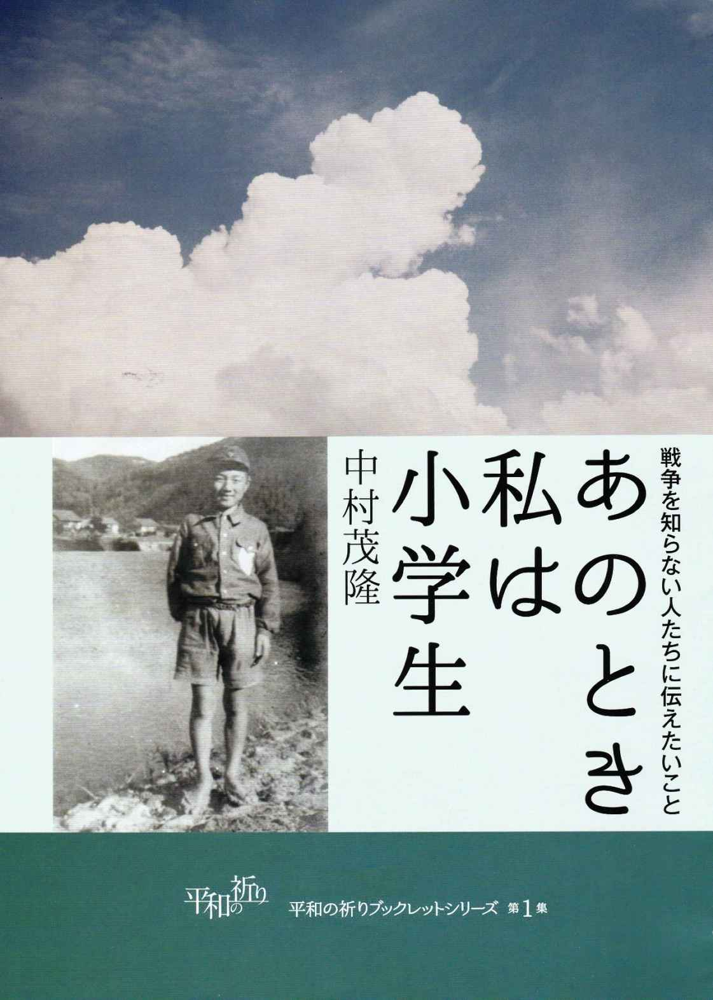
【表紙】
１９４４年秋、小学校６年生、集団疎開先で、面会に来た母が撮影。帽子と服は紙製。衣類が切符制で統制されていて入手困難なため。和紙を細く撚って糸状にしたものを織って作られている。これなら自由に買えるが、雨に濡れるとグシャグシャになった。靴も貴重品なので滅多に履かず、普段は農家から藁を入手し、各自で編んだ草履を履いていた。
今から四十数年前、ある日の夕刻、私は三人の子供を連れて摩耶山麓を散策していた。私は三十代後半、長女は小学校低学年だった。
その頃の摩耶山麓には、まだ大小さまざまな横穴式防空壕が、そのままに放置されていた。長女が「あれはなに？」と尋ね、私が「あれは昔、日本がアメリカと戦争していた時......」と言ったとたん、彼女は驚きの声をあげ、家へ帰り着くなり興奮して叫んだ。
「お母さん、お母さん、日本はアメリカと戦争していたんやって！」
私達夫婦は同い年で、それぞれに神戸で育ち、子供なりに戦争を体験していた。しかし、戦後二十数年、それらを思い出すこともなく、思い出したくもなく、そもそも思い出すゆとりもなく、ひたすら前を向いて歩いてきた。娘の言葉は戦争のことを子供たちに伝えなければならないことを痛感させた。
それから私達は折に触れて、子供たちに戦争について語る努力をした。子供たちは初めのうち興味を示していたが、やがて「またか......」というような顔をするようになり、妻は腹を立て、戦争のことを話すのを止めてしまった。
しかし、長女が小学校の、息子が高校の教員になった時、私をそれぞれの学校によび、児童・生徒に戦争を語る機会を作ってくれた。その場合、私に語れるのは「子供の目から見た戦争」だったことが幸いした。小学校では戦争中の食べ物の話に強い関心が集まった。担任の先生が「いつもは給食を半分以上残す子がたくさんいるのに、あの日は誰もが給食をきれいに食べていました」とおっしゃっていた。
「戦争はいやだ、平和がいい」と言葉で言うことは簡単だが、七十年前の日々が再び繰り返されることのないようにするために、私達はあれらの日々にあったことを出来る限り多く具体的に知っておくことが大切だと思わざるを得ない。以下に述べることが、そのための一助になれば幸せである。
私が小学校低学年だった一九四〇年（昭和十五年）頃、友達同士で熱っぽく語られたのは、「弾丸列車」すなわち、大砲の彈のようなスピードで走る列車の噂であった。
それは、昭和十二年の南京陥落で終わるはずだった日中戦争が、ズルズルと泥沼にはまりこみ、アメリカとの開戦も間近という緊迫した時期だった。
武器・弾薬を迅速に運ぶために研究・開発されつつある「弾丸列車」は極秘の存在であり、地下深く掘られたトンネルの中を走るというのである。
あの頃の小学生は近所付き合いが親密で、夏休みになると、誰からともなく誘い合わせて、昆虫採集のため、よく摩耶山へ登ったものである。
木立にこんもりと覆われた摩耶ケーブル西側の登山道をしばらくゆくと、草の生い茂った、小高い丘があった。そこからは神戸の街が一望できた。
上級生の誰かが言った。「『弾丸列車』のことやけどなあ。スパイに知られたらアカンから、秘密になっとうけど、ほんまは、もう走っとうかもしれへんで。ちょうど、この下あたりかもしれん」
そうして彼はしゃがみこみ、地面に耳をくっつけて、「弾丸列車」の走る音を聴こうと真剣な表情になった。私達下級生も彼にならって真剣な顔で、地面に耳をあてた。
当然なにも聴くことはできなかった。そこは尾瀬づたいの道で、谷底にはケーブル・カーが通っており、少し山寄りには、ケーブル・カーのトンネルがある。
万が一その時「弾丸列車」が走っていたとしても、それは谷底を通るケーブル・カーの、さらに下を走っていることになるから、こんな小高い丘の地面に耳をあててみても、なにも聞こえるはずはなかった。
こんなことを微笑ましく懐かしく思い出しながら、私はふと気になって、神戸市灘区の地図を出して来た。山陽新幹線は摩耶山の地下のどの辺を走っているのだろう。
地図によれば、新幹線はケーブル・カーのトンネルの下あたりを走っていた。
少しずれてはいるが、私達が「弾丸列車」の走る音を聴き取ろうと、地面に耳をあてた場所は、そこからさほど遠くない位置なのであった。
東海道新幹線の開通は一九六四年、山陽新幹線の新大阪---岡山間開通が一九七二年、それは「あの頃」から三十年ほど後のことである。
「弾丸列車」の開発・研究は幻ではなく、「あの頃」実際に進められていたのだと思う。
それは新幹線の誕生に大きく貢献したと思いたい。
（二〇〇五・一一・一八）
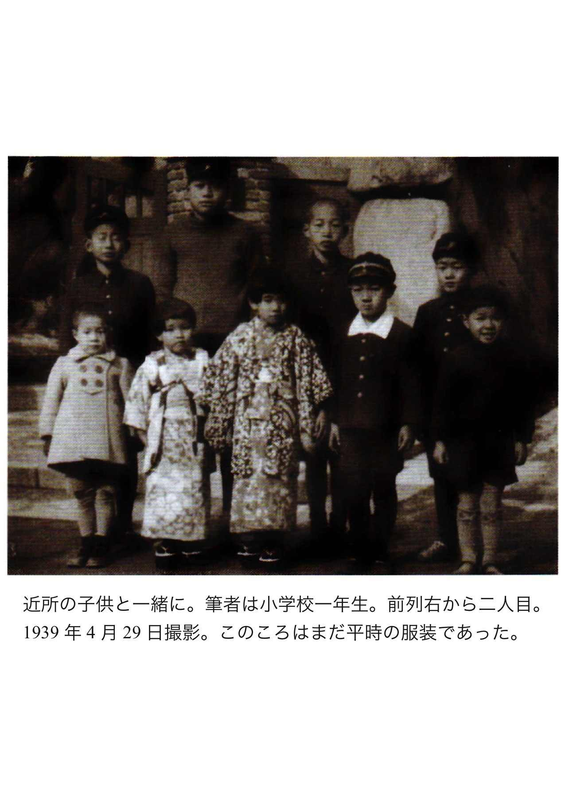
あの戦中・戦後、いくつかの時点で、私の父が何をどう考えていたか知りたい---と思った時には、父はもうこの世にいなかった。
父は一九六二年、初孫の誕生から四日後に五六歳で亡くなった。その時私は二九歳、もっぱら前を向いて走り続けており、過去を振り返る心のゆとりが生まれたのは四十歳台のはじめである。
私がまず父に訊きたかったのは、一九四一年（昭和十六年）十二月八日朝のことである。あの朝、水屋（食器棚）の上に置かれた我が家のラジオは、興奮した声で臨時ニュースを繰り返していた。ハワイ・真珠湾に停泊中のアメリカ戦艦に対する日本空軍の奇襲攻撃と、それに関する大本営発表（「帝国陸海軍は本八日未明、西太平洋において米英軍と戦闘状態に入れり」）である。
私達家族（父母と私と弟）はチャブ台を丸く囲んで朝食をとりながら、ニュースを聴いていた。国民学校（前年までは尋常小学校）三年生の私にはラジオが伝えている事がよく理解できなかった。ただそれが、一週間くらい前からラジオのニュースが毎日のように繰り返していた「ハル長官（アメリカの国務長官）」という言葉と関係があるらしいことは何となく分かった。
この時父が何か一言言っていたら、それを私は忘れなかっただろうが、その記憶はない。私達四人は終始黙々と朝食をとっていたのだと思う。
あの朝、かねてから父が怖れていたことがとうとう起こってしまった。それは「日本は戦争に勝てるのか」ということよりも、「私はどうなるのか」という、父の身に差し迫った問題をはらんでいた。
父は英国資本の香港上海銀行の行員であり、そのことに誇りを持ち、同僚の英国人たちを信頼し敬愛していた。何かあるたびに「......だから日本人はキライだ。英国人は絶対にそんなことはしない」と言うのが父の口癖だった。
十二月八日は月曜日。朝食がすむと父は出勤し、今日から敵国人になってしまった英国人の同僚たちと会わねばならない。どんな挨拶をすればよいのか......。
さらに近い将来、この銀行は業務を閉鎖し、親しい英国人たちは本国に帰ってしまうだろう。そして父は職を失うことになるのだ。
あの日の朝、父の頭の中は、これらのことでいっぱいだったと推測される。
翌年春、銀行は閉鎖になり、日本人側上司の斡旋で、父は大同貿易（のちに合併されて丸紅商事となる）という商社に転勤、昭和十八年十二月十日、国民徴用令により川西航空機鳴尾工場で軍用機の生産に従事する。ペンをドリルに持ち替えての馴れない仕事のため、翌年十月、結核の初期症状が出て療養生活を余儀なくされ、若い班長に「この非常時に何たる非国民！」と罵倒された。
治癒した父は、十一月末から川西航空機木材工業という木製飛行機（！）を試作する工場の庶務課に配置転換になる（やっと父にふさわしい事務職につけた）。
一九四五年八月十五日、敗戦により徴用令は解除され、何の保証もないまま失職、新聞広告を見てアメリカ占領軍の通訳となる。やがて元の銀行の上司の斡旋で、大阪製鎖造機という軍需会社の戦時賠償業務に通訳として從事する。
その仕事が片付いた頃に、香港上海銀行は日本での業務を再開し、父は七年ぶりに本来の仕事に複帰した（一九四八年、私は高校一年生だった）。
この時、父が言った言葉を私は忘れない。「これでお前たちを大学まで行かせてやる目途が立った」。高知の僻村に生まれ、最終学歴が高等小学校卒業だった父にとって、息子たちを大学に進学させることは究極の悲願だったのだ。
父は戦争末期、既に三十歳台後半だったため、兵隊にとられずにすんだのだ---と思っていたが、同時期、父と同世代の人たちが実に夥しく兵隊にとられて亡くなっていることを後で知り、言葉を失った。
将来の夢を踏みにじった徴用によって、父の命は守られたことになる。
（二〇一五・九・九）
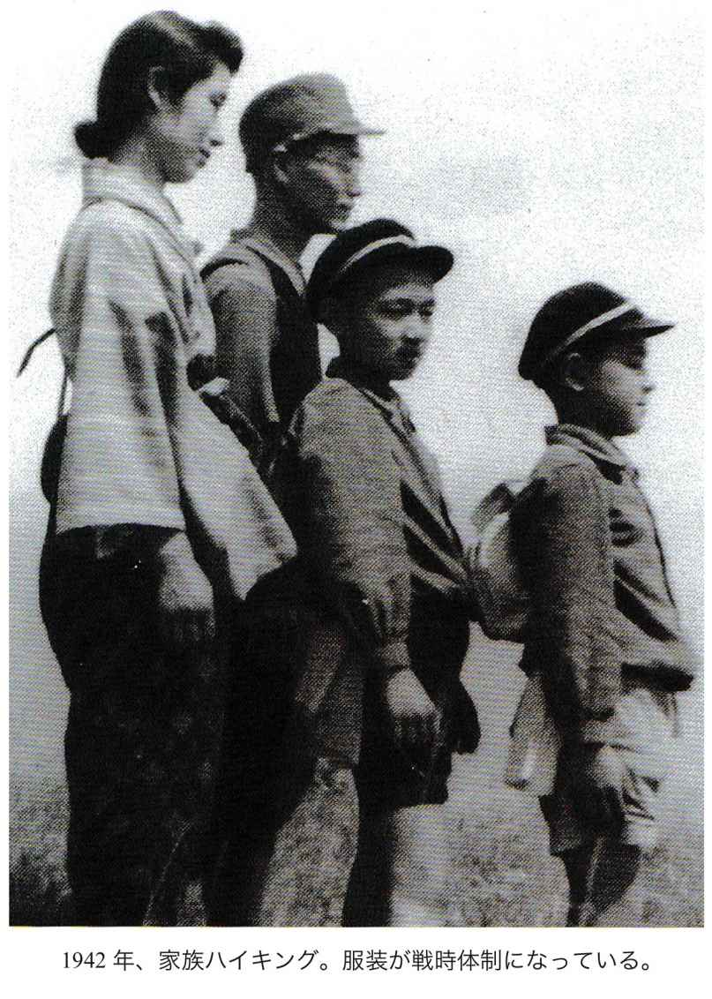
一九三七年（昭和十二年）十二月、南京の陥落で、日本の勝利のうちに日中戦争は終わるはずだったが、そうはならず、逆に戦争を長期化させる羽目に陥った。当時の日本は石油の八十パーセントをアメリカからの輸入に頼っていたが、中国を支援していたアメリカは、一九四一年八月一日、日本への石油輸出停止に踏み切った。経済制裁である。日本は新たに石油資源を確保するため、当時オランダの植民地であったインドネシアの油田地帯を占領すべく、戦線を中国大陸から一挙に東南アジア地域に拡大してしまった。
こうして一九四一年十二月八日、太平洋戦争（当時は大東亜戦争）が始まった。
「神戸市交通局六十年史」（昭和五十六年十二月一日発行）によれば、ガソリン窮乏のため、昭和十六年九月一日より、市営バスはガソリン車から木炭・薪などの代用燃料車に全面的に切り替わり、市電との併行路線・重複路線は順次廃止されたとある。
この時期以後、ガソリンで走っていたのは、軍・軍需関係の車だけになったと思われる。
とはいえ、いつの時代も物を運ぶ車は必要である。当時それらは荷馬車、ひとが曳く大八車、自転車に荷車を連結したリヤカーなどに代わり、既にトラックやオート三輪の姿は、タクシーとともに見かけられなくなっていた。
昭和十八年（一九四三）九月一日の夕方、「急にサイレンが鳴ったので、びっくりした。本物の警戒警報だ」と私の日記にある。当時「訓練警戒警報」には馴染んでいたが、「本物の警戒警報」は初めての経験で、サイレンの鳴り方が全く異なるため、「びっくりした」ようだ。
翌二日、父は警備のため会社に泊まりこむことになり、既に食料事情は厳しく、食堂や仕出しがなかったためか、会社からの連絡を受けて、小学校五年生の私は「自転車で御弁当を持っていった」。子供用の二十四インチの自転車で、当時の市電の通りを上筒井-布引-加納町三丁目（ここまで現在の「山手幹線」に重なる）から三宮を経て、海岸通にある父の会社まで行って帰って来たのである。なぜ市電を利用しなかったか。理由は分からない。
市電の走る通りを小学生が自転車で行くなどということは、現在の交通事情からは信じられないだろうが、当時それはさほど危険な事ではなかった。なぜなら、前述のような理由で、あの通りを市電以外の乗り物はほとんど走っていなかったからである。そんな光景をイメージすることは、現在の時点ではほとんど不可能だろう。
道中私がもっとも恐れていたのは、交通事故に遭うことではなく、ここで空襲警報が鳴ったらどうしようかということだった。翌三日、警戒警報は解除された。
この時期の戦況を、残された記録から主なものを拾ってみる。
一九四三年五月十二日、米軍、アリューシャン列島のアッツ島に上陸、二十九日、アッツ島守備隊二五〇〇人玉砕（大本営が初めて「玉砕」という表現をとる）、九月二日、上野動物園、空襲時に猛獣逃走の危険からライオン等二十七頭を毒殺。
せっかく確保した石油も、その後の戦況が悪化し、海上輸送路が遮断されたため、日本へはほとんど届かなかったようである。前述の「六十年史」によると、昭和十九年三月末で、市バスの在籍車百七十八両（いずれも代用燃料車）のうち、可動車わずか十八両、さらに空襲激化により、昭和二十年八月段階で、「市域全域で走っている市バスがたった二両という状況」だった。
当時私の住んでいた地域でいえば、三宮から布引・青谷・五毛を経て阪急六甲に至る路線は、ほとんど運転休止状態で、摩耶山麓一帯に住む市民は唯一の交通手段を奪われ、私達神戸一中の生徒も、省線（現・ＪＲ）灘駅、阪急西灘駅（現・王子公園駅）から摩耶山麓の校舎まで、「地獄坂」と呼ばれる一直線の急坂を毎日歩いて往復した。
この状態は戦後も暫く続き、青谷の急坂を登りかねた代用燃料車が立ち往生している姿を印象深く思い出す。
この路線が完全に復旧したのは戦後も数年経った昭和二十五年（一九五〇年）末か二十六年初頭、すなわち神戸一中が神戸高校となり、私達三年生が卒業する間際だったと思う。バスは複旧したが、生徒は通学に利用してはならない、従来どおり地獄坂を登って来いと学校側から言われていたのを記憶している。
こんなことを思い出させたのは、イラク戦争末期のテレビ映像である。ミサイル攻撃を受けて陥落寸前のバグダッド市内を、クルマがビュンビュン走っている。さすが産油国だ。
石油を輸入に頼るしかなかった島国日本の、クルマが途絶えてしまった戦争末期の光景を、バグダッドのそれに重ね合わせながら、このことは書いておかねばならないと思った。
（二〇〇六・四・一七）
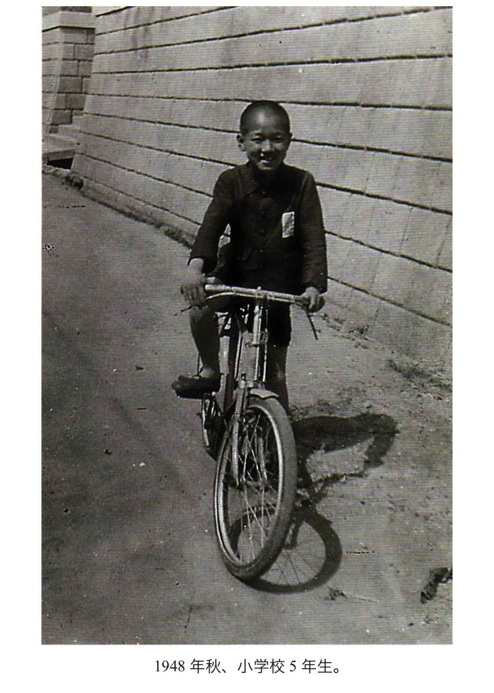
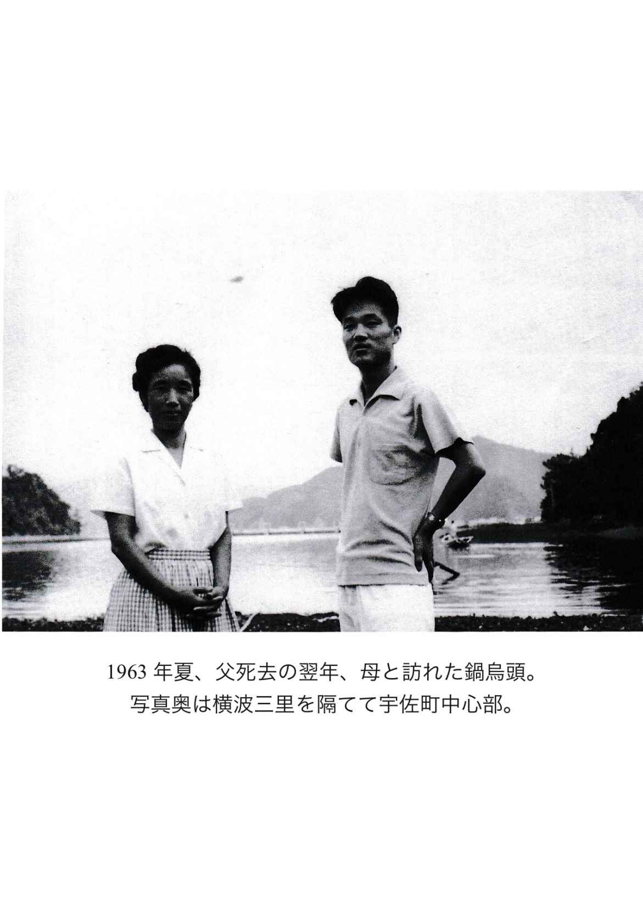
私の父は、明治三十八年（一九〇五年）高知県高岡郡（現・土佐市）宇佐町宇佐二八八四に生まれた。
この地は桂浜のはるか西方に位置し、太平洋の海水は宇佐から須崎まではいりこみ、「横波三里」とよばれる細長い内海をかたづくっている。父が生まれたのは、宇佐の中心部とは「横波三里」を隔てた対岸の入江にある通称「鍋鳥頭（なべうど）」という小さな集落である。
私が国民学校四年生の夏休み（一九四二年）に、ここを訪れた時の記憶が今も鮮明に残っている。
終点の宇佐でバスを降りた私達家族四人は海辺の船着き場に腰掛ける。対岸のひとつの入江から小さな舟がゆっくりこちらへ漕いでくるのが見える。舟の姿はなかなか大きくならないが、私達はただ辛抱強く待つしかない。やっと船着き場に着いた舟から「来たかよ」と伯父（父の長兄）がのんびりとした口調で呼びかける。土佐弁で「いらっしゃい」という意味の挨拶である。丁寧な挨拶は「おいでましたかよ」となる。
私達を乗せた舟は鍋鳥頭へ引き返す。内海の水は透明で底まで見え、獲られる心配もない魚たちが群れをなして悠々と泳いでいた。
鍋鳥頭は家屋三軒（現在そのうちの一軒は廃屋になっている）の集落で、夜の灯りはランプだった。
戦争末期、父は徴用工として、西宮・鳴尾の川西航空機工場で戦闘機「紫電改」を造っていたが、敗戦により徴用が解除されると、真っ先に宇佐へ飛んで帰って老母を見舞い、神戸へ帰ってくると開口一番「鍋鳥頭に電気がついとった！」と叫んだ。それどころか手漕ぎの舟がモーターをつけスクリューで走っていたという。それもこれも、ここが海軍の特攻隊の基地になったからだというのである。
特別攻撃隊といえば、一九四一年十二月八日のハワイ・真珠湾奇襲に参加した特殊潜航艇に始まるが、戦争末期には特攻隊といえば飛行機が圧倒的となり、敗戦直後の私の中では、この小さな漁村の入江と特攻基地とが、イメージとして結びつかなかった。
時が経つにつれて「人間魚雷」の存在が明らかになると、この入江にできたのは「人間魚雷」の基地だったかもしれないと思うようになった。その後私は幾度となく鍋鳥頭を訪れたが、伯父や従兄弟たちの口から、特攻基地の話題が出ることはなかった。
やがて、父とその兄弟姉妹が相次いで世を去った。その頃になって私は、宇佐の特攻基地について詳しく知っておきたいと思うようになり、戦中・戦後、宇佐の中心部に住んでいた一つ年下の従妹（父のすぐ上の兄の娘）とメールのやりとりを始めた。彼女は自身の記憶をたどり、現地の図書館で資料（宇佐町史、須崎史談、元特攻隊員による記録など）を調べ、幾度かに分けて返事をくれた。整理すると以下のようになる。
特別攻撃隊の名前は「震洋」、九州大村湾で最初に編成された。
震洋艇には一型（乗員一）五型（乗員二）の二種類があり、宇佐に配置された一型は全長六米、幅一・六五米、木造合板型（ベニア板）の高速艇で、トヨタ自動車の中古エンジン八十馬力をつけ、速力二十三ノット、十二センチメートルのロケット砲一、爆薬三百キログラムを装備し（以上は記録によって微妙に異なる）、一九四四年五月二十七日の海軍記念日に試運転が成功、東北から九州にかけての太平洋沿岸に設置された基地に配備された。
高知県では一九四五年五月十日、手結、浦戸、宇佐、須崎に設置された基地に進出した。震洋艇は戦争終結までに六二〇〇隻が作られたという。
私は私なりにインターネットで「震洋」を検索し、そこで見た鮮明なカラー写真に言葉を失った。先端に爆薬をつけている以外、普通のモーターボートとなんら変わるところのない震洋艇には、「特攻」というイメージに結びつく何ものもなく、これに人間一人を乗せて敵艦に体当たりさせるという発想の人格無視に憤りを超えた悲しみを覚え、やりきれない思いがした（これを再現した模型は、呉のヤマト・ミュージアムで見ることができるという）。
当時の宇佐町民は誰もが、訓練のために横波三里を走る震洋艇を見ていたが、「震洋」という名前は知らず、「特攻隊」と呼んでいたという。その存在は地元では秘密でもなんでもなく、小学校六年生だった従妹は、ある隊長と知り合いになり、発破をかけて魚を獲るのに連れて行ってもらったと語る。
基地が始動して間もなく、宇佐町の裏山の山影から米艦載機が突如姿を現わし、機銃掃射を加え、六月には米戦艦による艦砲射撃の警報が出て、町民は裏山に避難し、結果は何事もなかったものの、それをきっかけに従弟妹たちは仁淀川を遡って、伊野町にある彼らの母の実家へ疎開することになった。七月には宇佐も空襲を受け、焼夷弾二発が落とされ、連日夜半に空襲警報が鳴り、寝られない日々が続いた。
疎開といい空襲といい、静かな宇佐の町も、都会である神戸と同じ体験をしたのだ。これらの攻撃は、米軍が特攻基地の存在を察知したからとしか考えようがない。
八月十五日の「玉音放送」の意味は特攻基地でもよく理解できなかったようで、同日夜半、「土佐沖を米機動部隊北上中、これを直ちに撃滅せよ」との命令が須崎基地より下り、十六日未明にかけて一部の震洋艇が数回出撃したが、「会敵せず帰隊した」と記録にある由。
だが、同時刻、同じ理由で出撃準備中だった手結基地では、船艇の爆発が連鎖反応を起こして、一瞬のうちに百十一名が死亡する大惨事となった。それは戦争終結の翌日のことだけに一層痛ましい。毎年八月十六日、現地では慰霊祭が行われ、テレビで放映されるので、高知の人たちは誰もがこの事故のことを知っているという。
このような不幸な事故はあったものの、基本的には日本本土決戦のために配備された震洋特攻隊は、上記のように「会敵せず帰隊」し、実際には出番がなかったことに救われる思いがする。
鍋鳥頭に点いた電気のことだが、当初隊員たちは基地とともに電線を撤収しようとしたのを、区長の伯父が近隣の集落の署名を集めて町役場に掛け合った結果、残されることになったのだと、当時小学生だった従弟から聞いたのが、唯一鍋鳥頭での特攻隊に関する話題だった。
五十隻あったといわれる宇佐の震洋艇は、すべて海底に沈められたが、水深は浅く、水がきれいなので、晴れた日には海面からそれらの姿がはっきり見えた、と従妹が話してくれた。
伯父の伝馬船につけられたエンジンとスクリューは、沈められた震洋艇から譲り受けたものなのだ。
やがて、「横波三里」の入口に橋が架けられ、須崎までのスカイラインが開通し、鍋鳥頭へは裏山から車で入れるようになり、あの懐かしい小舟も遠い思い出の存在になってしまった。
（二〇〇六・四・三）
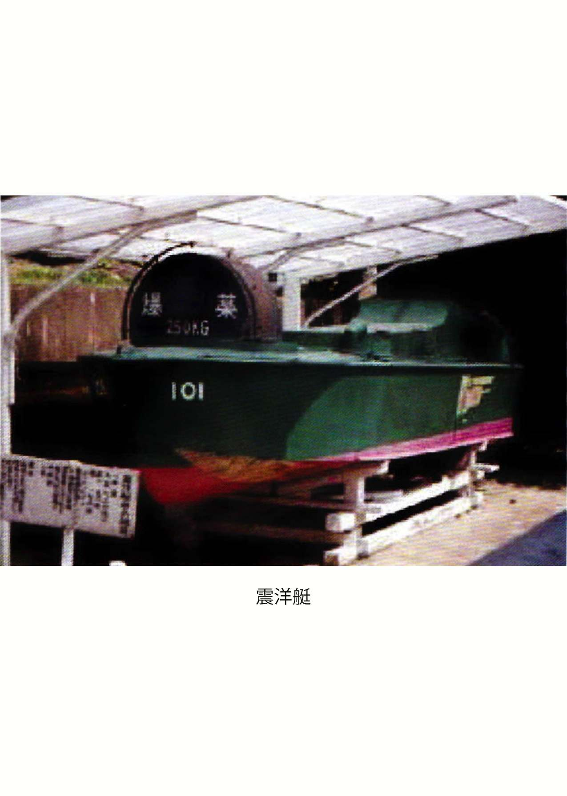
天皇の存在について、私がいろいろと考えるようになったのは戦後のことである。
戦争中の小学校では、天皇の存在について触れられる機会は多かったが、それらは当時としてあまりにも自明のことでありすぎたので、こと改めて考えたりしたことはなかった。
毎日の朝礼では「宮城遥拝」を行なう。「天皇陛下はお父様、皇后陛下はお母様」と教えられ、皇居におられる両陛下に対して最敬礼で朝の挨拶するのが「宮城遥拝」である。
私たちにとってそれは毎朝の習慣にすぎなかったが、今ふりかえると、全国津々浦々の小学校で子供達・先生達が、ほぼ同時刻に日本の中の或る一点に向かって最敬礼している姿を、鳥瞰図的に眺めたら、それは何とも不思議な光景ではないだろうか。
一九四五年八月十五日まで、日本には一年に四日、国家の祝祭日があった。
一月一日、紀元節（二月十一日 現・建国記念日）、天長節（昭和天皇誕生日 四月二十九日 現・みどりの日）、明治節（明治天皇誕生日 十一月三日 現・文化の日）がそれで、これをあわせて「四大節」と呼んだ。
祝祭日の朝、私は弟と日の丸の旗を家の軒先に掲げる。町並に一斉に日の丸がはためいている光景は壮観であり、それを眺めながら、私は日本に生まれた幸せをひしひしと感じた。ただ、その幸福感が、天皇の存在と結びついていたかどうかは、よく分からない。
「四大節」も日の丸の掲揚も、日本の敗戦（一九四五年八月十五日）直後はアメリカを中心とする占領軍の命令により禁止された。日の丸を再び自由に掲げてよいことになったのは一九四九年一月であるが、「四大節」はなくなったままだし、なによりもこの数年の空白期間に、ほとんどの日本人は日の丸の存在自体を忘れてしまった。祝日は名前を変えて復活したが、私の周辺で、その日に日の丸を掲げている家は、現在でもほとんど見当たらない。一軒でも日の丸が掲げられていれば、それは大層珍しく、「なぜ？」と思ってしまう。
私は日の丸のデザインが好きである。白地に赤一色の円を書いただけの、これほどすっきりとしたシンプルな国旗は世界中どこを探しても見当たらない。しかし、私の中で「日の丸のデザインが好き」ということと、それを掲げることとの間には大きな溝がある。
家々の軒先に日の丸が一斉にはためく、かつての祝祭日の光景をふりかえる時、そこに一軒だけ日の丸を掲げていない家があり、掲げ忘れたのではなく、掲げないことを一つの意思として示しているとしたら、あの時代、それはどんなに勇気の要ることだったろう。
現在の私には、とてもそんな勇気はないから、あんな時代には再び戻ってほしくない。
日の丸を掲げる掲げないは、あくまでも日本国民一人一人の自由な意思によって選択され、それが充分に許容されるような大らかさを、日本の社会は今後とももち続けてほしい。
（二〇〇六・五・二三）
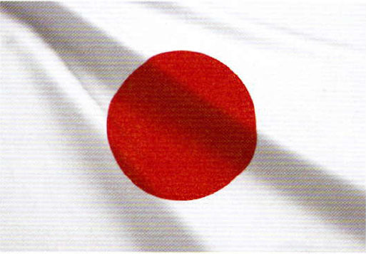
明治二十三年（一八八〇年）十月三十日から昭和二十年（一九四五年）八月十五日まで、日本には「教育勅語（「教育に関する勅語」）」というものがあった。
先に述べた「四大祝祭日」（「宮城遥拝・四大節・日の丸」参照）の小学校における式典行事の中心は、校長先生による「教育勅語」の「奉読」であった。天皇の言葉を代読するということで、これを読み違えた校長先生が切腹自殺なさるという悲劇まで起こった。
「教育勅語」は三年生までは聴いていても呪文のようなもので、皆目理解できない。四年生の二学期になると、全員がこの全文（以下に示す）を暗誦しなければならない。
朕惟フニ我カ皇祖皇宗國ヲ肇ムルコト宏遠ニ徳ヲ樹ツルコト深厚ナリ我カ臣民尭ク忠ニ尭ク孝ニ億兆心ヲ一ニシテ世々厥ノ美ヲ濟セルハ此レ我カ國體ノ精華ニシテ教育ノ淵源亦實ニ此ニ存ス爾臣民父母ニ孝ニ兄弟ニ友ニ夫婦相和シ朋友相信ジ恭儉己レヲ持シ博愛衆ニ及ホシ學ヲ修メ業ヲ習ヒ以テ智能ヲ啓發シ徳器ヲ成就シ進テ公益ヲ廣メ世務ヲ開キ常ニ國憲ヲ重シ國法ニ遵ヒ一旦緩急アレハ義勇公ニ奉シ以テ天壌無窮ノ皇運ヲ扶翼スヘシ是ノ如キハ獨リ朕カ忠良ノ臣民タルノミナラス又以テ爾祖先ノ遺風ヲ顕彰スルニ足ラン
斯ノ道ハ實ニ我カ皇祖皇宗ノ遺訓ニシテ子孫臣民ノ倶ニ遵守スヘキ所之ヲ古今ニ通シテ謬ラス之ヲ中外ニ施シテ悖ラス朕爾臣民ト倶ニ拳拳服膺シテ咸其徳ヲ一ニセンコトヲ庶幾フ
明治二十三年十月三十日
御名御璽
もちろん明治天皇が直接書かれたものではなく、政治家に国文学者・漢文学者が協力して作り上げ、「天皇のお言葉」として発布したのである。
原文は上記の通りで、句読点・濁点は省かれ、送り仮名は旧い型である。天皇の「お言葉」なので振り仮名は使われていない。このままでは小学校四年生に読めるわけがない。当然先生の指導の元に仮名を振って暗誦したのである。この度六十年ぶりに出してみたが、あの時必死で暗誦したおかげで、全文振り仮名なしでも読めたのには驚いた。
暗誦の成果を発表する時間が来る。先生が教室の一隅から順番に指名してゆく。起立して暗誦するが、途中で言葉を忘れ立ち往生すると、立たされたまま、順番は次へ移ってゆく。一回では終わらず、全員が勅語全文を暗誦できるようになるまで何日も繰り返される。
立たされては不名誉だというので、暗誦する日の前夜には、両親の前に正座して、予行演習が行なわれ、完全に暗誦できるようになるまで、両親も徹底して付き合ってくれた。
勅語の内容について、先生から一通りの説明はあるが、子供達にとって意味は二の次、一にも二にも暗誦である。だから「教育勅語」の内容や発布された意味が分かったのは、戦後になってからで、その時には「教育勅語」の存在は無効になっていた。
ただ、最近会った高校時代の級友で熱心なクリスチャンが、昨今の世の乱れは「教育勅語」がなくなったからであり、これを複活させるべきだと真剣な顔で言ったのが印象に残っている。今問題になっている「教育基本法」は「教育勅語」に代わるものとして作られたと聞く。今回それを「見直す」というのは、その内容を「教育勅語」に近づけるということだろうか。ここでは、その議論は止めておく。
ところで、「勅語」の冒頭の「朕惟フニ」は「チン思うに」と読む。朕は当時、天皇自身が自分のことを言う時に使った一人称の代名詞である。それは男性の大事な個所の愛称と音が同じで、男の子にとっては大層身近なだけに、妙に気になる音である。それゆえにこの文節に対する不謹慎なパロディーがいくつも誕生し、瞬く間に男の子の間に広まった。当時それは明らかに「不敬罪」に該当するようなものであったが、私達はそれが男の子同士の世界以外には絶対漏れないという不思議な確信をもっていたから、暗誦できずに立たされた子も、一回で合格した優等生も、ともに笑い転げ、そのことによって、暗誦の重苦しい緊張から解放されたのであった。
因みに当時、三年生以上は男女別の学級編成だったから、女の子はこのパロディーを知らないと思う。
（二〇〇六・五・二三）
一九四五年八月十五日まで、日本には「四大祝祭日」というものがあったことは、前々回述べた。祝祭日当日、小学校で行なわれる式典の中心は、校長先生による「教育勅語」の「奉読」であることも、前回述べた。「教育勅語・奉読」の後、そこに書かれた趣旨を、日々の生活の中で守ってゆく決意を表明するのが、「勅語奉答」の歌である。
私の通った神戸市立摩耶小学校は、当時マンモス校（児童数約二〇〇〇）だったので、式典は低学年と高学年の二回に分けて行なわれ、「勅語奉答」の歌も二通りあった。
低学年用の歌詞は以下の通り。資料が全くない初で、記憶に従って「ひらがな」で記す。
あなとうと（尊）しな おおみこと（大勅語）、
みことのおね （勅語の旨）を こころにえじて、
つゆもそむ（背）かじ あさゆう（朝夕）に、あな とうとしな おおみこと
訳文
ああ、尊い天皇陛下のお言葉！
そのお言葉を心に深くとどめて、少したりとも外れたりすることのないように、
朝に夕に励みます。
短く、メロディーも素朴だが、低学年には意味も分からず、先生も教えて下さらなかった。「こころにえじて」の「えじて」は、ニュアンスは伝わるが、どんな字を充てるのか、未だに分からない。
高学年用は以下の通り。詞は勝安芳すなわち勝海舟、曲は小山作之助。
あやに畏 き天皇 の、あやに尊き天皇の、
あやに尊く長くも、下 し給えり大勅語 。
是 ぞめでたき日 の本 の 国の教 の基 なる、
是ぞめでたき日の本の 人の教の鑑 なる、
あやに畏き天皇の 勅語 のままに勤 みて、
あやに尊き天皇の 大御 心 に答えまつらん。
訳文
尊い天皇陛下が下しおかれたお言葉、それは日本の国の教えの基本であり、それは日本の国の人の教えの手本である。
そのお言葉の通りに励んで、天皇陛下のお心にお応えします 。
これも意味は教えてもらえなかったが、メロディーがきれいなので、私は好きだった。
真中の部分で、テンポが少し遠くなり、再び元のテンポに戻るなど、学校で習う唱歌や、キリスト教の讃美歌よりも、規模が大きく構成が複雑で高級感があった。
この「高級感」は伴奏のハーモニーにもあり、小学生の私は教科書の「教師用」を買ってきて、好んで弾いていた。「勅語奉答」のみならず、「四大祝祭日唱歌」の伴奏部を弾いてみると、制定当時（明治二十六年）の日本の音楽家達が、これほどまでに高度な和声感覚をもっていたとは信じられず、この部分は日本に招聘されていた外国人音楽家の手によって書かれたと考えるよりほかない。
（二〇〇六・六・九）
過日、母校・東京藝術大学音楽学部同声会兵庫支部の総会に出席、その後の懇親会で、昭和十九年（一九四四年）卒業の大先輩Ｎ先生（女性）のお隣に座り、戦争末期の東京、卒業してすぐに高等女学校に勤務された時代の神戸の様子などを詳細に伺った。
話の流れから教育勅語が話題になった時、Ｎ先生は物凄いスピードで、教育勅語を一気に暗誦された。この勅語を暗誦した最後の世代に属する私は、どこまで思い出せるか試してみたくなり、先生に「もう一度ゆっくり」とお願いして、その後についていった。戦後の日本ではタブーである教育勅語の、さらに問題の個所になると、先生は内緒話をするように手で口をおおい、声を落としてそらんじられ、その仕草がとても可愛らしかった。
続いて神武天皇から昭和天皇まで百二十四代の天皇名（私も暗誦した記憶はあるが、ほとんど思い出せない）を、これまた「立て板に水」で暗誦なさるのだが、「継体（第二十六代）」の所でピタリと停められ、「ここで一旦途切れますでしょ」と至極当たり前のことのように言われたのには驚いた。天皇家の血統が「万世一系」ではないという説をご承知なのだ。
その先生が「父母に孝に、兄弟に友に、夫婦相和し、朋友相信じ、恭倹己を持し、博愛衆に及ぼし......って、今でも通用するわ。何にもおかしいことない」とおっしゃった。
高校時代の同級生で熱心なクリスチャンであるＮ君が、最近のモラルの低下は教育勅語がなくなったからで、これを復活させる必要があると、真剣な顔で訴えたのを思い出す。
さらにＮ先生が「一旦緩急あれば義勇公に奉じ......これも当たり前のことよね」と言われ、虚をつかれた私は絶句した。
以上の話は、あの戦争を体験した現在七十歳以上の人たちには通じる（Ｎ先生・Ｎ君の意見に賛否両論あるとしても）が、戦後生まれの人達には何のことかチンプンカンプンで、関心のもちようがないかもしれない。
しかし戦後、教育勅語に代わるものとして、一九四七年（昭和二十二年）に教育基本法が制定され、その見直しが現在大きな問題になっていること、中でも「一旦緩急あれば義勇公に奉じ」の個所は、もっとも問題になっている「愛国心」と深く関わる個所である。
当時、意味も理由も分からず、教育勅語（小学四年生で）、や歴代天皇名（五年生で）を暗誦させられ、今頃になって、その意味や理由を考えている七十歳以上の者達の一人としては、戦後生まれの人たちに、まず「ありのままの戦中」を知ってもらうこと（これ自体、大変難しいことなのだが）、憲法・教育基本法の見直しに関する議論は、その上で、自分自身の意見と判断をしっかりもって、自由にやっていただきたいと思わずにはいられない。
私は日ごろから小学校高学年以上の児童・生徒には「君が代」の歌詞の意味を教えるべきだと考えている。その上でこれを国歌と考えるかどうかは、子供達の判断に任せたらよいし、必要なら討議させたらよい。
（二〇〇六・九・二九）
戦前の四大祝祭日には、小学校で式典が行なわれ、校長先生が「教育勅語」を「奉読」なさり、それに応えて私達は「勅語奉答」を歌った。
その後、校長先生の「お話」があり、式の最後は、それぞれの祝祭日の歌を全員で歌って、終わりとなる。ここでは、それらのうち、現在なお親しまれている「一月一日」の歌から、先ず一番の歌詞を記す。
年の始めの 例（ためし）とて、終なき世の めでたさを、
松竹（まつたけ）たてて、門（かど）ごとに 祝う今日こそ 楽しけれ。
「松竹」は「門松」と言い、松と竹とをアレンジした、縁起のいい飾り物で、現在でも正月には、商店・旅館・料亭などの玄関先で見ることができる（インターネットで「門松」を検索すると、それらの写真がふんだんに出てきます）。私が小学校の低学年の頃までは、棟続きの借家だった我が家の門前にも飾られていた記憶がある。戦局が厳しくなり、「贅沢を規制する」風潮が強まったため、一般家庭では飾られなくなったのではないかと思う。
ところで、子供の世界には、いつ、どこにでも、難しい歌詞を片っ瑞から自分達に理解できる平易な歌詞に作り変える替え歌の天才がいて、上記の歌詞は以下のようにパロディー化され、それはたちまち子供達の間に広まった。
年の始めに 嫁もろて（結婚して）、尾張名古屋で 子がでけて（生まれて）、
松竹ひっくり返して大騒ぎ、後の始末は誰がする？
二番の歌詞は次の通りである。
初日のひかり さしいでて、四方 に輝く 今朝のそら、
君がみかげに 比 えつつ、仰ぎ見るこそ 尊とけれ。
訳文
一年の最初の朝に昇り、四方を照らす太陽を、天皇陛下のお姿になずらえて、
仰ぎ見るのは尊いことである。
初日の出の爽やかな光景がイメージされた直後に、「君がみかげに」と来るので、私は戸惑った。神戸市東部（当時は兵庫県武庫郡だった）に「御影」という地名があり、地元なので知ってはいたが、それがいきなりここに登場する理由が理解できないのである。
ここでの「みかげ」は「お姿」であり、「君がみかげ」すなわち「天皇のお姿」を初日の出にたとえたのであることに気づいたのは、戦後も十数年経ってからのことである。
「四大祝祭日唱歌」はいずれも天皇の存在を賛美しているが、唯一「ふつうの歌」と思っていた「一月一日」も例外ではなかったことを知った時、私はこれらを生み出した人々のコダワリに、ただただ驚嘆したのであった。
明治二十六年（一八九三年）八月十二日、文部省により告示された歌で、詞・千家尊福（せんげ・たかとみ 一八四五〜一九一八）、出雲大社宮司・東京府知事・貴族院議員・司法大臣。曲・上真行（うえ・さねみち 一八五一〜一九三七）宮内省楽師・東京音楽学校教授。
（二〇〇六・六・九）
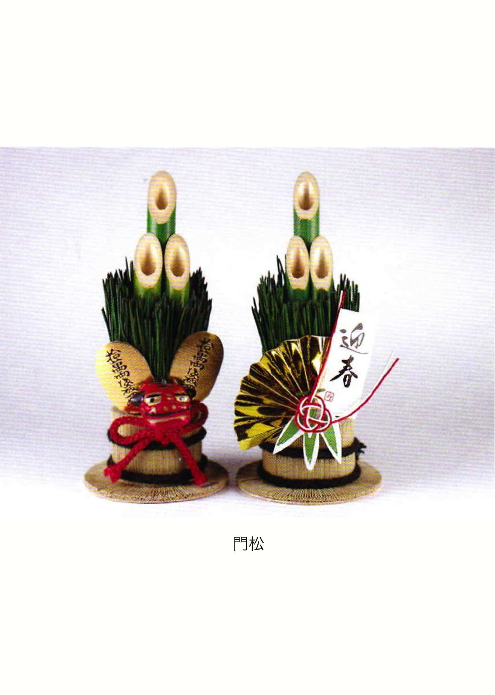
九月六日・神戸新聞所載・岩田健三郎さんのエッセイを読むと、保健所の人の話として、「野良犬はまったく‥と言っていいくらい、いまはいなくなった」しかし「年度末の三月とか、夏休み明けの九月とか、年末から正月にかけて捨て犬が多い」「引越しの時などに捨てられていく」ということが書かれている。
私が七つ八つだった一九四〇年頃、野良犬は町中にウヨウヨしていた。狂犬病は人に感染するので、飼い犬は予防注射を受け、鑑札をつけて飼うように「おふれ」（役所の命令）が出た。鑑札をつけていない犬は「おかみ」（役所）の野犬狩りで連れて行かれるのである。
その「おふれ」を我が家では甘く見て、ジョンという雑種の犬を、鑑札もとらずに、しかも放し飼いにしていた。当然のこととしてジョンは往来で「犬捕り」に捕られていった。目撃した人の話では、「犬捕り」の手並みは鮮やかなものだったという。
弟と私は家族同様のジョンをさらわれて、ただただ泣き叫んでいた。それを見かねた父は、元警察官だった近所の煙草屋の主人に頼んで、灘警察署の副署長を紹介してもらい、私を連れて署まで会いに行った。こちらの落ち度にもかかわらず、ジョンは返してもらえることになった（当時の警察は随分融通のきくところだったようだ）。
母は灘区の家から神戸駅近くの相生署まで、ジョンを迎えに行き、動物は電車には乗せられないので、弱りきったジョンに牛乳を飲ませながら、徒歩で連れて帰ってきた。
子を持つ親になった時、この話を思い出して、私にはとても子供達にそこまでしてやれたかどうか、子供達に諦めさせるよう説得に努めたのではないかと考え、憮然とした。
父が警察にワイロを使ったとも思えない。第一そんな発想はお互いになかったように思う。既に日中戦争は始まっていたが、まだまだおおらかなよき時代であった。
（二〇〇六・九・一〇）
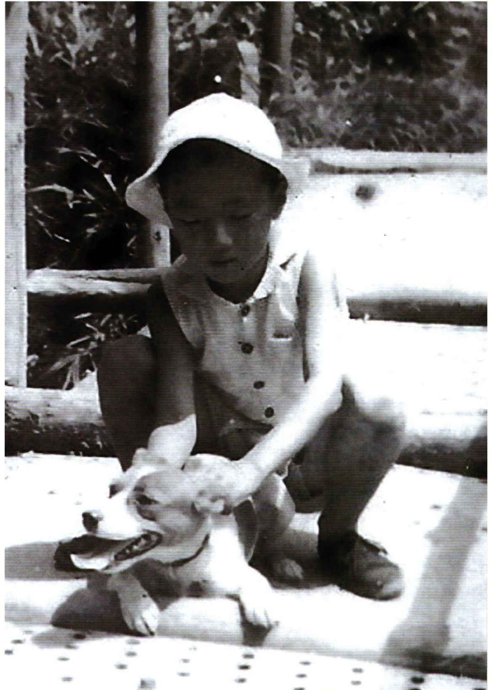
ペットブームである。私の住む海抜二百米の六甲山・中腹でも、朝夕は飼い犬の散歩で賑わう。いずれも血統書付と思われる犬が、飼い主のお供をして行儀よく歩いている。これらの犬達は出産を経験するのだろうか。それともオスばかりなのだろうか。
私が七つ八つだった一九四〇年前後には、野良犬がウヨウヨしていて、往来で堂々と交尾している姿を見かけた。印象に残っているのは、飼い犬と野良犬の交尾である。私が出会った時には、もう始まっていて、私と同様の男の子達が、そのまわりを取り囲み、しゃがみこんで、二匹がつながっている部分を、目を皿のようにしてのぞきこんでいた。飼い犬を連れていた花柄の浴衣を着た少女（私からはお姉さんに見えた）は途方にくれ、飼い犬をつないだ紐の端をもったまま、顔をそむけていた。彼女はどんな気持だろう、恥ずかしさに耐えているのだろうと考え、私は二匹の犬とお姉さんを交互に見つめていた。
我が家のジョンは実はメスであり、私の記憶している限り二度子供を産んだ。恐らく放し飼いにしていたジョンが行きずりに出会ったオスが父親だったのだろうが、両親も私達子供も相手の犬のことなど詮索することなどなく、天からの授かりものとして祝福して育て、しかるべく育ったところで、一匹残らずどこかへ貰われていった。
昭和十七年（一九四二年）五月二十七日（私は国民学校四年生）の日記より。
「この間からジョンに大分なやまされている。近所の畠を荒らしたり、近所の物をくわえてきたりして、大分近所に迷惑をかけている。また、（註： 配給制度が厳しさを増し）家では節米をしているのもジョンのためで、ジョンがいなくなると大分米が助かる（註： この時代、ドッグフードなどなく、人間への配給分をジョンに割いていたのである）。それで思い切って「犬捕り」に取りにきてもらうことになった。いよいよ今日がその日である」「学校へ行ったが、ジョンのことが気になってしょうがない」「学校から帰るとジョンがいなくなっていた。お母ちゃんに取られて行った時の事を話してもらった。ふだんは知らない人が家へ来るとはげしく吠え立てるジョンが、今日に限っておとなしい。犬捕りのおじさんが、首輪を取ってくださいというので、首輪をはずし、玄関に出した。お菓子を食べさせ〝ジョンも可哀いそうだが、お国のためだからなあ〟とお母さんが言われた。おじさんは箱車の箱に入れて、小包のように箱をなわで結んで持っていった」。
このあと、ジョンに対する詫び状と弔辞が綿々と続くが省く。そして「ジョンがよく掘り返していたあと（註： 犬なりにストレスがあった？）に墓を作ってやった」で終わる。
これ以後戦局も厳しくなり、どこの家でも犬を飼うどころではなくなったが、我が家では、このことがあったため、戦後も長らく犬を飼う気になれなかった。
（二〇〇六・九・一一）
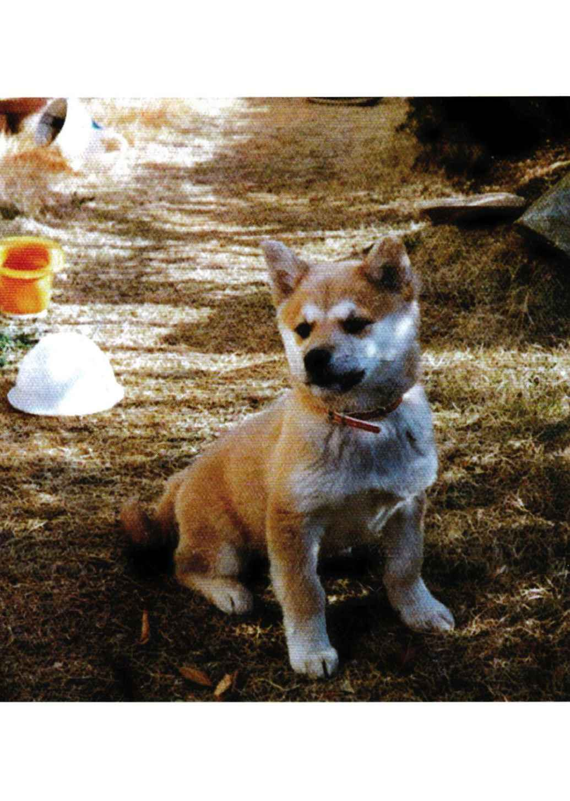
一九七九年、現在の住居に引っ越してから、我が家では子供達にせがまれて、秋田犬系の雑種をもらい、ペコと名付けて飼いはじめたが、子供達は学校があるので、犬の散歩は私の役目になった。
子犬の頃はともかく、成長したペコは元気のかたまりのような犬で、夕方になると散歩を催促し、私が行くと尻尾をちぎれるほどに振り、首輪に縄をつけ、勝手口をあけると、私をひきずるように飛び出して、全速力で走る。最近の飼い犬をみていると、飼い主より前を走っている犬など全く見かけない。今生きていれば、飼い犬同士でいろいろトラブルを起こしたに違いない。また、当時の私は五十台半ばで、まだ若かったから、ついてゆけたが、今ではとても無理だろう。ペコが死んで散歩する機会がなくなってから、私は激しい運動の機会を失い、腰痛を起こして手術をうける羽目になった。
ペコが加齢により、動きも鈍くなった頃、首にガンができ、動物病院に連れていったが、手遅れになった。死期を予期したペコは体をまるめて動かなくなり、可哀想になった私はペコをボール紙の箱に入れて、陽の当たらない物陰においてやり、ペコはひっそりと死んだ。既に長女と息子は家を出ており、次女が出勤前のひととき、庭に穴を掘り、私達夫婦が埋葬した。それは震災の少し前のことであり、ペコがあの災害を経験しなかったことは幸いであった（ただ、ペコがあの震災を予知したかどうか知りたかった）。
孫達もそれにならって、可愛がっていたハムスターの遺体を、我が家の庭に埋葬し、墓標を立てた。彼らの住むマンションには充分な庭がなかったからである。
先日、「スーパーモーニング」（朝日テレビ）を見ていると、飼い犬をタクシーにひき殺された人が、タクシー会社に交渉したが、相手にされないので、民事裁判に訴え受理されたものの、なんと罪名は「器物損壊罪」であったということで、飼い犬はモノなのか、家族の一員なのかということが論議されていた。
私達はジョンもペコも家族の一員として、ともに生活していたつもりであるが、ジョンの場合のように、戦争末期の食糧難の時代に、食べ盛りの私達兄弟をかかえた両親の苦渋の決断として、ジョンを「おかみ」に引き取ってもらったことが心の傷になっており、引越しの際などにポイと捨てたりすることなど絶対に許せない。
ちなみに、「スーパーモーニング」によれば、ドイツの憲法（民法？）では、「動物はモノではない」と明記してあるそうだ。
（二〇〇六・九・一六）
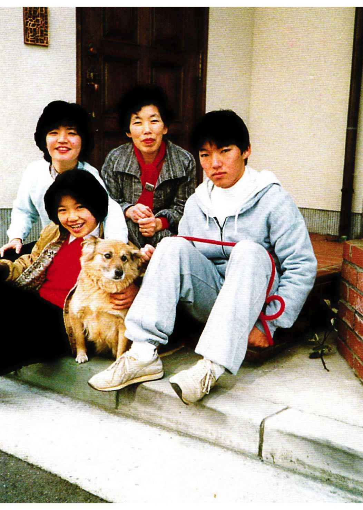
政府が議会に年度の予算案を提出する。野党は「そのための財源はあるのか」と問う。政府は事もなげに「国債でまかなう」と答える。
国債という名前は知っているが、それが何なのか、よく分からないので、我が家の経済を一切任せている妻に訊くと、国債ならウチにもある、ウン百万円買ってあるという。その利息は国債が発行される都度明示され、それは国の経済が破綻しない限り元本ともに保証される。よく外国債を勧められるが、外国の事情は変動するから、利率がよくても、うっかり買えない。過去に苦い経験をした、と言う。東日本大震災の被害状況を見ていると、その補償のために国債も底をついて破綻するのではないかと心配である。
ところで、これから話すのは、今から六十有余年前の国債についてである。
昭和十五年（一九四〇年）だったと思うが、この国の戦時体制の一環として、隣組制度というものができた。その組織は近隣の所帯を町内会→組→隣保という具合に細分して掌握する。末端の単位である隣保は一列に並んだ数軒である。
私の隣保は軒並みに同じ年頃の子供がいて、家同士仲が良かった。戦後、あれは相互監視制度だったといわれて驚いた。
隣保では月（ふた月に？）に一度常会というものが開かれて、各家庭が回り持ちで会場を提供する。そこで何が話し合われたかは、子供には分からない。
ただ、戦況が不利になった昭和十八年頃、我が家で常会がもたれた時、私が母に言われてお茶を出しに行ったところ、普段は和気あいあいと気軽に話し合っている近所のおばさんたちが、うってかわってムッツリと顔を伏せている。孤児院の事務長をやっている老人が、ひとり声高に弁じ、私の父がにこやかにほほ笑んで、座を取り持っている。それは私にとって異様な光景だった。
私の母は子供の私をグチのはけ口にし、私はそれらのグチの意味を大人になってから初めて理解するのだが、この時のこともそうである。
当時、常会のたびに、組織の上から（その一番上は国であろう）国債の割当てがきて、初めは皆、戦争に協力して気持よく買っていたが、毎回のことになると、戦況の不利も影響して、「またか」とウンザリするものの、あからさまに不満をいえば、例の老人から怒鳴られそうなので、ダンマリをきめこみ、揚句のはてに、隣保の世話係である父が割当てを全部引き受けるハメになっていたらしい。常会が終わるといつも、父は疲れ果てた顔で不機嫌に黙りこんでいた。
日本が戦争に負けてしばらくして、母が小箱から玩具のお札のようなものを、ドサッと出してばらまき、「これもチリ紙と同じになってしもた」とつぶやいた。
その時私は初めて戦時国債の実物を見たのだ。ほんもののお札よりは小さいが、玩具のお札よりは印刷も数段立派で、私は思わず「ちょうだい」と言おうとしてやめた。母が汚らわしいものに触るなというような顔をしたからである。
戦争に負けて日本の経済がどん底まで破綻し、国債は一文の値打ちのない紙切れになってしまったようである。
でも、あの時、私は勇気をだして、あれらをもらって残しておけば、戦争を語る貴重な資料の一つになったのにと惜しまれる。
（二〇一一・五・一）
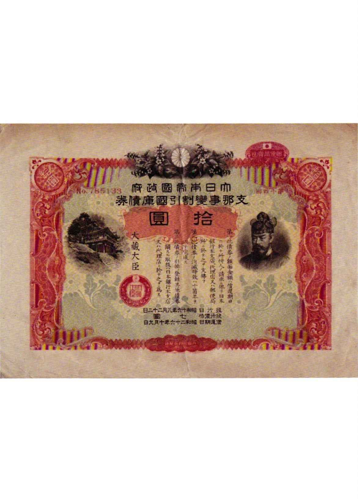
はじめに
五十年前、私は十三歳、中学一年生だった。敗戦の前後、理屈は何も分からなかったが、限られた範囲の世界を自分の目で見、自分の身体で感じ、そのようにして無意識に蓄積されたものの上に立ち、それ以後の五十年を生きてきた。
大震災、オウム、沖縄問題、フランス・中国による核実験---一九九五年に起こった出来事は、どれもこれも私を五十年前にタイムスリップさせてくれた。よくもこれだけ揃ったものだと驚くばかり。やはり戦後五十年の節目なのだと感慨を新たにした。
その中でも大震災には文字どおり足元をゆすぶられ、何よりも我が身の「平和」ボケ、「豊かさ」ボケについて思い知らされた（気がついてみれば、本当は平和でも豊かでもないのだ。だから「」である）。
書きたいことは山ほどあるが、何から始めたらよいのか。戸惑いは大きいが、ともかく書き出さなければ何ごとも始まらない。読まれる方々には煩わしいかもしれないが、地震の当日から約一カ月間の私の日記を拠り所として振り返ってみようと思う。ただしこれは地震直後にお見舞いをいただいた県外の人々へのお礼を兼ねたレポートであり、日記そのものではなく要約である。また括弧内、および◆印の個所は後日書き加えたものである。
私の家は神戸市東灘区の六甲山中海抜二百米にあり、災害激甚地域からは外れていた。屋根瓦は大きくずれ落ち、内壁・外壁ともに随所に亀裂を生じ、最終的には「半壊」の判定を受けたが、家族からは死者も負傷者も出ず、地震直後から自宅に住み続けることができている。私は今回の地震体験を私なりに語ることはできるが、それには以上のような、比較的幸運な一人の神戸市民としての限界がある。そのことを最初にお断りしておきたい。
昭和十八年九月十日午後五時三十七分、マグニチュード七・四の地震が鳥取を襲った。
その時、小学校五年生だった私は、神戸市灘区の自宅（当時）前の路上で遊んでいた。電線が一斉に大きく波打ち、防火用水槽（戦時中なのでそういうものがあった）の水面がシーソーのように水平のまま左右交互に揺れ、水がチャポンチャポンと水槽から溢れ出た。それは私にとって生まれて初めて強烈に記憶に残った地震体験であった。それ以来私は地震を感じると、反射的に屋外の電線が揺れているかどうかを確かめるようになった。
実は、私はこの時の思い出を一月十六日の夕食時、家族に話していたのだった。
先年来、北海道・東北地方に地震が頻発し、関東・東海地方にも近々大地震があるなどと取り沙汰されているが、まるで安全地帯のように考えられている近畿地方にも長らく地震はなく、起こっても何ら不思議ではないのだというようなことを、私達は話し合っていた。それは何かの予感があったからではなく、あくまで一般論として話題になったに過ぎず、ましてやその翌日、神戸を地震が襲うなどとは、夢にも考えていなかった。
激しい揺れに叩き起こされた。家ごと削岩機の上にのっているような、コンクリートミキサーの中にいるような感じだった。元来、地震には、家族がおかしがるほど奇声を発して敏感に反応してしまうのだが、今回は声も出ない。寝室には倒れてくるものもなかったのが幸せだった。
揺れが納まると同時に、隣室からしぼり出すような悲鳴が聞こえ、我にかえってそちらに走る。次女が転がり出てきて「おばあちゃんは大丈夫!? 」と叫ぶ。二人で階段をかけ降り、居間の定位置にある懐中電灯をつけ、母の寝室を照らす。母は窓側の折畳み椅子に座っていた。すぐそばに敷かれた布団の上には家具が倒れかかっている（後で聞くと、どうやって布団からぬけだしたか覚えていないという。母が家具の下敷になり、骨折でもしていたら、私達の第一日はその対応に追われて、大きく違ったものになっていただろう）。
居間と台所ではテレビや電子レンジが落ち、棚から吐き出されて壊れた食器類の破片が散乱して足の踏み場もない。応接間と書斎は扉が開かない。中の物が崩れて内側から扉を押えているらしい（この間妻は窓と扉をすべて開いて退避口を確保したという）。パジャマ姿のまま駐車場へ走り、カーラジオをつける。「震源地は淡路島。マグニチュードは七・二、震源の深さは二十キロ」とだけ伝えている。
妻と次女と三人で、ともかくも居間と台所に散乱した食器類の破片を片づける。近所の人が、水がまだ出ているうちに汲んでおくとよいと教えてくれる（後で思えば、昨夜の風呂の残り湯を一旦落として、汲み置きを作るべきだったが、部屋の片づけに気持が走って、そこまで思い及ばなかった。知らぬ間に水道は止まっていた。しかし、風呂の残り湯は三週間以上も水洗トイレの流し水に役立った）。トランジスターラジオの電池を入れ換え、情報を聞くが、雑音が多く聞き取りにくい。ただならぬ事態らしいことだけは分かる。
宝塚で所帯をもつ長女から電話。全員無事とのこと。姫路の長男が我が家へ電話をかけても通じないので心配していたと伝えてくれる。姫路へかけたが通じない（後刻留守番電話に消息を入れる）。西区のＨ君（学生）より電話。お互いに安否を確認し、「今日は休講やな」と言うと、「授業やなんて、そんなん！ 電車も止まってるし」と言う（彼の電話で山間部を走る神戸電鉄が止まっていることは知ったものの、阪神間全域に及ぶ幹線交通路寸断の情報を、この時点では私達はまだ知らなかった）。遠距離からの最初の電話は神奈川のＨさん（記録映像作家）から。こちらからはどこへもつながらない。
夜が明け、十時に近づいても、居間・台所は一向に片づかない。さすがに空腹を覚え、やっと出来た空間で、電気炊飯器に残っていたご飯でお握りを作り、ポットの中のぬるくなった湯でお茶を作って流しこむ。
やはり大学のことが気になり、車で山を下り、いつもの道を行くが、石塀が倒れていて引き返したり、通行止になっていたりで、どんどん南へ下ってしまう。一階がペシャンコになった家の二階から人が出て来るのを見て、それほどのことなのかと驚く。
とうとう国道二号線まで降りてしまう。東灘消防署脇の公衆電話に長蛇の列（公衆電話なら外部へつながるということを知ったのは大分後になってから）。全壊の木造家屋、途中階がペシャンコになった集合住宅などが沿線に並ぶ。全身がこわばり、引き返そうかと思うが、危険を冒してでも大学へ行こうと意地になる。道路のアスファルトには深い亀裂がはいったり、盛り上がったりしている。すべての交通信号機は消えているが、かなり複雑な交差点でも、事故やトラブルは皆無だった（ドライバー達は------私自身がそうであったように------極度の不安と興奮の中で、自らに冷静さと慎重さを強く要求し、運転に意識を集中させていたのだろう）。
大学の周辺は別天地のように平静。十時半というのに校舎の玄関はしまり、事務官は誰も来ていない。音楽棟へ走り、研究室と教室を巡回するが、意外に備品は倒れていない。これは授業どころではないのだと初めて悟り、帰宅する。
午後三時過ぎに電気が来た。テレビはヴィデオの回路で鮮明にうつる。三宮の見慣れた景色の凄まじい変化、長田方面の火事、東灘区深江の横倒しになった阪神高速道路、ズタズタになった新幹線、それらを見て、初めて阪神間・淡路が中心的な被災地と知る（情報をキャッチする点では、県外の人々よりかなり遅れていたことになる）。
電気が来ていることが、こんなにありがたいこととは思わなかった。電気炊飯器でご飯を炊き、電気すき鍋でカップラーメンを作り、夕食を攝る。水節約のため食器は洗わず、食後ただちに使い捨て布できれいに拭きとる（この段階ではポットの水は既になくなり、屋根上のソーラー貯水槽に汲み上げられて残っていたものを使った）。
苦労して扉を明けた書斎は中二階の物まで落ちてきてダンボール箱の山。ＬＰプレイヤーが床に落ち、ピアノは一旦宙に踊ったらしく、車止めは完全に外れていた（後に聞いたところでは、全壊した私の同僚宅ではグランドピアノの脚が折れた。地震の時にはピアノの下に避難すれば安全だと信じていたのに）。手がつけられないので片づけを諦め、専らテレビを見る。「兵庫県南部地震」と命名された由。兵庫・長田・須磨の火災は、地中の水道管が破壊されたため消火できず、どんどん広がる。それを現地とヘリコプターからと両方の映像でモンタージュして見せる。自然鎮火を待つより方法がない様子。これは五十年前の空襲と同じではないか。
雲仙普賢岳噴火の時も奥尻島地震・津浪の時も、他人事とは思えず息をつめて見ていたものの、やはり安全地帯で見物していた。今回は渦中の地域という違いはあるものの、安全地帯でのテレビ見物であることに基本的には何も変わらない。だんだんやましい気持になってくる。でも、見続けていないと不安なのだ。隣の部屋で寝ている八十六歳の母を気遣いながら、居間の電気堀ごたつに妻と次女と三人足をいれ、着れるだけのものを着てテレビを見続ける（石油ストーブはとても灯ける気持にならなかった）。
余震が続く。山中のせいか、ドーン、ザアーッという無気味な音響を伴って頻繁に揺れる。人の気配の全くないところで、いきなり背中をドーンと叩かれたのに似て、いずれも唐突に揺れる。足元の床が突然沈むような恐怖を感じて、反射的に床を支えてしまう（いずれも直下型地震の特徴である）。一瞬一瞬が緊張の連続となり、生理的には眠くても寝させてくれない。精神的にかなりこたえる。十八日午前四時過ぎ、余震が減り、食卓の下にもぐってうたた寝する。いびきをかいていた由。
◆同じ東灘区でも、激震地では電気もつかず、人々は暗闇の中で寒さと不安に震えていた。ふと山を見ると一斉に煌々と電気がともっており、それはあまりにも平和に映り、その不公平さがとても恨めしかったと言う。山腹に住む私達は私達で平和だったわけではなく、電気とテレビをつけていないと不安でたまらなかったのだが。
朝食はパンとハムと紅茶。パンとハムは紙を敷いた皿に置く（洗う水を節約するため）。
我が家は海抜二百米近い六甲山中にあるため、食後次女とともに山道を一キロほど歩いて五助ダム下の涌き水を汲みに行く。随所に巨岩が落下して道をふさいでいる。「今ここで地震が来たらどうなるやろ」というと、「私も今そのことを考えていた」と娘が言った。汲みに来ている人は少ない。「大腸菌陽性」の立て札が立っているが、こだわっていられない。
テレビによれば、兵庫・長田・須磨の火災は自然鎮火した由。
昼は十六日につくったぜんざいを電気すき鍋であたため、トースターで焼いた餅を入れて食べる。
午後、大学の学部臨時運営会議に出かける。やはり交通信号機は消えたまま。事務長は昨夜泊まった由。名谷から車で送ってきた子息は渋滞のため八時間かかって帰宅された由（通常なら四十分）。学部長は加古川から、Ｄ評議員は垂水から、それぞれ車で来るとのことだが、渋滞でとても無理だろうということで、Ｍ評議員の司会で会議を始める。正式メムバー十三名のところ、出席者は四人（近くに住む三人と北区在住一人）。交通機関が寸断されて来られないのだ。緊急課題として修士論文・卒業論文の提出期限延長と、可能な限り教官と院生・学生の安否を掌握の上、二十三日に再度学部運営会議を開いて、授業再開の時期を決めることなど話し合って終わる。事務官も五、六人しか来ていないが、訪れる学生から安否消息の聞き取りに専念している。今日、阪急電車の西宮北口〜梅田間が開通したので、寮の学生たちは西宮北口まで歩き、それぞれに帰郷した由。
帰路、再開した鶴甲の生協へ寄るが、時遅く、めぼしいものは何もない。緊急に必要なものは見事に買い尽くされている。スーパーに買い物に行くたびに、量・質・種類ともに溢れんばかりの陳列棚を見て、こんなに恵まれていていいのだろうかと、いつも敗戦前後のことを思い浮かべて複雑な思いをしていただけに、カランとした陳列棚は妙に懐かしく、買いそびれたことも忘れて、不思議と爽やかな気分になった（ビールなど酒類が残っていたのが印象的だった）。
次女は単車で食糧確保に出かけ、阪急西宮北口から大阪へ行くつもりだったが、夙川あたりのスーパーで目的を達することができ、途中行列して救援物資も貰ってきたと言う。おやつは救援物資の苺・カステラと紅茶。
留守中に方々からお見舞い電話をいただいていた。皆さん一様に、「ワァーッ、やっとかかった」と歓声をあげていられた由。
こちらも諦めないで電話をかけてみる気になり、高知の父方の従兄妹など二か所にかけると、一発で通じた。「今夜から安心して寝られる。他の従兄妹たちにも連絡しておく」と言ってくれた。遠くへは通じるが、近畿一円はまだだめ。
舞踊学のＳさんが内地研修先の神奈川から電話で、芦屋の猪木聡子さん（大学院ＯＧ）の死亡を伝えてくれる。こちらは自分が無事なら他人も無事という感覚でいたが、県外では安否を気遣う人々が、テレビの死亡者告知を息を飲んで見守っていることを知る。
今夜は余震もピタリと止んで、昨夜の緊張は全くない。家族は早々に寝る。
今回の地震は意表をつかれた都市直下型地震で、震源も浅く予知しにくかったという。しかし、事後の行政の対応の遅れはひどく、兵庫県・神戸市ともに地震を想定した物資の備蓄は全くなかったとは......。企業の儲かる開発を優先し、災害対策を完全に怠った行政の責任は大きい。
余震も減り、昨夜は比較的よく寝られた。自衛隊による給水ありとのアナウンスに次女と出かけるが、二百米近い行列で、すぐになくなる。二キロ弱離れた本山園（障害者授産施設）脇の広場に常設的な給水場ができたと聞いて、次女が早速単車で汲みに行く（こういうことはこの段階ではすべて口コミ。行政の広報はまだ一切機能せず）。
国道二号線より南に被害が多い様子なので、Ｔさん（同僚）の家のことが心配になり、妻も神戸友の会々員の安否が気がかりなので、午後からはお握りをたくさん作って、次女に留守番を頼み、車で出かける。
本山園脇の給水場には全国各地の水道局の給水車が待機し、並列に配置された蛇口から、各自自由に水が汲める。持っていったペットボトル数本に水をつめ、これもお見舞い品。以下お見舞い先は省略するが、被害の著しい地域では建築後三十年以上の木造建築は例外なしに全・半壊。
東灘区の魚崎地区は昭和初頭、車社会が到来する遥か以前に電鉄会社が開発した住宅地で、東西南北に細かく走る道は、車一台やっと通れる広さである。そこへ両側から家屋が倒れこみ、単車・自転車すらはいりこめない状態だった。五十年前、空襲の被害を免れた、戦前からの木造住宅がほとんどで、いずれも全壊していた。しかし、その中に最近建てられた妻の友人の家が無事に建っており、近所の人達の避難所に開放されていた。
やっとＴさん宅に着く。予想通り全壊。門に記された近くの避難先も留守。最寄の避難場所である魚崎小学校もくまなく探すが見つからない。
ここで救援物資を貰う行列の中に、地震後火災で全焼した神戸友の会々員Ｋさんを見つけ、お見舞い品を渡す（中身の水よりもペットボトルについて、後々まで大変感謝された。彼女の家は全焼し、給水の情報を得ても、水を容れる器がなかったのである。家が無事だった人達からも、ポリタンクを常備していなかったため、地震直後はペットボトルや薬罐一つを下げ、水を求めてウロウロした話を多く聞いた）。
弟のマンションに寄る。近くにひとり住む義母は家が半壊し、タンスの下敷になっていたのを隣の息子さんに救出され、弟宅に避難していた。国道二号線に出る道には電柱が倒れこみ、ジャングルの蔦のように電線が垂れ下がり通れず、迂回する。
芦屋の猪木さん宅まで行くつもりだったが、既に五時過ぎであたりは暗く、信号機なしのまま渋滞する道路事情、我が家に母と次女を残していることなど考えて引き返す。東西道路の渋滞ひどく、南北道路を主にして東西道路と阿弥陀くじ式に組み合わせ、やっと帰宅。県外からのお見舞い電話の対応に追われた次女は、とにかく無事は伝えたものの、私達と相手の関係がのみこめず、悲鳴をあげていた。
◆最近建てられた家屋でも、民間業者の手になる建売分譲住宅は、コストを抑えるために工事の手抜きによって、激震地では全壊または半壊の家屋が多く、長期のローンを残したまま途方に暮れている人達は、気の毒で慰めようもなかった。崩壊したり傾いたりしたビルやマンションを見慣れてくると、素人目にも手抜き工事ではないかと思われるものが結構多い。高度成長期に施主が建築を急がせたり、買い手の懐具合を考えて、コストダウンのため安全性を犠牲にしたものが多いようだ。
朝食後、各学年の責任者に連絡をとる（被災地外だと比較的つながりやすい）。学生相互の情報はよく把握されており、家屋の状況を除いてほぼ全員命には別条ないという感触を得る。ただし下宿生は例外なく、阪急西宮経由で大阪から郷里に帰っている様子。
午前十時過ぎ、車で芦屋へ向かう。できるだけ東西道路を避け南北道路を通って猪木聡子さん宅に着く。新築間もない立派な邸宅。呼ぶが人の気配なし。どうしてここで彼女が亡くなったのか、狐につままれた心地。
すぐ北の芦屋市役所へ走る。避難民がカウンターの中まで毛布を敷いて休んでおり、誰が市の職員か避難民か分からない。避難民は皆土色の顔をして虚脱した表情。やっと案内所を見つけて、猪木さんの遺体が警察署に安置されていることを知る。霊安室内には線香の匂いが充満している。遺体は見つからない。詰所へ行くと昨日お母さんが引き取られた由。詰所の話では、家が倒壊していなくても落下物により死亡した人は多いと言う。再び猪木邸に引き返し、不在を確かめ、伝言をポストに入れて帰る。両親の郷里が岡山と聞いていたので、そちらで葬儀をされたのではないかと想像する（後刻その通りであったこと、聡子さんは元の住居にレッスン場を置いて生活しており、そこで亡くなった由知る）。
帰路は勝手知ったる地元と、とにかく北上し、阪急北側の西行き一方通行に出るが、驚いたことに、その道を東方向へ進む車が後を立たない。まったくの無秩序。しかし西行きの車の列は辛抱強く待っている。やがて、通れるようになり、後はスムーズに行く。一番北の東西道路山手幹線以北は信号機もつき、秩序は回復。
昨日と今日車で被災地を走り、いかに四輪車が不便で、いかに単車・自転車が機動性を発揮するかを思い知らされる。
高校同級のＯ君より、再開された神戸新聞の社説で三木康弘君（高校同級、同新聞論説委員長）が、お父さんを生き埋めで亡くした経過を書いていると知らせてくれる。京都新聞との災害時連携で発行を再開した神戸新聞は、敗戦前後の新聞を思い出させる薄さだが、それだけに生々しい迫力に満ちている。
築紫哲也の「ニュース23 」で小田実さんが「土建屋政治」と笹山神戸市長・貝原兵庫県知事を名指しで非難し、怒りまくっている。まったく同感。この緊急事態から徐々になしくずしに「正常化」され、問題点を隠蔽されてはたまらない。
昨日今日、車で移動中に聞いたラジオ関西の西条遊児・笑児兄弟の番組は、本当に被災者向けの情報（どこそこで味噌汁五百人分炊き出ししているとか）をきめ細かく流していて心が休まる。それに対してテレビは概ね被災地外の人達向けのマクロ情報という印象。それはそれでよいが、ワイドショーなどでゲストもホストも同情顔でワイワイガヤガヤ話の種にされるのはやり切れない。ＮＨＫのニュースのように感情を移入せず、淡々と原稿を読んでくれるのが、被災地に住む者には一番ありがたい。
私達の住む尾根から住吉川を隔てた東側にあるヘルマンハイツ（西岡本六丁目）に崖崩れの危険があり、昨日避難勧告が出た。今朝は早くからテレビのヘリコプターが超低空で飛び回り、その振動が家屋に伝わり、地震と極めて紛らわしく、神経を逆撫でする。
我が家の北方、山のすぐ際に住むＭさん宅あたりは崖崩れ・落石を市の職員が見に来て、避難勧告が出るのも時間の問題と言う。我が家の一軒おいて西隣のＨさんのご主人が、我々の家は崖っぷちだが雨に対して大丈夫だろうかと相談に来られる。向いのＫさんＴさん宅も雨戸を閉めて避難済。その隣のＭさんも明日は大阪へ脱出するとのこと。大雨が近づいているとか。やはり二次災害について考えなければならない段階か。
弟から義母を東京へ避難させたいが、阪急西宮まで車で送ってもらえないかと電話。こちらは現在避難勧告を考慮にいれて行動しなければならない状態であること、車のガソリンも残り少なく補給のめども立たないことなど説明し、申し訳ないが断る（この段階では被災地のガソリンスタンドはまだ営業していなかった）。
二次災害に備えて、最近のオペラ作品の楽譜や家族の写真を急遽大学の研究室に運ぶ。
妻の知人Ｎさんからの電話で、阪急御影近くのマンションを避難所にとのお申し出をいただく。建設会社勤務のご主人が東灘区深江の阪神高速道路倒壊現場の復旧作業に出たまま帰宅されず、子供三人抱えて不安なので、明日泉大津の実家に避難するとのこと。いざという時に八十六歳の母が迅速に行動できないので、母だけ一足先に避難させてもらう。
午後十時に移動。このマンションは周囲ともどもまったく無傷で、電気・水道も来ている。暖房がなくても十分暖かい。母は心身ともに安心した様子。我が家に戻り午後十一時過ぎに寝る。母を預かってもらい、ホッとするとともに、妻はＮさんに無理なお願いをしてしまい、これでよかったのかと悩む。
早朝Ｎさんより電話。西区の親戚が迎えに来次第出発するので、申し訳無いが母を置いてゆく、鍵は母に渡しておくとのこと。母を不安にさせないため、早々に朝食を済ませ、Ｎさん宅へ移動。母は昨夜は暖かく、安心してよく寝られたと言う。マンション内のＮさんの友人が避難するので、冷蔵庫の中のものを食べてくれと持って来られる。牛肉などもあり、今夜のおかずは焼肉と決める。Ｎさんの冷蔵庫にも早めに食べてあげた方がよさそうなものがいっぱいあり、当分は買い出しも救援物資も必要ない雰囲気。
大雨洪水警報が出たので、次女を母のそばに残し、妻と二人我が家へ戻る。地震でずれた屋根瓦にはビニールシートもかけられないままの状態なので、かなり緊張するが、雨は警報が出た割りには少なくホッとする。雨漏りもない様子。西日がさしてきたので危機は去ったと判断、午後五時Ｎさん宅へ移動。夕食後午後八時全員ぐったりして、早々に寝る。
◆私達神戸市民は昭和十三年（一九三八年）と四十二年に大水害を経験している。六甲山系の花崗岩は地表にさらされると風化して脆くなり、それが豪雨に流されて大水害になると言われている。その周期約三十年ということでみてゆくと、危険な年まわりということになる。私達がことのほか山津浪・地滑り・崖崩れを恐れたのはそのためである。
月曜日。次女は神戸の店が営業不可能になり、大阪本社の一室を借りて営業再開したということで、今日から単車で阪急西宮まで出て大阪へ出勤することになった。
この一週間暖房も十分なく、普段やらない力仕事、睡眠不足などで、全身特に腰が痛く、寝起きがヨッコラショという状態なので、定期的に通っているＹクリニックに電話すると、無事とのこと・今日が予約日なので歩いて出かける。途中卒業生二人（いずれも主婦）に会い無事を喜びあう。道行く人々は被災者か見舞い客かは分からないが、ジャンパーかレインコートを着、リュックサックを背負い、ズックをはいて黙々と歩いている。その姿に五十年前の戦争末期を思い出して、不覚にも涙が出る。
Ｙクリニックは昨日営業再開したが、この地震でキャンセルも増えたとのこと。
昼食後大学へ。午後一時より学部運営会議。学部長以下十一名出席（欠席は二名）、いずれもリュックを背負いズックを履いて電車不通期間は歩いて来た様子。Ｎ学生委員長は登校途中の店頭で購入した自転車に乗って来た由。
最大の議題は授業再開と期末試験。断水状態の上、給水塔が破壊され、通水してもトイレが使えない。学生の多くは帰郷している。長時間議論の末、三十日授業再開宣言と同時に休講とし、期末試験はレポートに切り替えるという原案で教授会に臨むことを決定。
入試会場は大阪大、岡山大、神戸大の三大学とし、受験生に選択させるが、人間行動・表現学科（音楽・美術・体育）の実技は翌日神戸大学一個所で行い、最寄駅から専用バスをチャーターして受験生を運ぶことになる。この結論に到るまで、副学長と学科長の私、さらに文部省と学長との間に電話のキャッチボール。記者発表の時間が迫っているので何とか了承してほしいと学長に言われるが、こちらの希望条件をほぼ満たしているので、学科長としての判断で快く了承。学長・副学長のご努力に感謝する。
二十日午後二時よりグラウンドに自衛隊五百名が駐屯。仮設トイレが設置されているが、それでも足らず、隊員は使用後プールの水を汲んできて流すという条件で体育館のトイレも使っている由。校舎内のトイレの前にもバケツの水（プールの水）がズラリと並んでおり、使用後はそれで流すことになっている。
夕食時、Ｎさんのマンションの隣接区域に地滑り・崖崩れのおそれありとして避難勧告が出る。こういうことがあるのでテレビは消せない。
朝食後、住吉台の我が家へ戻り、母の薬をすぐ近くの診療所に貰いに行く。開業していられたのでホッとする。被災地の医療が問題になっている折なので恵まれていると感謝。
書斎をともかく片づけてスペースを作り、中断しているオペラの作曲を再開するが、お見舞い電話の応対に追われる。向こうは初めて電話が通じて、感動しながら、親身になって心配して下さっているのに、こちらの応対は同じ返事の繰り返しで、だんだんパターン化してくるように感じられ、相手に対して申し訳ない。
三度の食事ごとにＮさん宅へ降りるのも、時間が細切れになり落ち着かない。
テレビの国会中継は、民主的手続きとは言いながら、原稿を読み流しの質疑応答はセレモニーの極。被災地の感覚とはあまりにもずれていていらだたしい。
◆兵庫県尼崎市は市内にある近松門左衛門の墓にちなんで、一九九六年に「ちかまつ世界演劇祭」を企画し、そのプレイヴェントとして一九九四年秋、彼の世話物の代表作『曾根崎心中』をオペラ化し初演した。その作曲を委嘱された私は、引き続き一九九五年暮に初演される今ひとつの時代物代表作『国性爺合戦』のオペラ化も任されて、その前年暮から作曲に着手した。一月十六日の夜、冒頭の和藤内と小睦の「貝づくしの二重唱」が完成し、ホッとしていた矢先、地震に襲われた。緊急事態の処理に追われて、作曲はこれ以後約一か月中断することになる。
午後教授会。皆リュックサックに登山姿、単車や自転車でやってくる。案の定一斉レポート提出の件で議論百出。しかしこの時期、期末試験・卒業試験をかかえて通常でも大変な教務掛が、今回の地震で事態が急変、既にパンク状態であることを説明し、説得する。
若い同僚のＳさんＢさんからお見舞いの品いただく。ウェットティッシュ、好物のいかり豆、お寿司、ホカロン、ＬＰガス、即席うどんなど、それぞれにその人なりの工夫が暖かく身にしみる（後刻ＬＰガスコンロを入手。こんな便利なものがあることを初めて知った）。終了後東へ帰る同僚を車で送るが、山手幹線の渋滞激しく、ＪＲ芦屋の手前徒歩三十分の地点で降ろし、駅までは歩いてもらう（結局その方が早いと判断したため）。
警視庁のトラックの列に出会う。普段の神戸では見ることのできない風景。今神戸では全国各地の県警・府警のパトカー、津々浦々の名も知らない市町村の水道局の給水車などに出会うことができる。
テレビで被災地に物取り・放火の恐れありと報じているので、今夜から私ひとり住吉台に泊まることにする。
姫路で高校教師をしている長男が、試験期間にはいり、クラブ活動も休みになり、やっと時間が出来、明日帰神するについて、もって行くものを問うてくる。屋根瓦の崩れた個所に被せるビニールシートを頼む。電話の最中に激しい余震（神戸・西宮震度四）。やや遅れて電話の向こうで長男が「あっ揺れてきた、これは大きい」と叫んでいる。こちらで納まった頃、向こうでは「まだ揺れている」と言っている。
テレビでは諸外国から地震直後に協力を申し出ているのに、四、五日経ってから「必要としない」旨外務省が返答している点が問題となっている。行政への不信が一層強まる。
Ｎさんのマンションも通水と断水をくり返す。通水はあくまでも試験通水であり、水漏れ個所が発見されると直ちに給水停止になる由。そうなると食事の際、汁物を除くすべての食器には、洗う手間を少しでも省くためラップを敷く。朝の洗顔も含めて廃水はバケツにとって置き、大便のあとトイレの流し水に使う。小便の場合はそのままにしておく。普段から小便の都度、こんなに多量の水を流していいものだろうかとこだわっていた昭和ヒトケタには、この処置はかえって気持よく受け入れられる。住吉台に私ひとりでいる時は、庭に穴を掘って用を足す。今日その最中に大きな余震が二度あり、あわてて家に駆け込む。
午後六時過ぎ、長男が姫路から単車で三時間強かかって帰神。無事とは聞いていたが、この目で確かめるまでは心配だったと言う。Ｎさん宅で夕食の後、二人は住吉台に戻る。余震あり。姫路では余震の予兆があるが、こちらはいきなり揺れると、長男は話す。
長男は期末試験のため、早朝姫路へ帰る。姫路には平常通りの生活があるのだ。
母の眼の薬（緑内障）が切れそうなので、午前九時、六甲病院に取りに行く。事務の人達も着ているもの、赤い眼から判断して連日泊まり込みではないかと想像する。しかし優しい応対にほっとする。眼科のＴ先生からもお見舞いの言葉をいただき、非常事態なので、その場で処方を書いて下さる。
その足で大学へ行き、学部長・評議員と手分けして教官への電話連絡を分担する。事務官達は国立大学・高専からの救援物資で昼食をまかなっており、それを分けてもらう。
岡山のＴさん（大学院ＯＧ）より二十二日発の小包届く。お礼の電話する。いつ着くか分からないが、それでよければということで受け付けてもらった由。
テレビが阪急三宮ビルの解体作業を映す。昭和十一年の建築。この建物には小学生時代から映画館として親しんだ阪急会館など、数々の思い出があり、感慨無量。
テレビのＣＭが復活するが、震災を経験した者の眼には、立派な高層ビルも途中階陥没、マイホームも全壊・半壊の姿とダブり、何とも虚しい。相も変わらずポケッとした若い女の子の笑顔など、被災地では若い人達もオッサンもシラけるだろう。「明日は我が身」という感覚の完全な欠落。「震災後」の新しい時間を生きている者には大変奇異に映る。
生ゴミをステーションに出してもよいと連絡が回ってくる（粗ゴミはまだ）。
今日は土曜日。午前十時、住吉台東公園に自治会員集合。自治会の北側崖上の二住宅が半壊状態で、余震または雨で崩れてくると、我々が二次災害に巻き込まれる。行政にかけあっても手が回らず埓があかないので、自衛のため、崖上の道路・側溝の亀裂にセメントを詰めて水漏れ防止の補修。午後からは自治会内の亀裂個所へのセメント詰め。「こんなん気休めやけどなあ」と言いながらも、このあたりは山腹の盛り土地帯なので、雨によって地盤が緩み、土砂崩れになるのが何より怖い。土木の専門家、「仕切りたがり」のオッサン、実に手際よくリーダーシップを取ってくれて頼もしい。同じ自治会にいても、一辻違えばどんな人が住んでいるか知らなかったが、いろんな顔や名前を覚える。
妻は二十一日から、神戸友の会の最寄りの会員宅へ、全国の友の会からの救援物資を配達する仕事をしているが、その一人Ｈさんから自治会の人達が共同で風呂をわかしているからはいりにいらっしゃいと言われ、夕方車で行ってみる。崩壊した「世界長」酒造の庭で、これも被災した住吉東町自治会の十四所帯が、倒壊した自分達の家屋の木材を集めて湯をわかし、共同炊事し、風呂をたてている。予約制だが、運よく夕食時の三十分間空いているからといれてもらった。これも倒壊家屋から出してきた浴槽三つを一つは入浴用、一つはあがり湯、一つは補給用の熱い湯と並べてビニールで囲ってある。行き届いた工夫に感心する。妻と二人でそそくさと十二日ぶりの入浴。足元が暗く危なくて、とても母は連れて来てやれない。自治会の人達は暖かく迎えてくれ、いつでもいらっしゃいと言ってくれるが、夜は避難所の学校で寝泊りしている人達の世話になるのは、何とも複雑な気持。
次女は住吉台へ戻りたがる。慣れない他人の空間での生活、大阪の仮事務所への出勤、何もかもが中途半端でストレスがたまっているのはよく理解できる。このマンションは母のためには安全だが、近々学校が再開されればＮさん一家も戻ってくるだろうし、二重生活もこのあたりが限界か。午後十時、長男再度帰神。この機会に住吉台へ戻る決心をする。
Ｎさんのマンション界隈の坂道には、側溝を六甲山のきれいな水が流れており、人々はこの水で洗濯をしている。近くの信愛学園（孤児収容施設）では、玄関先に電気洗濯機二台を「自由にお使い下さい」と出してくれている。Ｎさん宅も断水が続いているので、次女がたまった汚れものをかかえて洗濯に出かける。
長男と私は住吉台へ戻り、屋根にビニールシートをかぶせる作業。長男は屋根に登って壊れた瓦と土の整理、私は下でそれを受け取り、庭へ出したり、ビニールシートその他を屋根へ送るだけだが、この間に強い余震でもあったらと、屋根の上の長男を思いやって気が気ではない。
次女が洗濯物を干しに上がってくる。午後三時過ぎに作業完了。二人で昼食。母を迎えに降り、積めるだけの荷物を積んで戻る。雪がチラチラと降り、住吉台は大変寒い。夕食にはお歳暮にＹさん（卒業生）から貰ったまま置いてあったカリフォルニア肉で盛大に焼肉パーティー。長男は疲れたので今夜はここに泊まる。
午前十一時半より学部運営会議。
午後一時半。院生・教育学部学生・発達科学部学生それぞれに部屋を分けて説明会（説明内容がそれぞれに違うため）。冒頭、亡くなった三人の学生の冥福を祈って黙祷（教官・事務官に死者はなかった）。地震発生以来学部のとった措置の経過を説明、本日より授業再開と同時に休講、期末試験の代わりに全教科レポート提出に切り替えたため、その提出要領などを説明、被災状況調査表その他の書類を配布、本日欠席している者にも可能な限り手渡しを依頼する。久々に再開を喜び合う学生達。さしたる混乱もなし。
帰宅。岐阜のＫさん（卒業生）より小包届く。お礼の電話。親戚・知人に被災者が多いので、その人達に必要なものを聞いて送ったとのこと。クッション代わりにのし餅が使ってあり、それは今回のためにわざわざ搗いた由。
帰郷などで昨日の説明会に欠席した学生に書類を発送するについての宛名書き・袋詰めは教務委員会・教務掛の手に余るため、各講座一名の応援動員がかかる。交通機関がまだ十分復旧していないが、若い同僚達に頼めば苦労してやって来るのが分かるだけに、ここは一番近くに住む私が引き受ける。作業は能率よく進み二時間で終わる。
Ｆさん（かつての教え子）がご両親と京都から見舞いに来ると言っていたので、急いで帰宅。二児の母であるＦさんは主人に子供を預け、ご両親と阪神青木駅から歩いて来てくれた。予め欲しいものを聞いてくれたので、ジーパン、京菓子（これは母の友人達に配るために妻が頼んでおいた）、すぐに食べられるお惣菜など、リュックと手引車で運んでくれたお見舞いを受け取る。しばらく歓談。被災地をしっかり見ておきたいとのことなので、それは大事なことと思い、しかるべくガイダンスし、渋滞の激しくならないうち、午後四時過ぎ車で山の下まで送る。
今日は疲れて何をする気もせず、夜はテレビを見て過ごす。被災者には住宅・仕事、その他いろんな問題があとからあとから出てくる様子。無事でよかったとつくづく感謝する反面、死者・被災者に申し訳なく、ますます気が滅入って作曲どころではない心境になる。
◆事態が鎮静化に向かうに従って、次第にはっきりと見えてくる震災の態様が、かえって肉体的・精神的疲労を倍加させた。
一応無事であった我が家もまったく無傷であったわけではなく、不安材料は多々あるが、テレビで注目を浴びている建築判定士も激震地で手いっぱいのため、現段階ではこの地域まで手が回らない。弟が勤め先のＴハウジングの部下Ｆさんをよこしてくれる。
午後二時過ぎ、Ｆさん自転車で来訪。長男が撮影した屋根の写真を見せ、Ｆさん自身も我が家の亀裂個所を撮影、一級建築士がさらに詳しく調べてから作業にかかるが、住むには別条なく、補修も最低限の処置で事足りるとのこと。
Ｆさんが帰った後、妻とＪＲ六甲道北側へ走る。昨日妻が友の会の救援活動で、震災後初めてこのあたりを通り、一面の焼け野原を見て、劇団道化座のことが気になったため。
車を降りて焼け跡の瓦礫を踏みわけて歩く（この感触は五十年前の空襲の焼け跡へタイムスリップした思い）。劇団のスタジオを支える鉄骨が揃ってグニャリと飴のように曲がり、倒壊かつ全焼。近くの人が市場の消防団が消息を把握しているかもしれないと教えてくれたので、道路に机を置いただけの消防団詰所へ走り、カレンダーの裏を利用した避難先控えに、マジックでなぐり書きした大阪への避難先を発見し、ほっとする。足を延ばして貞松・浜田バレエ団のスタジオへ。ここは無事。貞松夫妻はタクシーで阪神青木まで出て、大阪で入浴しようと出かけるところだった。
帰宅すると道化座代表の須永さんから避難先の連絡があった由（以心伝心）。早速電話。地震直後、スタジオは無事建っていたが、すぐに火の手が回ってきて、何も取り出せずに延焼したという。グニャリと曲がった鉄骨は火事の熱によるものと知る。「ほんまに〝エグゾチスト〟の世界でっせ」と須永ちゃん言う。学校移動公演の予約もあり、被災したからといってキャンセルもできず、早速連携劇団である大阪五期会のスタジオを借りて練習を再開、公演を終了、目下次の公演の準備中とのこと。今少しでも暇ができて、考えごとをすると急速に落ち込むような気がして怖い。こうやって追い詰められて動いていることで、何とか生きていると語る。大阪だと物は自由に買えるだろうが、当座の金に不自由しているだろうからと、彼の銀行口座にお見舞い金を振り込むことにする。
二、三日前からお見舞い状が届きはじめている。地震当日の十七日の日付のものもあり、いずれも十日から二週間かかっている。早速礼状を書き、電話をする。
弟は義母をやっと東京へ送り出した由。
夜久しぶりに地震関係ニュース以外のテレビ番組を見る。衛星放送で『Tomorrow-明日』（黒木和雄監督）。長崎の原爆投下前二十四時間の無名の市民達の生活を淡々と描いた映画。翌日原爆が落とされることなど、誰ひとりとして知らない。そんな市民の平和な生活が映画のラストシーンのキノコ雲で一瞬にして消えてしまう。今回の地震と完全にダブる。
娯楽番組も徐々に復活するが、まったく「地震前」の感覚なので、娯楽にもならない。
昨日はまったく水を汲みにゆく時間がなかったので、朝食後ただちに水汲みに出る。いずこも長い行列。白鶴美術館前の給水所が空いていたので、そこで給水を受ける。長男が姫路で買ってきてくれたポリタンクは登山用のもので、普段はペシャンコだが、水がはいると膨らんでくるもの。世話をしている自衛隊員が「ほう、こりゃあすぐれ物ですね」と感心する。「すぐれ物」とはいい言葉だ。どこの方言か聞いておけばよかった。
午後三時過ぎ、Ｔ夫妻（いずれも卒業生）が堺からリュックを背負って見舞いに来てくれる。ミニトマト・きゅうりなどを入れたポリ袋には、「洗ってあります」と書いてある。こういう配慮は今後救援の立場にまわった時のために、しっかりと覚えておきたい。
夕食の時、母が診療所の薬が少なくなったので貰ってきて欲しいと言う。前回はＮさん宅へ避難していたから仕方がないが、本来は診察を受けないと薬は貰えないのだと説明するが、今までは運動を兼ねて歩いて通っていた診療所へ歩いて行く自信がないと言う。地震までは部屋の掃除、身の回りの洗濯は自分でやっていたが、ガスストーブがつかず、この寒さでは寝ているか、こたつにはいるかしか仕方がないので、足も弱ってきているらしい。これはやはり危険な兆候だ。明日はとにかく何としても診療所へ連れて行こうと思う。
妻が母を目と鼻の先の診療所へ車で連れて行く。
午前十一時、県営住宅前で「さぬきうどん」のふるまいがあり、お盆をもって貰いに行く。昨年水不足の時に救援に来てもらったお礼ということで香川県から来られた由。
午後四時、Ｔハウジングの紹介でＧホームのＩさんが家屋の点検に、大阪から単車で来訪。長男が張ってくれた屋根のビニールシートを若干手直ししてくれる。棟瓦が崩れているだけで、瓦はそれほど痛んでないから、若干瓦を足せば復旧できる、ただ、生産地の淡路が被災しているし、職人さんがひっぱりだこなので、大分遅れるとのこと。外壁・内壁の亀裂も樹脂の注入で済む由。この間のＦさんとともに専門家の診断なので、大変心強い。
昨日から西隣と向かいまで通水しているが、我が家から東はまだ。水道局の人をつかまえて聞いてみると、東に伸びる道路が崖に面した盛り土上にあり、水漏れで陥没する虞れがあるため慎重を期しているとの説明。がっくりくるが、隣りまで水が来ているのは心強い。
西脇地区の農家の友の会々員が、とれたての野菜を三木まで運び、三木地区の会員が車で御影地区まで届けてくれた。早速妻はそれを地区の会員に配りに出かける。
朝食後、向かいのＫさん宅から散水用の長いホースを我が家の浴槽までつないでもらって水を張り、そこから洗濯機に水を汲み入れ、震災後二度目の洗濯をする。Ｋさんに感謝。
Ｎさん（卒業生）よりお見舞いの便り。お義母さんが病院で亡くなった由。お悔やみの電話する。お義母さんは暮れからＨ病院に入院していたが、付けていた生命維持装置が地震後十五分間の停電で作用しなくなったため死亡、病院から斎場へ直行した由。Ｎさん興奮して一方的に話す。定年後牧師志望でＤ大学神学部の大学院に通っているＫさんにお見舞いの電話をかけた時、大きな被害を受けた人は、ただただ自分の体験を一方的にしゃべるので、「牧師の仕事はただ黙って人の話を聞くことだと悟った」と言うが、そのＫさんもまた一方的にしゃべりまくっていたのを思い出す。たしかにこういう電話が増え、被害の少なかった私は、語るべきものもなく、ただただ聞く。
大阪にピアノ・オーディオ付きの空きマンションがあり、全壊した同僚のＴさんにどうかという電話があり、被災した自宅の後片付けに連日出ている彼女を現地に訪ねる。西宮にマンションを確保、姉さん一家と住むことにしたし、当分ピアノを弾く気にもならないと言う。焼けなかったので、大事なものはほとんど取り出せたものの、置いておくべきものと捨てるべきものの判断に迷うと言う。掘り出した夥しいＬＰ・楽譜類を大学に運ぶべく車に積む。
Ｋ書店社長のＳ君が、朝日新聞の夕刊を見たかと電話をかけてくる。「六甲山シンフォニーホール構想を修正し、市街地が被災した際には災害対策本部や避難所に使えるものにする」という記事が第一面に載っている由、カンカンに怒っている。我が家は神戸新聞だけなので、早速朝日の記事の部分をＦＡＸで送ってもらう。
それによれば「市政アンケートなどでも建設を望む声が出ていた」とあるが、私達音楽関係者はかねてから、このようなホールの建設にはハード・ソフト両面から強い反対の意向を示してきた。今度の大地震で、当然見直しを迫られ、中止または延期されるだろうとホッとしていた矢先のことだけに、笹山市政の無神経ぶりには開いた口がふさがらない。「六甲山の地下を走るトンネルが、阪神大地震の被害をほとんど受けなかったことが確認されたため」とあるが、今回たまたまそこが無事だっただけの話ではないか。そんな危険な場所に「防災対策本部や避難所」を作るなんて正気の沙汰とは思えない。
三百五十億円という建設費も、かねてから税金の無駄遣いと思っていたが、そんな金はこの時期仮設住宅の建設・中小企業の援助その他復興資金に回すべきである。そんな危険なホールができても、誰が喜んで音楽を聴きに行きたいと思うだろうか。
今回の地震で、あらゆる成長神話・安全神話が完全に崩壊し、さすがの「神戸市株式会社」も開発キャンペーンを根底から見直してくれるものと思っていたが、これほどの大惨事が起こっても、神戸市政の体質は何ら変わっていないことに、ただただ憤りを感ずるばかり。音楽家だけでなく一般市民も黙っていないだろう（早速Ｓ君が独自に調査したところ、市民局も文化振興課も初耳だと驚き、当惑していたと言うし、正式の記者発表ではないらしいから、当分静観しようということになったが、「市議会の総務財政委員会で構想を説明した」とあるから、根も葉もない話ではない。警戒警報はまだ解除されない）。
Ｎさん宅へ避難していた頃までは、緊急にするべきことに追われて気が紛れていたが、落ち着いてくると、逆に精神的にいらいらしたり、虚脱感に襲われたり、不安定な状態が昨日くらいから始まっている。最初の一週間くらいは、こんなことをしていられないと作曲を再開し、それは出来たのに、今は委嘱された作曲の内容と現実との落差があまりにも大きく、いくら心に言い聞かせても、頭はそちらに動かない。
◆オペラ制作担当関係者からは、見舞いかたがた作曲の進捗状況について様子をきいてくる。私は前記のような心的状況を説明するとともに、復興優先で尼崎市の次年度予算から、この企画関係の予算は削除されるのではないかと問うた。それに対し「ちかまつ世界演劇祭」は数億の経費を必要とするので凍結されたが、オペラ関連の予算は市議会も通過しているとの返事がきた。五十年前の「ぜいたくは敵だ」の時代を生きた者としては、文化振興事業がその程度には認知されてきていることに深い感動をおぼえたが、「やっぱり作曲せなアカンのかいな」と気持はズッシリと重くなってきた。
朝食後、Ｙクリニックへ。帰路、地震前に購入した灘神戸生協の灯油クーポンをもって契約のあるガソリンスタンドで灯油を確保、これで当分寒さと闘える。
Ｙさん（卒業生）東京からお見舞いに来てくれる。同級生のＳさんは、生まれて間もない子供が中耳炎にかかり、避難所で泣き叫ぶので、翌日阪急西宮北口まで歩いて、大阪へ避難したという。Ｙさんを阪神青木駅まで送る。建物の解体作業がはじまり、通行止個所が随所に増えている。
テレビも新聞も、罹災証明書の発行をめぐるトラブルを伝えている。先日消防署が家屋の点検に来たのに行き会わせたが、遠くから眺めているだけ。我が家の屋根破損を伝えると、書き入れてくれたが、その地図には十五年前に建てた我が家は載っていなかった。葺合署からの応援なのでと言い訳し、できるだけ住民との接触を避けて、型通りに済まそうという姿勢がありありと見えた。この近辺でも、外見に変化はないが、基礎が崩れて、家の中が歪み、建て直し必至の家も結構ある。あんな杜撰な調査ならしない方がまし。市は再調査するらしいが、初期にしっかりやっておけばよいのに、時間の浪費。
午後一時より緊急学科会議。新学部の大学院問題について、明日の教授会までに学科の意見をまとめる必要があるため。これも火急のこと。担当委員は災害とは別に、タイムリミットを抱えて、この問題に専念している。
午前十時、水道局が来て通水開始。我が家は検査の結果水漏れなしと判ったが、東の数軒は水漏れが発見され、再度給水停止。「洗濯に来て下さい」と慰める。
午後教授会。一月十八日の定例が地震で今日に延びたもの。今日ＪＲが芦屋駅から西へ二つ目の住吉駅まで開通したので、会議後同僚を車で送るのも大分楽になった。
今まで冷蔵庫がわりに食品倉庫になっていた風呂場を片付け、風呂をたてる。我が家は燃料経費節約のため、湯わかしをガスと灯油、さらにソーラーとの切り替え式にしてあったので、ガスが来なくても風呂がわかせるのだ。母を最初にいれるが、入浴中に地震が来たら怖いといって、ソソクサと出てきてしまった（風呂場は我が家の中でも最も破損がひどく、タイルは随所にずれっぱなしで、あと一揺れで崩壊しそうな凄まじさがあった）。
夕食は久しぶりにラップを敷かない食器で食べる。こういう習慣は続けたい気がするが、今度はラップがもったいないと妻が言う。食器も安心して湯で洗えるので嬉しい。便所も大便の時に即座に流せるのが助かる。小便の時は水がもったいなくて、流さずにそのままにしてしまう。水が自由に使えることで生理的・精神的に味わう解放感は計り知れない。このことは肝に銘じて水を大切にしよう。
◆水汲みは家屋の被害に関係なく老幼男女すべての人が体験した。普段は会社での会議に明け暮れて、家事など顧みる機会などなかった重役さんも水汲みはした。マンションでは当初は停電のため、やがては安全点検のため、エレヴェーターは長期間にわたって運転停止していた所が多く、ヴォランティアの若者は高層マンションの上部階に住む高齢者の家庭に毎日水を運んだ。水道が復旧した途端に寝込んだ主婦も多いと聞く。
Ｓ君より電話。画家の皆さんがチャリティ展覧会を企画しているが、音楽家はどうかと尋ねられる。私個人の事情としては、大学の期末試験・卒業手続・入試のことと、委嘱された作曲のことで手いっぱいだと断ったが、他の演奏家はどう考えるか、Ｍさんに電話。
家は無事だが、とても音を出す気になれない。コンサートの約束を果すため、大阪まで練習に行っているピアニストもあり、音楽大学の受験生も周囲に気兼ねして練習ができないと言っている。ちょっと早すぎるのではないか。歌舞音曲は当分自粛すべきではないかとの意見。西宮に住む作曲家のＮさんは、自分の家は倒れなかったが、亀裂が多くて不安であり、周囲の倒壊家屋を見ていると、とても作曲どころではない。水が出ないので尼崎まで入浴に行ってきたとのこと。一方ピアニストのＩさんは、外部の演奏家が乗り込んでくるのに、地元が手をこまねいていてよいのか、市場の人々が露店で営業をはじめたのと同じ心境だ、是非やるべきだと言っている由。Ａさんは家屋が全壊したため避難した先の神奈川県でチャリティ・コンサートを催したと言う。本当に人それぞれだと思う。この状態では、組織でコンサートをプロモートするのは到底無理。目下はその気の人達が集まって、各自自由にやってもらうしかない。
◆当然のことながらチャリティ・コンサートは入場料も出演料も無料が原則である。しかしし出演者の中には地震の影響で、生計を立てるのに大きな支障をきたしたフリーの演奏家も多い。この人達は震災で多くの出番がキャンセルされ、例年なら秋以降のスケジュールが目白押しになっている春の段階で、予定表は白紙に近かった。
やがてスポンサー付きで出演者にはギャラの出る新しい方式のチャリティ・コンサートが誕生し、これは音楽家への救済ともなり、私のように周辺から見守っている者もほっとした。県外や県内の農村部からも出演依頼があり、地元高校のブラスバンドとのジョイントなど形式は様々だが、満員の聴衆に迎えられ、震災体験を語りながらの演奏は好評で、演奏家たちは平時ではめったにない体験を重ねていった。
町の音楽教室や子供対象のホームレッスンは、高度経済成長期には時間的にも自由なうえに収入もよかったが、バブルが弾けた後、全国的にも生徒の数が激減しているように伺える。そこに震災が追討ちをかけた。町のピアノ教師達は当分立ち直れないのではなかろうか。フリーの演奏家とあわせて、その生活実態調査を行うべきだと思うが、プライヴァシィの問題もあり難しい。
音楽が人間の生活に欠かせないものであることは、多くの人が認めている。しかし音楽は実業ではなく、歴然と虚業に属し、それによって生計を立てることは本来至難の業である。「平和と豊かさ」は音楽があたかも実業であるかのような錯覚を人々に与えてきた。震災はその錯覚を粉砕してしまった。
私はオペラなどの作曲活動をしているが、これはあくまでも「業余」の営みである。その認識は重要であると思う。私は今、音楽が虚業であることをバネとして、そこに居直らなければならないと思いはじめている。
今夜から次女は会社の若い同僚達とスキーに行く。被災地のど真ん中で辛うじて倒壊を免れた会社の男子寮へは、地震直後近所の住民から応援依頼が殺到し、生き埋めになった人達を数多く救出した由。休む間もなく神戸店再開準備のため、大阪本社内の仮事務所へ通勤している若い人達には、それなりのストレスがあり、「この時期に被災地からスキーへなど」と思われることは重々承知の上で、敢えて出かけるのだ。それぞれのストレスは、それぞれが出来る範囲で解消する方法を考えるべきである。私自身高齢の母を抱え、大学のこと、委嘱された作曲のことが三つ巴になり、パニック寸前なので痛切にそう思う。
妻は今夜「神戸友の家」の宿直である。ここは羽仁もと子創設になる「友の会」全国組織の救援活動フロントとなり、情報の発信・受信、救援物資の受領・配布の他、「友の会」の本拠にある東京の自由学園の男女十数人の学生達が一週間ずつ半数交替で二週間「神戸友の家」に泊り込み、市内の会員からの情報をもとに幅広く被災者の救援活動をしているので（これは授業の一環として位置付けられているとのこと）、彼らの世話、彼らへの指示も含めて、「神戸友の会」のリーダー達が当番で宿直をしているのだ。
高知の従兄よりお見舞いのポンタンが、弟宛の分も併せて四箱届く。
朝食後、弟のマンションに高知からのお見舞いを届けに行く。母も弟に会いたいし、災害の街も見たいというので、車に乗せて行く。土曜日なので人出多し。一階が圧し潰された解体予定のマンションの上部階へ梯子をかけ、親戚・知人の応援を得て、荷物を運び出す風景などがあちらこちらで見られる。
弟のマンションは断水のまま。トイレも小便はできるが、大便は一階部分の住居のトイレに逆流して溢れたため、中庭に一基だけ仮設されたトイレでする由。
午後、宝塚に住む長女夫婦が孫を連れてくる。彼女は妊娠三か月を終えたところで地震に遭い、避難してきた義父母の世話などに追われ、お互いに電話連絡だけで今日まで来てしまった。阪神電車青木駅から電話をかけて来たので、待ち合わせ場所を指定し、車で迎えに行く。妻も帰宅。お歳暮にもらい、正月に食べたカニの残りを冷凍庫から取り出して蒸す。当然のことながらカニの味は随分落ちていたが、ともかくも再会を喜ぶ。
長男が姫路より帰るのを待って、長女達を車で阪神青木駅まで送る。途中弟宅へ彼らなりのお見舞いを届ける。今日京都のＭさんＳさん（いずれも大学院ＯＧ）連名で送られてきた「水」に我が家の水を添えて、心ばかりの応援。
粗ゴミを出してもよいという自治会連絡が回ってきたので、朝食後、割れた屋根瓦や食器類などを順次ステーションに運ぶ。勝手口の空間から地震の痕跡がまた一つ消えた。
県営住宅の広場で豚汁のふるまいを受ける。マヨネーズ付きサラダパックもついていて、遅れがちな家内の後片付けに追われる身には、昼食を作る時間が節約できたと妻が喜ぶ。
ビルの解体作業が既に始まっているので、旧い三宮に別れを告げておきたいという思いから、昼食後、妻・長男と三人で三宮へ出かける。渋滞を避けて山沿いの道を行くが、灘区・旧葺合区ともにこの地域は震災前とほとんど変わりがない。新神戸駅南から山手幹線にはいるが、加納町三丁目交差点を過ぎるあたりまでの町並も殆ど従来のままである。このあたりから渋滞が激しくなり、脇道に駐車して歩く。日曜日なので被災地見物の客多し。
テレビでは、そごう・三菱銀行ビル・神戸新聞会館・交通センタービル・国際会館・明治生命ビル・市役所旧館など被害の凄まじい建物ばかりが映し出されるので、三宮界隈は全滅したかのような印象を受けていたが、意外にしっかり建っているビルも多い（外見だけでは判断できないだろうが）。それらのビルに囲まれたＪＲ三宮駅はほとんど無傷で、喫茶店は営業を再開しており、満員である（テレビだけでは実態は分からない）。
山手幹線を通って帰る。灘区も大石川を越えたあたりから急激に倒壊家屋が増える。やはり灘区南東部・東灘区南部の被害が凄いと改めて認識する。ビルの崩壊もさることながら、民家の崩壊は生活の匂いを伴うだけに、伝わってくるものも一段と生々しい。
◆一九四五年三月十七日の神戸市西部空襲の後、私は母とともに兵庫区に住む親戚の安否をたずねるべく、加納町三丁目交差点に降り立った時のことを思い出した（市電はそこから西が不通になっていたのだ）。一面の焼け野原で、遥かに国鉄三宮駅が見通せた。そこから西の山手線沿線は新開地までほとんどが焼け跡だったように記憶する（母と私は加納町三丁目から新開地まで歩いたのだ）。空襲時の三宮一帯の被害は、今回の地震による長田区御蔵・菅原地区の焼失の数十倍に及ぶものだったような気がする。当時の日本は木造家屋が多く、それを徹底的に焼き払うべく焼夷弾による波状攻撃が行われたのだから当然だろう。天災と人為的・戦略的破壊とを同質に論じることはできない。
今回の地震による被害は、焼夷弾攻撃よりはむしろ爆弾攻撃の被害状況を連想させる。しかし、破壊力は震度七の地震の方がはるかに凄まじい。しかもそれが、僅か十秒前後の出来事なのだから想像を絶する。自然の力の恐ろしさが身にしみる。しかし、今回の地震のすべてが天災と言い切れるかどうか......。
テレビでも、地震関係のニュースは急激に減る。ニュースは他にも山ほどあるのだ。
午後一時より拡大学生委員会。被災した受験生のための特例入試が中心議題。これは上乗せした定員が極めて少ないので、果して被災した受験生の救済になるのかどうか、変な期待を抱かせるだけ残酷な気さえする。国大協と文部省が決めた以上、全国一律にやらざるを得ないのだが、少なくとも被災地域の国公立大学にとっては物凄い負担である。
午後一時より学科会議。新大学院の構想について学科の意志疎通をはかるため。
午後一時より教授会。阪急電車が御影から王子公園まで開通したので、ＪＲ住吉に乗り継ぎ可能となり、同僚を車で送る必要はなくなった。
姫路生涯学習大学校での講義が震災で二回ぬけたので、その補講も兼ねて出かける。
妻の運転で午前七時半家を出る。代替バスは所要時間が不確定なので、加納町三丁目交差点で車を降り、そこから阪神三宮まで歩く。もう定着した「被災地ルック」のサラリーマンの流れが、荒廃した風景の中にぴったりはまっている。「今までのくり返しとは違った生き方をしてみませんか」という山岸会のポスター。いい言葉だと思う。
阪神三宮から高速神戸までは地下鉄。ＪＲ神戸駅で姫路行各駅停車に乗り継ぐ。駅の南側ハーバーランドはまったく被害なし。総ガラス張りの高層ビルも無傷ですっくと建っている（こんな危険なビルを建ててと思っていたのに......）。車窓から見る風景は、被害の激しい所と何ともないところが交互に展開する。ちょうど一時間で姫路着。運転休止となっている新幹線姫路〜新大阪間を和田山経由快速特急新大阪行がつないでおり、播但線は時ならぬ長蛇の列。これが姫路で唯一の地震とのつながり。
生涯学習大学校の昼休み、生徒さんたちと昼食。口々に十年前の山崎断層群発地震の時の恐怖を語る。そうだ、そういう事があったなあ。地域ごとの思いの違いを再認識する。
終了後、Ｉ君に会いオペラ『国性爺合戦』のオーケストレーションを手伝ってもらうことについての打ち合わせ。愛知芸術大学卒業のＩ君のところへは、東海地方の同級生から一週間ほど見舞いの電話がなかった由。東海地方では、向こう三年間に必ず大地震があると誰もが考えており、個人レベルでもかなりの対策が立てられている由。被災地へはすぐに電話をかけないという教育も徹底しているとのこと。我々は何と無防備であったことか。
帰路、ＪＲ神戸駅の北側に出る。急ごしらえのテントが並び、提燈が灯り、勤め帰りのサラリーマンやＯＬがホットドッグや酒類で一息ついている。ここでも五十年前の駅前風景を懐かしく思い出す。
三宮の中央区役所前からＪＲ住吉駅行ノンストップ代替バスに乗る。全国各地からの応援による代替バスは、いずれも観光バスで乗心地極めて快適。国道四十三号線はバス専用レーンが確保されており、アナウンス通り正確に二十分で住吉神社前に着く。
我が家への路線バス停留所には「被災地見物の人達へ。早く帰れ！」と書いたボール紙が吊してある。我々は見世物ではないぞという被災者の気持がひしひしと伝わってくる。でも、この惨状をテレビや報道写真でなく、直にしっかり見てもらいたいという気もする。
地震より一か月を迎えたところで、日記の紹介はひとまず終わらせていただく。
マスメディアは「避難所も日々明るさを取り戻し」と、やたらに被災者の笑顔や美談を取り上げるが、何だか戦争中の大政翼賛会的な雰囲気さえ感じられて無気味。
二月二十四日夜、友人を探して訪ねた神戸市役所二階の避難所は、暖房がついているだけ恵まれているのだろうが、それだけに人々の垢の匂いが塊となって鼻をつき、汚れた布団や毛布にくるまって寝ている人々の姿に身もすくむ思いだった。五十年前の敗戦後かなり長い間、足の踏み場もないほど地下道に寝ていた人達の姿が二重映しになり、現在の状態が何ら改善されず、むしろ次第に恒常化してゆくのではないかと、気が気ではない。
二月二十六日、我が家にはガスが来て、ライフラインは平常に戻ったが、水が通った時のような感激はなかった。というのも、地域ごとの格差はひろがる一方のように思われ、手放しで喜ぶ気持にはとてもなれないからである。
例えば、被災地の真ん中で無事だった弟のマンションには、ガスはおろか水も来ていないし、仮に水が来ても地下にある給水タンクは水圧が低下して、果して水が上がるかどうか懸念されており、おまけに彼の棟は無事だったが、直角に連なった別棟は取り壊して建て直さねばならず、その経費は同じ管理組合に属する以上、平等に負担しなければならない由。マンションに関しては、これと類似の話を実にたくさん聞く。
我が家の近くの一戸建でも、当初無事と思ったが、水やガスが復旧し、安全確認のテストをした段階で、盛り土部分の基礎に亀裂が発見され、二次災害の危険ありと警告を受けた家が増えた。その基礎の補強のためには、ジャッキで家屋を吊り上げ一時移動させる工法をとるのだが、見積りでは八百万かかるとのこと。その他擁壁自体に亀裂がはいり、同様の基礎工事をやり直さねばならぬ所の話も多く聞く。これらはすべて個人負担になるようで、それを負担するのは例外なく、停年前後の人達である。
震災を免れたと思ってほっとした人達の足元にも、様々な不安の影が忍び寄ってくる。
我が家には当初から崖に面した盛り土部分というハンディがあったので、水害・崖崩れ対策のため、建築費の約一割を余分にかけて、岩盤まで鉄筋コンクリートの柱を打ち込み、その上にさらに鉄筋コンクリートの基礎を築き、家屋を盛り土の上に直接建てることは避けた。そのことが今回の地震でも大変有効だったように思う。
しかし、我が家も神戸大学も六甲山中に位置するだけに、あちらこちらの山肌が削り取られ、白い花崗岩が剥き出しとなっている姿が否応なしに目につく。梅雨時を迎えれば二次災害の確率は平常時よりもはるかに高いと言われており、心配の種は尽きない。
復旧のメドが立たない職種では解雇が相次いでいる様子。町中で何かの仕事をしている人に出会うと「ああ、仕事があってよかったね」と心から祝福の声をかけたくなる。
自立できる人はよいが、最後に取り残される人達が必ず出てくるはずで、その人達をどう救済してゆくか、行政の手腕が問われているように思う。
◆初夏が訪れると、梅雨の到来に追い立てられるように、崖崩れ個所にセメントを吹き付けたり、鉄筋コンクリートの枠を山肌に貼り付けたり、連日補強工事の騒音が尾根にこだまし続けた。結果として、この年の梅雨は雨量も少なく、事なきを得たが、梅雨明けからは、風化して崩れ落ちる危険のある花崗岩をどんどん削り取る作業に変わり、白く剥き出した山肌は地震直後よりも面積を著しく広げ、一層凄惨さを増した。
次に挙げるのは東京の月刊誌『音楽の世界』十二月号に掲載されたものからの抜粋である。書いたのは十月中旬、事態はなお流動的だが、環境は大分落ち着いてきており、少しは物事を整理し、俯瞰的に眺めかつ考えられるようにはなってきている。
水道とガスが止まり、自宅での入浴が不可能になると、私達は生理的不快感に加えて、厳寒の中、連日疲労の連続で凝り固まった身体をほぐし、体の芯から温まりたい願望が日に日に切実となった。人々は部分的に開通した電車に乗り、大阪まで例の震災ルックで入浴に出かけたが、そこで大阪の人達が「ミニスカートをはいていた」「ハイヒールをはいていた」「お化粧をしていた」というだけで自分達の服装がみじめになり、逃げるように神戸へ帰ってきた。こういういう話は実に多く方々で聞かされた。すべては神戸の人達の被害者意識によるもので、大阪の人々には申し訳ない話だが、電車で二、三十分しか離れていない大阪と神戸で、ごく日常的な暮らしの態様にこれだけの差が生じてしまったのだ。
一方、自宅が全壊し、生き埋めになっていたのを救出された私の同僚は、翌日海浜地区でＬＰＧガスのタンクに亀裂が入り、避難命令が出たので、毛布一枚かぶって逃げまどい、風邪がこじれて極限状態となり、やむなく車で長時間かけて大阪のホテルへ避難した。彼女は私に語った。「こんな近くに安心して普段と変りない生活のできる場所があるなんて感激だった。これで名古屋あたりまで行かなアカンのやったら、どないしょうか思た」
この双方の体験談を聞きながら、今回の地震が全国的にあるいは世界的に話題にはなったものの、実際にはごくごく局地的な出来事だったのだなと思わずにはいられなかった。
しかしそれだけに、私達は全国から様々な支援を受けた。我が家でも全国の親戚・友人・知人・教え子から見舞いの品々をいただき、救援物資のおすそ分けと併せると、食品・食器・衣類・寝具に関する支出はほぼ二か月半、ほとんどゼロに近かった。
住居に関する限り、復旧には数年を要すると思われるが、水道・電気・ガス・鉄道に関して、我々は一定期間不便をしたとは言うものの、その不便が慢性化する以前に、思ったよりずっと早く復旧したという実感をもつ。
私達は連日、全国各地の市町村から救援に駆けつけてくれた水道局、ガス会社、電力会社、警察の車を実に数多く見た。警視庁のトラックが列をなして神戸の町を通る姿など、平素なら決して見られるものではない。ヴォランティアも含めて、日本国中の人々が極めて具体的に被災地の復旧に力を貸して下さった姿に日々直に接し、心から感謝した。
今回の地震は、いろんな局面で五十年前の空襲を思い出させてくれたが、決定的に違うのはこの点である。あの時は全国の都市という都市がほとんど被災し、長期にわたった戦争のため物資も枯渇し、人々の意欲も喪失して、日本全体が疲労の極に達していた。復旧が始まったという実感をもったのは約三年後であり、「高度成長期」を迎える一九六〇年代まで、復旧させる余力もないまま放置されていた地域も実に多い。
今回の地震は局地的であったことと、バブルがはじけたとはいえ、まだ経済的なゆとりがあったために、五十年前とは雲泥の差で復旧が早かった。そのことを不幸中の幸と感謝しながら、私は全く別のところで割り切れなさを感じ続けている。
五十年前の空襲では、日本全国の都市がほとんど潰滅したので、そこには平等・公平の感覚からくる諦めがあったが、今回は「どうして我々だけがこんな目に遭わねばならないのか」という割り切れなさが生まれた。
家屋の復旧・新築には莫大な費用がかかる。被害の少なかった我が家ですら、補修に要した経費は五百万弱で、税上の優遇措置があるとはいえ、大半は自己負担となる。雲仙普賢岳山麓では全国からの義援金が一戸当たり二千万も分配されたと聞くが、その点大都市特に広大な政令指定都市では全国からの好意が拡散してしまい、前述のような自己負担に耐えられない弱者はどんどん取り残される。これら弱者の救済が行政手腕の問われるところだが、それはほとんど手詰まりのようである。
かねてから一九六〇年代に始まった「高度成長」に虚妄を感じつづけていた私は、これまでとは全くリズムの違った被災地の生活を体験し、成長神話・安全神話が完全に崩壊したのを肌で感じ、これだけのことが起った以上、日本全体が今までの流れをいったん止め、深く考え直し、全く新しい流れを作り出す方向へ動いてゆくものと、疲労の極に達した心身をかかえながら、一方でひそかに期待もしていた。しかしその期待は日ならずして徐々に裏切られはじめた。
「地震前」「地震後」とはいってみても、被災地は別として、日本全体としては何も変らないし、何も変えようとしない。
震災に限らず行政は、何事も現状を変えずに応急処置で繕いたいと必死になっている。それに対して冒頭に挙げたような事件の連続はＮＯを突き付け続けている。例えばアメリカ海兵隊員による沖縄の少女暴行事件に端を発して、「日米地位協定」見直しを迫る沖縄県民の運動の盛り上がりである。五十年間にわたる沖縄県民の苛酷な受難の歴史に対して、我々は想像力を働かせることを怠ってきた。これは決して沖縄県だけの問題ではなく、日本人全体に関わる問題だが、目下「すみませんでした」と頭を深く垂れるばかりで、安易に連帯を口にするのも気がひける思いがする。
（オウム真理教について）
オウム関連の諸事件は戦後最大の集団犯罪と言われているが、私には、この地球上で今までうんざりするほど繰り返されてきた愚行につながるもののように思われる。
まず、五十年前の日本は国全体が上九一色村そのものだった。それだけではなく、アメリカによる広島・長崎への原爆投下、七三一部隊による生体実験、南京をはじめとする東南アジア諸国での住民大量虐殺、ナチスドイツによるユダヤ人大量虐殺、旧ソ連の「収容所群島」、中国の文化大革命、卑近なところでは、「いじめ」、そして大阪・道頓堀川へホームレスを投げこんで殺した若い二人組などなど、現象として、人間の心理として、私の内部では、すべてオウム真理教につながってしまう。そこに共通するのは、自分を絶対の正義とし、自分と相容れない人間を人間として認めない、相手の立場に立って物を考えるという想像力の決定的な欠如である。
音楽は「正義の相対化」にもっと有効であるべきなのに、実際は逆または無力である。
五十年前のあの時代に「愛国行進曲」「日の丸行進曲」などの歌は、私達日本国民をマインド・コントロールするのに絶大な力を発揮した。あれらを現在右翼の宣伝カーから高圧的な音量で聞かされると嫌悪感をもつが、時々自分で復刻盤を聴いていると、理屈抜きで気分が高揚してくるのを感じる。後遺症は今も続いているのだ（これらに比べてオウム・ソングの哀れなほどの貧弱さはどうであろう！）。
物心ついた時には戦争の真っ只中にいた私達の世代は「日本は神の国であり、最後は必ず勝つ」と言われれば、徹底した報道管制の下、それを疑うすべを知らなかった。しかし、敗戦の一か月ほど前の或る日、荒涼とした焼け跡を腹を空かせて歩きながら、「この戦争はどのようにして終わるのだろう？ ほんとうに日本は勝つのだろうか？ ひょっとして負けるのではないか？」とごく素朴に考えた時、全身の血の気がひき身体が震えた。戦争に負けるという恐怖よりも、そういう「非国民」的な考えを抱いてしまった恐怖の方が強く、口に出したわけでもないのに、あわててあたりを見回し、次いで心に堅い蓋をした。これは私にとっての極めてリアルなマインド・コントロール体験であった。
しかし、いつどこでもブームというものは一種のマインド・コントロール現象ではないだろうか（音楽の分野では殊の外多いように見受けられる）。オウム真理教の信者達のことを、とやかく言えないように思う。
今ひとつ---オウム真理教は未熟で杜撰な計画のため、国家公安警察を敵に回してしまったが、今後もっと巧妙な戦略と戦術で国家権力を掌握し、公安警察を味方につけてしまうような勢力（これまた宗教団体である可能性が強い）が現れたら、日本は再び五十年以上前に戻ってしまうのではないだろうか。
この一年のようにいろいろな事件が起き、その都度あれこれ考えていると、私にとって音楽とは何なのか、どれほどのものなのか、ますます分からなくなってくる。
ただ、地震の当初、作曲すべきオペラの内容と現実とのあまりにも大きな落差に戸惑った私か、いったん作曲を再開すると、今度はそのあまりもの無関係さがかえって私の創作意欲を駆り立てた。
オペラの出演者には家屋全壊が二人、甥姪を失った人、避難所生活の体験者などが過半数を占めるが、練習の間に地震の話はめったに出ないし、それぞれが極めて活気に満ち、和気あいあいと夢の世界に没入し熱中している。それは積極的な逃避だろうか。私の実感としてはそうではない。では何なのか。私は今そのことについて懸命に考えはじめている。
あの地震から一年半以上経った現在（一九九六年九月）でも、久しぶりに会った人とは、まずお互いの被害と体験について尋ねあう。それらが同程度であればあるほど話ははずみ、盛り上がり、一段落したところで、「こんなこと、経験してない人に話しても分かってもらえへんしねぇ」とため息まじりにつぶやいて終る。
この場合、被害や体験にあまりにも落差の大きいことが分かってくると、どちらからともなく話はしぼんでしまう。一方はいかに想像力を駆使してもついてゆけない相手の凄絶な体験に言葉を失い、他方は話しても心底理解してもらえない虚しさを感じて口を閉ざすからである。
五十年前も人々はすぐには口を開かなかった。体験が生々しすぎて思い出したくなかったし、すぐには思いが整理できなかったのだ。
しかし、私は問われれば積極的に震災体験を話すことにしている。大地震に遭えば誰もが最低限私程度の体験はするはずで、これはぜひ知っておいてもらいたいと思うからだ。
そんな私でも被災地の内と外での感受性の違いについて、絶望的な思いをすることがある。
例えば昨年夏、金沢大学に集中講義に出かけ、市内の共済組合会館に宿泊した。寝室の出窓の左端にテレビの受像機が置かれ、そのすぐ下がベッドの枕元になっていた。それを見た瞬間、私は「地震前」の世界へタイムスリップし、鳥肌が立った。「地震後」の世界からやって来た私は、早速受像機を移動させようと試みたが、コードが固定されていて果せず、やむなく枕をテレビと反対側にして寝た。これでも足元に受像機が落ちれば動けなくなるかもしれないが、死ぬよりはましかと、私は真剣に考えていた。
今回の震災で家屋は無事だったのに、重量落下物の直撃を受けて亡くなったり大怪我をした人はかなり多い。そういう情報はマスメディアを通じて十分流されているはずなのに、こればかりは直接体験しないかぎり切実な情報にはなり得ないもののようだ。
地震に限らず、昨今の様々な報道に対して、私達の想像力はかなり鈍感になってきている。「情報社会」と言われながら、情報の氾濫にふりまわされるばかりで、それらを主体的・能動的に取捨選択する能力は低下する一方である。さらに他人の立場（特に弱者の）に立って物が考えられず、「明日は我が身」という危機意識が育ちにくくなっている。ヴァーチャル・リアリティ（仮想現実）などというコンピュータの「遊び感覚」が、この傾向に拍車をかけ、想像力というものを、別の方向へ育ててゆこうとしている。
大震災を体験した私にとって、本来あるべき想像力の回復が目下の痛切な反省点となった。
今回地震の記録を整理していると、井伏鱒二の『黒い雨』を無性に読み返したくなった。
これは広島の原爆投下直後を描いた作品だが、大半を主人公閑間重松の「被爆日記」に語らせている。この日記は実在の資料で、井伏氏はそれに基づいて作品を構成しているのだが、凄惨な被災地の情景を地を這う一人の人間として冷静に緻密に観察しており（我々がなじんでいる、アメリカの空軍機から俯瞰撮影した「きのこ雲」を、日記の筆者はつねに地上から仰ぎみている）、その描写は幾度読んでも驚嘆に値する。この作品は記録性に重きを置き、一切天下国家を論じないが、読み返すたびに私は新鮮で深い感動を受ける。
今回読み返して、もっとも強烈な印象をもったのは次のような個所である。
死者があまりにもおびただしく、平常時の葬儀を営むことが到底不可能なので、六尺四方の穴を掘り、鉄道の枕木をほうりこんで燃やし、戸板やトタン板で運んできた遺体を焼く。その作業をしている兵隊の一人が、次のような言葉をつぶやく。
「わしらは国家のない国に生まれたかったのう」
「国家のない国」という矛盾を抱えたままの言葉は、恐らく原典そのままを採用したのだろうが、それが昨年と今年様々な事件を経験した私に生々しく迫ってくるのは、「〈国家〉とはいったい何だろう」という問題が今もっとも心にひっかかっているからである。
昨年冒頭大地震に見舞われ、引き続いて「戦後五十年の節目」を象徴するような大事件が次から次へと起ったが、それらの解決は何ひとつなされぬまま年を越したばかりか、今年になって更にあらたに根源的な問題が続出した。それは長い間隠されていたものが抗いがたく顕われたというに近く、私は「阪神・淡路大震災」が、新しい時代への壮烈で凶々しい前奏曲だったのだと、改めて思うようになった。
ＨＩＶ訴訟の原告たちは裁判活動を通じ、菅厚生大臣を動かして厚生省をゆすぶっている。沖縄県は米軍基地について、新潟県巻町は原発設置について、その存廃を住民投票に問うている。いまさら後へは引けず、もはや失うものをもたない人達が、困難と戦いながら、粘り強くこの国を変えようとしている。それらはいずれも私達に「〈国家〉とはいったい何だろう？」「この国はほんとうに民主主義国家なのか？」「議会制という名の間接制民主主義はどうなっているのか？」などという様々な問いをつきつけている。
しかし、これは極めて根源的な問題であり、今ここで事のついでにそそくさと論じられるようなテーマではない。ここでは、この問題に関して最近身近に感じていることを一言だけ述べておきたい。
私は「がんばろう、神戸」というスローガンに対して、直感的に反発を感じてしまう。大事な問題をどこかですりかえているように思われてならない。一方敗戦直後（一九四七年一月）に封切られた映画の冒頭に「隣り近所力を合わせて、援け合って、祖国の再建にまい進しませう」という字幕が出てくるのをＶＴＲで観て、占領軍の軍政にかろうじて支えられてはいたものの、ほとんど無政府状態に近かった当時を思い出しながら素直にジーンときてしまう。この違いがどこから来るのか、その理由が自分自身に対してうまく説明できないもどかしさに悩まされてきた。しかし、神戸市立櫨谷中学校の理科の先生である觜本格さんの実に明快な意見に接して、はじめて胸のつかえがおりた。
地質学の研究者である觜本さんは、地震直後から活断層の実情を記録すべく自転車と徒歩で被災地を駆けめぐり、さらに各所で地震のメカニズムと防災対策について講演して廻った。その要旨が『婦人之友』の本年九月号に掲載されているが、以下はその末尾の一節である。
これからの「復興」について強調したいことは、もう「がんばろう、神戸」などのスローガンはやめたいということです。震災前も神戸はある意味でがんばっていました。そのがんばりすぎが災害に弱い街を作ってしまったからです。「がんばろう」が、今も続く震災による困難に、我慢を強いることにつながっているからです。個人の我慢だけでは復興はできません。国が公的な資金で個人保障をすることが、個人の努力の前提条件でなければならないと思います。（後略）
これから先、何か起こり、何かどのように変わってゆくのか予測もつかず、それを追っていてはきりがないので、この一文は一応ここでしめくくりたい。マスメディア（特にテレビ）は地震前とほとんど変わることなく、ズンチャカズンチャカと私達をあふりたてているが、そういうものからいくぶん身をずらし、「がんばる」のはやめ、フッとため息をつくことでささやかに自分自身を解放しながら、ゆっくりと醒めた気持で生きてゆきたい。
（一九九六・九・一）
著者プロフィール
中村茂隆（なかむら しげたか）
１９３２年 神戸生まれ
１９３９年 神戸市立摩耶小学校入学
１９４５年 兵庫県立第一神戸中学校入学
１９４８年 兵庫県立神戸高校入学
１９５２年 東京芸術大学音楽学部作曲家入学
１９５６年 東京都中野区立第十中学校教諭
１９５７年 神戸大学教育学部助手
１９９５年 神戸大学発達科学部を停年退官
神戸大学名誉教授
神戸・大阪を中心に作曲活動を行う
中村茂隆の本
１９９２年 『映画だいすき少年の戦中・戦後日記』（シネ・フロント社）
１９９６年 『あの戦争から震災まで』（自費出版）
２００６年 『里に移りて---手紙と日記に遺された集団疎開の記録』（新風舎）
表 題／あの戦争から震災まで
発行日／２０１６年12 月29 日
著 者／中村 茂隆
編 集／22 世紀アート編集部
発行者／向田翔一
発行元／株式会社22 世紀アート
〒 １６８---００８２ 東京都杉並区久我山４---４８---８
電 話／０３（５９３０）２２１４
装 丁／斉藤孝之（電子書籍版）
（Ｃ）株式会社22 世紀アート
本書は著作権上の保護を受けています。本書の一部または全部について、株式会社22 世紀アートから文書による許諾を得ずに、いかなる方法においても無断で複写することを禁じられています。
本書へのお問い合わせについては、お客様相談センター０３（５９３０）２２１４までご連絡ください。